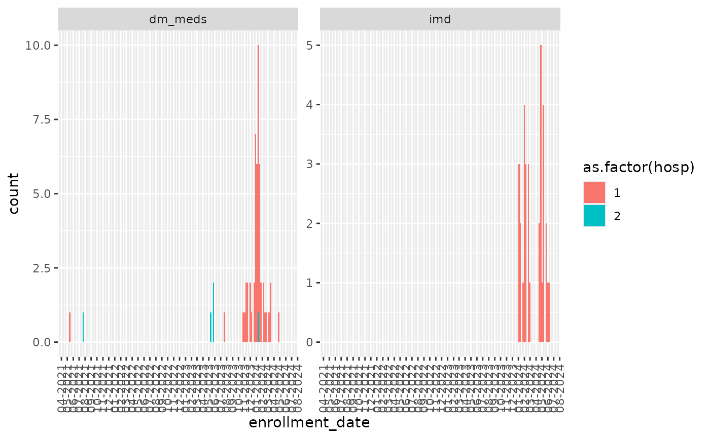

# The data input directory on my development machine:
options("avoncap.input" = "~/Data/avoncap/")
# library(avoncap)
devtools::load_all()
#> ℹ Loading avoncapInput data location
- first level directories.
- Filenames need some indication of database year (either as 20-21,21-22,… or as y1,y2,…)
# The data input directory on my development machine:
options("avoncap.input" = "~/Data/avoncap/")
# The directory structure:
fs::dir_tree(path = avoncap::input(),glob="*/cache/*",invert=TRUE)
#> /home/vp22681/Data/avoncap
#> ├── admission-dates
#> │ └── 2024-12-03
#> │ ├── central.csv
#> │ ├── controls 1.xlsx
#> │ ├── controls 2.xlsx
#> │ ├── ed arm.xlsx
#> │ └── main arm.xlsx
#> ├── avoncap-data-quality
#> │ ├── 2023-08-07
#> │ │ └── confirmed-missing-2023-08-07.csv
#> │ └── README.md
#> ├── avoncap-export
#> │ ├── 2022-03-22
#> │ │ ├── central_y1.csv
#> │ │ └── central_y2.csv
#> │ ├── 2022-06-20
#> │ │ ├── central_y1.csv
#> │ │ └── central_y2.csv
#> │ ├── 2022-07-11
#> │ │ ├── central_y1.csv
#> │ │ └── central_y2.csv
#> │ ├── 2022-09-21
#> │ │ ├── central_y1.csv
#> │ │ └── central_y2.csv
#> │ ├── 2022-10-07
#> │ │ └── uad-controls.csv
#> │ ├── 2022-11-09
#> │ │ ├── central_y1.csv
#> │ │ ├── central_y2.csv
#> │ │ └── uad-controls.csv
#> │ ├── 2023-03-02
#> │ │ ├── central_y1.csv
#> │ │ ├── central_y2.csv
#> │ │ └── central_y3.csv
#> │ ├── 2023-05-02
#> │ │ ├── central_y1.csv
#> │ │ ├── central_y2.csv
#> │ │ └── central_y3.csv
#> │ ├── 2023-06-12
#> │ │ ├── central_y1.csv
#> │ │ ├── central_y2.csv
#> │ │ └── central_y3.csv
#> │ ├── 2023-06-16
#> │ │ └── uad-controls.csv
#> │ ├── 2023-06-28
#> │ │ ├── central_y1.csv
#> │ │ ├── central_y2.csv
#> │ │ ├── central_y3.csv
#> │ │ └── gp.csv
#> │ ├── 2023-07-24
#> │ │ ├── central_y1.csv
#> │ │ ├── central_y2.csv
#> │ │ └── central_y3.csv
#> │ ├── 2023-09-13
#> │ │ ├── central_y1.csv
#> │ │ ├── central_y2.csv
#> │ │ └── central_y3.csv
#> │ ├── 2023-11-20
#> │ │ └── ed_y3.csv
#> │ ├── 2023-11-21
#> │ │ ├── central_y1.csv
#> │ │ ├── central_y2.csv
#> │ │ └── central_y3.csv
#> │ ├── 2023-11-24
#> │ │ ├── central_y1.csv
#> │ │ ├── central_y2.csv
#> │ │ ├── central_y3.csv
#> │ │ └── ed_y3.csv
#> │ ├── 2024-04-08
#> │ │ ├── central_y1.csv
#> │ │ ├── central_y2.csv
#> │ │ ├── central_y3.csv
#> │ │ ├── central_y4.csv
#> │ │ └── ed_y3.csv
#> │ ├── 2024-10-03
#> │ │ ├── central_y1.csv
#> │ │ ├── central_y2.csv
#> │ │ ├── central_y3.csv
#> │ │ ├── central_y4.csv
#> │ │ └── ed_y3.csv
#> │ ├── 2024-10-24
#> │ │ ├── central_y1.csv
#> │ │ ├── central_y2.csv
#> │ │ ├── central_y3.csv
#> │ │ └── central_y4.csv
#> │ ├── 2024-11-27
#> │ │ ├── central_y1.csv
#> │ │ ├── central_y2.csv
#> │ │ ├── central_y3.csv
#> │ │ ├── central_y4.csv
#> │ │ └── gp.csv
#> │ ├── 22-23 codebook NBT.pdf
#> │ ├── 22-23 codebook UHBW.pdf
#> │ ├── Avon CAP - LRTD Patients 21-22 _ REDCap codebook.pdf
#> │ ├── Avon CAP - LRTD central database 20-21 _ REDCap.pdf
#> │ ├── AvonCAP Pneumococcus Codebook.pdf
#> │ ├── AvonCAP field validity.xlsx
#> │ ├── GP_codebook.pdf
#> │ └── README.md
#> ├── avoncap.yaml
#> ├── cache
#> ├── downloads
#> │ └── README.md
#> ├── ethnicity
#> │ ├── 2022-07-12
#> │ │ ├── y1.csv
#> │ │ └── y2.csv
#> │ ├── 2022-10-27
#> │ │ ├── y1.csv
#> │ │ └── y2.csv
#> │ ├── 2023-06-07
#> │ │ ├── y1.csv
#> │ │ ├── y2.csv
#> │ │ └── y3.csv
#> │ ├── 2023-11-22
#> │ │ ├── BRI_y2_extra.csv
#> │ │ ├── BRI_y3_extra.csv
#> │ │ ├── NBT_y2_extra.csv
#> │ │ ├── NBT_y3_extra.csv
#> │ │ ├── y1.csv
#> │ │ ├── y2.csv
#> │ │ └── y3.csv
#> │ └── README.md
#> ├── google-mobility
#> │ └── Global_Mobility_Report.csv
#> ├── ltla-incidence
#> │ ├── ltla_2022-02-28.csv
#> │ └── ltla_2022-03-18.csv
#> ├── maybe_some_useful_files_data.zip
#> ├── metadata
#> │ ├── 2022-10-24
#> │ │ ├── central_y1.csv
#> │ │ ├── central_y2.csv
#> │ │ ├── central_y3.csv
#> │ │ └── uad-controls.csv
#> │ ├── 2022-11-29
#> │ │ └── pneumococcal.csv
#> │ └── README.md
#> ├── metadata-review
#> │ ├── 2022-10-25
#> │ │ └── metadata-review.csv
#> │ ├── AvonCAP 21-22 markred.xlsx
#> │ └── AvonCAP data dictionary - fields.csv
#> ├── nhs-extract
#> │ ├── 2022-07-11
#> │ │ ├── deltave_BRI_y1.csv
#> │ │ ├── deltave_BRI_y2.csv
#> │ │ ├── deltave_NBT_y1.csv
#> │ │ └── deltave_NBT_y2.csv
#> │ ├── 2022-09-20
#> │ │ ├── deltave_BRI_y1.csv
#> │ │ ├── deltave_BRI_y2.csv
#> │ │ ├── deltave_BRI_y3.csv
#> │ │ ├── deltave_NBT_y1.csv
#> │ │ ├── deltave_NBT_y2.csv
#> │ │ └── deltave_NBT_y3.csv
#> │ ├── 2022-11-16
#> │ │ ├── deltave_BRI_y1.csv
#> │ │ ├── deltave_BRI_y2.csv
#> │ │ ├── deltave_BRI_y3.csv
#> │ │ ├── deltave_NBT_y1.csv
#> │ │ ├── deltave_NBT_y2.csv
#> │ │ └── deltave_NBT_y3.csv
#> │ ├── 2022-11-29
#> │ │ └── pneumococcal.csv
#> │ ├── 2022-11-30
#> │ │ ├── deltave_BRI_y1.csv
#> │ │ ├── deltave_BRI_y2.csv
#> │ │ ├── deltave_BRI_y3.csv
#> │ │ ├── deltave_NBT_y1.csv
#> │ │ ├── deltave_NBT_y2.csv
#> │ │ └── deltave_NBT_y3.csv
#> │ ├── 2022-12-07
#> │ │ ├── deltave_BRI_y1.csv
#> │ │ ├── deltave_BRI_y2.csv
#> │ │ ├── deltave_BRI_y3.csv
#> │ │ ├── deltave_NBT_y1.csv
#> │ │ ├── deltave_NBT_y2.csv
#> │ │ └── deltave_NBT_y3.csv
#> │ ├── 2022-12-20
#> │ │ └── ipd_avoncap_linkage.csv
#> │ ├── 2023-02-07
#> │ │ └── pneumococcal.csv
#> │ ├── README.md
#> │ └── old
#> │ ├── AdmissionDateByStudyNumber_2022-07-12.csv
#> │ └── DeltaVE_04042022.csv
#> ├── spim-seroprevalence
#> │ └── week15_2022_seroprev_modellers.csv
#> └── urine-antigens
#> ├── 2022-09-15
#> │ └── uad-cases.csv
#> ├── 2023-05-15
#> │ ├── gp-cases.csv
#> │ └── uad-cases.csv
#> ├── B1851202_SAP V1.0-27Sep2021_Final.pdf
#> ├── README.md
#> └── Table Template Serotype Distribution Scientific Affairs Proposal_FINAL.docx
# get the most recent files
avoncap::most_recent_files("ethnicity")
#> # A tibble: 7 × 7
#> filename directory path date hospital study_year filetype
#> <chr> <chr> <fs::path> <date> <chr> <int> <chr>
#> 1 BRI_y2_extra ethnicity …I_y2_extra.csv 2023-11-22 BRI 2 csv
#> 2 BRI_y3_extra ethnicity …I_y3_extra.csv 2023-11-22 BRI 3 csv
#> 3 NBT_y2_extra ethnicity …T_y2_extra.csv 2023-11-22 NBT 2 csv
#> 4 NBT_y3_extra ethnicity …T_y3_extra.csv 2023-11-22 NBT 3 csv
#> 5 y1 ethnicity …3-11-22/y1.csv 2023-11-22 NA NA csv
#> 6 y2 ethnicity …3-11-22/y2.csv 2023-11-22 NA NA csv
#> 7 y3 ethnicity …3-11-22/y3.csv 2023-11-22 NA NA csvLoad data sources and recording provenance
ethn = avoncap::load_data("ethnicity")
#> caching item: ~/.cache/avoncap/data-6c0a3f301ee14020e3907a7472c55225-767899bd2d292ad780aeb94b72046017.rda
#> Loaded 54417 rows from 7 files, (5039+5085+6843+5925+9765+11928+9832=54417)
avoncap::most_recent_files("nhs-extract","deltave")
#> # A tibble: 6 × 7
#> filename directory path date hospital study_year filetype
#> <chr> <chr> <fs::path> <date> <chr> <int> <chr>
#> 1 deltave_BRI_y1 nhs-extract …BRI_y1.csv 2022-12-07 BRI 1 csv
#> 2 deltave_BRI_y2 nhs-extract …BRI_y2.csv 2022-12-07 BRI 2 csv
#> 3 deltave_BRI_y3 nhs-extract …BRI_y3.csv 2022-12-07 BRI 3 csv
#> 4 deltave_NBT_y1 nhs-extract …NBT_y1.csv 2022-12-07 NBT 1 csv
#> 5 deltave_NBT_y2 nhs-extract …NBT_y2.csv 2022-12-07 NBT 2 csv
#> 6 deltave_NBT_y3 nhs-extract …NBT_y3.csv 2022-12-07 NBT 3 csv
rawData = avoncap::load_data("nhs-extract","deltave")
#> using cached item: ~/.cache/avoncap/data-6c0a3f301ee14020e3907a7472c55225-efc310106a2b36fab3e67f93fe2c9461.rda
# rawData = avoncap::load_data("nhs-extract","deltave",merge = FALSE)
avoncap::save_data_source_info(ethn, rawData, .file = tempfile("file-info",fileext = ".txt"))
#> # A tibble: 13 × 2
#> path md5
#> <chr> <chr>
#> 1 /home/vp22681/Data/avoncap/ethnicity/2023-11-22/BRI_y2_extra.csv 030679d…
#> 2 /home/vp22681/Data/avoncap/ethnicity/2023-11-22/BRI_y3_extra.csv e66fe88…
#> 3 /home/vp22681/Data/avoncap/ethnicity/2023-11-22/NBT_y2_extra.csv 3726813…
#> 4 /home/vp22681/Data/avoncap/ethnicity/2023-11-22/NBT_y3_extra.csv afda520…
#> 5 /home/vp22681/Data/avoncap/ethnicity/2023-11-22/y1.csv 270d33e…
#> 6 /home/vp22681/Data/avoncap/ethnicity/2023-11-22/y2.csv 0a9ee3d…
#> 7 /home/vp22681/Data/avoncap/ethnicity/2023-11-22/y3.csv 3a4a048…
#> 8 /home/vp22681/Data/avoncap/nhs-extract/2022-12-07/deltave_BRI_y1.csv 66825a9…
#> 9 /home/vp22681/Data/avoncap/nhs-extract/2022-12-07/deltave_BRI_y2.csv cbd04cf…
#> 10 /home/vp22681/Data/avoncap/nhs-extract/2022-12-07/deltave_BRI_y3.csv b2fd072…
#> 11 /home/vp22681/Data/avoncap/nhs-extract/2022-12-07/deltave_NBT_y1.csv f61195e…
#> 12 /home/vp22681/Data/avoncap/nhs-extract/2022-12-07/deltave_NBT_y2.csv be0456b…
#> 13 /home/vp22681/Data/avoncap/nhs-extract/2022-12-07/deltave_NBT_y3.csv 49d5d4e…Normalising data
# devtools::install_local(force=TRUE)
normData = rawData %>%
avoncap::validate_data() %T>%
# note the magrittr `T` pipe above to drop the output of write issues
avoncap::write_issues("issues.csv") %>%
avoncap::normalise_data()
#> validate data using: validate.nhs_extract.deltave
#> Normalising data using: normalise.nhs_extract.deltave
#> Some columns expected in the mappings were not present: consent_urine, consent_blood, consent_resp_samples1, what_was_the_first_surveil, admission_type, gp_practice, gp_practice_drop_down, hapcovid_screening, hospital_covid, np_swab, adm_np_type, np_date, days_adm_npswab, np_swab_2, adm_np_type_2, np_date_2, np_swab_3, adm_np_type_3, np_date_3, saliva, saliva_date, days_adm_saliva, sputum, sputum_date, days_adm_sputum, pt_ad_ur, adm_ur_taken, nourine_reason, adm_np_type_2, adm_ur_date, days_adm_urine, adm_serum_tak, adm_seru_date, days_adm_serum, adm_diagnosis, survive_1yr, survival_1yr_days, yr_survival_complete, confusion, abx_14d_prior, antibiotic_used, antiplatelets, anticoagulants, statins, hypertensives, antiviral_14d_prior
#> caching item: ~/.cache/avoncap/norm-0ef4812a2d1bc751062531c384a2b89e-04a34557b09f3bba65af1f8736d413bd.rda
#> mapping .consented to admin.consented
#> mapping .ppc to admin.pp_consented
#> mapping .withdrawal to admin.withdrawal
#> the input data set does not have a consent_urine column (or column set)
#> the input data set does not have a consent_blood column (or column set)
#> the input data set does not have a consent_resp_samples1 column (or column set)
#> mapping .record_number to admin.record_number
#> the input data set does not have a what_was_the_first_surveil column (or column set)
#> mapping .ac_study_number to admin.consented_record_number
#> mapping .nhs_number to admin.patient_identifier
#> mapping .duplicate to admin.duplicate
#> mapping .enrollment_date to admin.enrollment_date
#> the input data set does not have a admission_type column (or column set)
#> mapping .study_year to admin.study_year
#> mapping .file to admin.data_file
#> mapping .week_number to admin.week_number
#> mapping .c19_diagnosis to diagnosis.standard_of_care_COVID_diagnosis
#> mapping .clinical_radio_diagnosis to diagnosis.clinical_or_radiological_LRTI_or_pneumonia
#> mapping .c19_adm_swab to diagnosis.admission_swab
#> mapping .c19_test_type to diagnosis.test_type
#> mapping .qualifying_symptoms_signs to diagnosis.qualifying_symptoms_signs
#> mapping .cc_critieria to diagnosis.meets_case_control_criteria
#> mapping .cc_pos_date to diagnosis.first_COVID_positive_swab_date
#> mapping .gender to demog.gender
#> mapping .age_at_admission to demog.age
#> mapping .age_march to demog.age_in_march_2021
#> mapping .imd to demog.imd_decile
#> the input data set does not have a gp_practice column (or column set)
#> the input data set does not have a gp_practice_drop_down column (or column set)
#> mapping .smoking to demog.smoker
#> mapping .ethnicity2 to demog.ethnicity
#> mapping .care_home to demog.care_home_resident
#> the input data set does not have a hapcovid_screening column (or column set)
#> the input data set does not have a hospital_covid column (or column set)
#> mapping .drugs___1 to demog.no_drug_abuse
#> mapping .drugs___2 to demog.alcohol_abuse
#> mapping .drugs___3 to demog.ivdu_abuse
#> mapping .drugs___4 to demog.marijuana_abuse
#> mapping .drugs___5 to demog.other_inhaled_drug_abuse
#> mapping .vaping to demog.vaping
#> mapping .alc_units to demog.units_of_alcohol
#> the input data set does not have a np_swab column (or column set)
#> the input data set does not have a adm_np_type column (or column set)
#> the input data set does not have a np_date column (or column set)
#> the input data set does not have a days_adm_npswab column (or column set)
#> the input data set does not have a np_swab_2 column (or column set)
#> the input data set does not have a adm_np_type_2 column (or column set)
#> the input data set does not have a np_date_2 column (or column set)
#> the input data set does not have a np_swab_3 column (or column set)
#> the input data set does not have a adm_np_type_3 column (or column set)
#> the input data set does not have a np_date_3 column (or column set)
#> the input data set does not have a saliva column (or column set)
#> the input data set does not have a saliva_date column (or column set)
#> the input data set does not have a days_adm_saliva column (or column set)
#> the input data set does not have a sputum column (or column set)
#> the input data set does not have a sputum_date column (or column set)
#> the input data set does not have a days_adm_sputum column (or column set)
#> the input data set does not have a pt_ad_ur column (or column set)
#> the input data set does not have a adm_ur_taken column (or column set)
#> the input data set does not have a nourine_reason column (or column set)
#> the input data set does not have a adm_np_type_2 column (or column set)
#> the input data set does not have a adm_ur_date column (or column set)
#> the input data set does not have a days_adm_urine column (or column set)
#> the input data set does not have a adm_serum_tak column (or column set)
#> the input data set does not have a adm_seru_date column (or column set)
#> the input data set does not have a days_adm_serum column (or column set)
#> mapping .contraindication to vaccination.covid_vaccine_contraindicated
#> mapping .covid19_vax to vaccination.covid_vaccination
#> mapping .covidvax_date to vaccination.first_dose_date
#> mapping .covidvax_dose_2 to vaccination.second_dose_date
#> mapping .covidvax_dose_3 to vaccination.third_dose_date
#> mapping .covidvax_dose_4 to vaccination.fourth_dose_date
#> mapping .covidvax_dose_5 to vaccination.fifth_dose_date
#> mapping .covidvax_dose_6 to vaccination.sixth_dose_date
#> mapping .brand_of_covid19_vaccinati to vaccination.first_dose_brand
#> mapping .covid19vax_brand_2 to vaccination.second_dose_brand
#> mapping .covid19vax_brand_3 to vaccination.third_dose_brand
#> mapping .covid19vax_brand_4 to vaccination.fourth_dose_brand
#> mapping .covid19vax_brand_5 to vaccination.fifth_dose_brand
#> mapping .covid19vax_brand_6 to vaccination.sixth_dose_brand
#> mapping .c19vaxd1_adm to admission.time_since_first_vaccine_dose
#> mapping .c19vaxd2_adm to admission.time_since_second_vaccine_dose
#> mapping .c19vaxd3_adm to admission.time_since_third_vaccine_dose
#> mapping .c19vaxd4_adm to admission.time_since_fourth_vaccine_dose
#> mapping .c19vax5_adm to admission.time_since_fifth_vaccine_dose
#> mapping .c19vax6_adm to admission.time_since_sixth_vaccine_dose
#> mapping .flu_date to vaccination.last_flu_dose_date
#> mapping .fluvax_adm_d1 to admission.time_since_last_flu_vaccine_dose
#> mapping .ppv23_date to vaccination.last_pneumococcal_dose_date
#> mapping .ppv23vax_adm_d to admission.time_since_last_pneumococcal_vaccine_dose
#> mapping .c19_variant to genomic.variant
#> mapping .year to admission.year
#> mapping .study_week to admission.study_week
#> mapping .admission_date to admission.date
#> mapping .hospital to admin.hospital
#> the input data set does not have a adm_diagnosis column (or column set)
#> mapping .ics to admission.on_inhaled_corticosteroids
#> mapping .immsup to admission.on_immunosuppression
#> mapping .psi_class to admission.pneumonia_severity_index_class
#> mapping .crb_test_mai to admission.curb_65_severity_score
#> mapping .news_2_total to admission.news2_score
#> mapping .pulse_ox to admission.oximetry
#> mapping .rr to admission.respiratory_rate
#> mapping .fio2 to admission.max_oxygen
#> mapping .systolic_bp to admission.systolic_bp
#> mapping .diastolic_bp to admission.diastolic_bp
#> mapping .hr to admission.heart_rate
#> mapping .temperature to admission.temperature
#> mapping .symptom_days_preadmit to admission.duration_symptoms
#> mapping .previous_infection to admission.previous_covid_infection
#> mapping .previousinfection_date to admission.previous_covid_infection_date
#> mapping .c19d_preadm to admission.time_since_covid_diagnosis
#> mapping .rockwood to admission.rockwood_score
#> mapping .cci_total_score to admission.charlson_comorbidity_index
#> mapping .height to admission.height
#> mapping .weight to admission.weight
#> mapping .bmi to admission.BMI
#> mapping .first_radio___1 to admission.cxr_normal
#> mapping .first_radio___2 to admission.cxr_pneumonia
#> mapping .first_radio___3 to admission.cxr_heart_failure
#> mapping .first_radio___4 to admission.cxr_pleural_effusion
#> mapping .first_radio___5 to admission.cxr_covid_changes
#> mapping .first_radio___6 to admission.cxr_other
#> mapping .c19_peep to day_7.max_peep
#> mapping .c19_hospadm to day_7.length_of_stay
#> mapping .c17_high to day_7.max_care_level
#> mapping .c19icuon to day_7.still_on_icu
#> mapping .c19_icudays to day_7.icu_length_of_stay
#> mapping .c19_vent to day_7.max_ventilation_level
#> mapping .c19_ox to day_7.max_o2_level
#> mapping .c19_ionotropes to day_7.ionotropes_needed
#> mapping .c19_complication___1 to day_7.PE
#> mapping .c19_complication___2 to day_7.DVT
#> mapping .c19_complication___3 to day_7.ARF
#> mapping .c19_complication___4 to day_7.NSTEMI
#> mapping .c19_complication___5 to day_7.STEMI
#> mapping .c19_complication___6 to day_7.cardiac_failure
#> mapping .c19_complication___7 to day_7.new_AF
#> mapping .c19_complication___8 to day_7.new_other_arrythmia
#> mapping .c19_complication___9 to day_7.inpatient_fall
#> mapping .c19_complication___10 to day_7.other_complication
#> mapping .c19_complication___11 to day_7.no_complication
#> mapping .c19_death7d to day_7.death
#> mapping .c19_meds___1 to treatment.dexamethasone
#> mapping .c19_meds___2 to treatment.remdesevir
#> mapping .c19_meds___3 to treatment.tocilizumab
#> mapping .c19_meds___4 to treatment.sarilumab
#> mapping .c19_meds___5 to treatment.in_drug_trial
#> mapping .c19_meds___6 to treatment.no_drug_treatment
#> mapping .c19_meds___7 to treatment.sotrovimab
#> mapping .hospital_length_of_stay to outcome.length_of_stay
#> mapping .survival_days to outcome.survival_duration
#> mapping .ip_death to outcome.inpatient_death
#> mapping .days_in_icu to outcome.icu_duration
#> mapping .did_the_patient_have_respi to outcome.respiratory_support_needed
#> mapping .number_of_days_of_ventilat to outcome.ventilator_duration
#> mapping .ett_days to outcome.endotracheal_tube_duration
#> mapping .renal_replacement_therapy to outcome.renal_support_duration
#> mapping .complications___1 to outcome.acute_renal_failure
#> mapping .complications___2 to outcome.liver_dysfunction
#> mapping .complications___3 to outcome.hospital_acquired_infection
#> mapping .complications___4 to outcome.acute_respiratory_distress_syndrome
#> mapping .complications___5 to outcome.NSTEMI
#> mapping .complications___6 to outcome.STEMI
#> mapping .complications___7 to outcome.new_AF
#> mapping .complications___8 to outcome.new_other_arrhthmia
#> mapping .complications___9 to outcome.stroke
#> mapping .complications___10 to outcome.DVT
#> mapping .complications___11 to outcome.PE
#> mapping .complications___12 to outcome.heart_failure
#> mapping .complications___13 to outcome.fall_in_hospital
#> mapping .complications___14 to outcome.reduced_mobility
#> mapping .complications___15 to outcome.increasing_care_requirement
#> mapping .complications___16 to outcome.no_complications
#> mapping .ventilatory_support to outcome.highest_level_ventilatory_support
#> mapping .did_the_patient_receive_ec to outcome.received_ecmo
#> mapping .inotropic_support_required to outcome.received_ionotropes
#> mapping .lrtd_30d_outcome to outcome.functional_status
#> the input data set does not have a survive_1yr column (or column set)
#> the input data set does not have a survival_1yr_days column (or column set)
#> the input data set does not have a yr_survival_complete column (or column set)
#> mapping .fever2 to symptom.abnormal_temperature
#> mapping .pleurtic_cp to symptom.pleuritic_chest_pain
#> mapping .cough2 to symptom.cough
#> mapping .sput_prod to symptom.productive_sputum
#> mapping .dyspnoea to symptom.dyspnoea
#> mapping .tachypnoea2 to symptom.tachypnoea
#> the input data set does not have a confusion column (or column set)
#> mapping .anosmia to symptom.anosmia
#> mapping .ageusia to symptom.ageusia
#> mapping .dysgeusia to symptom.dysguesia
#> mapping .fever to symptom.fever
#> mapping .hypothermia to symptom.hypothermia
#> mapping .chills to symptom.chills
#> mapping .headache to symptom.headache
#> mapping .malaise to symptom.malaise
#> mapping .wheeze to symptom.wheeze
#> mapping .myalgia to symptom.myalgia
#> mapping .worse_confusion to symptom.worsening_confusion
#> mapping .general_det to symptom.general_deterioration
#> mapping .ox_on_admission to symptom.oxygen_required_on_admission
#> mapping .resp_disease___1 to comorbid.no_resp_dx
#> mapping .resp_disease___2 to comorbid.copd
#> mapping .resp_disease___3 to comorbid.asthma
#> mapping .resp_disease___4 to comorbid.resp_other
#> mapping .other_respiratory_disease___1 to comorbid.bronchiectasis
#> mapping .other_respiratory_disease___2 to comorbid.interstitial_lung_dx
#> mapping .other_respiratory_disease___3 to comorbid.cystic_fibrosis
#> mapping .other_respiratory_disease___4 to comorbid.pulmonary_hypertension
#> mapping .other_respiratory_disease___5 to comorbid.chronic_pleural_dx
#> mapping .other_respiratory_disease___6 to comorbid.other_chronic_resp_dx
#> mapping .chd___1 to comorbid.no_heart_dx
#> mapping .chd___2 to comorbid.ccf
#> mapping .chd___3 to comorbid.ihd
#> mapping .chd___4 to comorbid.hypertension
#> mapping .chd___5 to comorbid.other_heart_dx
#> mapping .mi to comorbid.previous_mi
#> mapping .other_chd___1 to comorbid.congenital_heart_dx
#> mapping .other_chd___2 to comorbid.af
#> mapping .other_chd___3 to comorbid.other_arrythmia
#> mapping .other_chd___4 to comorbid.pacemaker
#> mapping .other_chd___5 to comorbid.valvular_heart_dx
#> mapping .other_chd___6 to comorbid.other_other_heart_dx
#> mapping .diabetes to comorbid.diabetes
#> mapping .dm_meds to comorbid.diabetes_medications
#> mapping .neurological_disease___1 to comorbid.neuro_other
#> mapping .neurological_disease___2 to comorbid.cva
#> mapping .neurological_disease___3 to comorbid.tia
#> mapping .neurological_disease___4 to comorbid.hemiplegia
#> mapping .neurological_disease___5 to comorbid.paraplegia
#> mapping .neurological_disease___6 to comorbid.no_neuro_dx
#> mapping .dementia___1 to comorbid.no_dementia
#> mapping .dementia___2 to comorbid.dementia
#> mapping .dementia___3 to comorbid.cognitive_impairment
#> mapping .cancer to comorbid.solid_cancer
#> mapping .haem_malig___1 to comorbid.no_haemotological_cancer
#> mapping .haem_malig___2 to comorbid.leukaemia
#> mapping .haem_malig___3 to comorbid.lymphoma
#> mapping .ckd to comorbid.ckd
#> mapping .liver_disease to comorbid.liver_disease
#> mapping .gastric_ulcers to comorbid.gastric_ulcers
#> mapping .pvd to comorbid.periph_vasc_dx
#> mapping .ctd to comorbid.connective_tissue_dx
#> mapping .immunodeficiency to comorbid.immunodeficiency
#> mapping .other_pn_disease to comorbid.other_pneumococcal_risks
#> mapping .transplant to comorbid.transplant_recipient
#> mapping .pregnancy to comorbid.pregnancy
#> mapping .hiv___1 to comorbid.no_HIV
#> mapping .hiv___2 to comorbid.HIV
#> mapping .hiv___3 to comorbid.AIDS
#> mapping .final_soc_lrtd_diagnosis___1 to diagnosis.SOC_CAP_radiologically_confirmed
#> mapping .final_soc_lrtd_diagnosis___2 to diagnosis.SOC_CAP_clinically_confirmed
#> mapping .final_soc_lrtd_diagnosis___3 to diagnosis.SOC_CAP_no_radiology
#> mapping .final_soc_lrtd_diagnosis___4 to diagnosis.SOC_LRTI
#> mapping .final_soc_lrtd_diagnosis___5 to diagnosis.SOC_Empyema_or_abscess
#> mapping .final_soc_lrtd_diagnosis___6 to diagnosis.SOC_exacerbation_COPD
#> mapping .final_soc_lrtd_diagnosis___7 to diagnosis.SOC_exacerbation_non_COPD
#> mapping .final_soc_lrtd_diagnosis___8 to diagnosis.SOC_congestive_heart_failure
#> mapping .final_soc_lrtd_diagnosis___9 to diagnosis.SOC_non_infectious_process
#> mapping .final_soc_lrtd_diagnosis___10 to diagnosis.SOC_non_LRTI
#> mapping .covid_19_diagnosis to diagnosis.covid_19_diagnosis
#> mapping .ppv23 to vaccination.pneumovax
#> mapping .flu_vaccine to vaccination.influenza_vaccination
#> the input data set does not have a abx_14d_prior column (or column set)
#> the input data set does not have a antibiotic_used column (or column set)
#> the input data set does not have a antiplatelets column (or column set)
#> the input data set does not have a anticoagulants column (or column set)
#> the input data set does not have a statins column (or column set)
#> the input data set does not have a hypertensives column (or column set)
#> the input data set does not have a antiviral_14d_prior column (or column set)
#> Mapped 238 columns
#> Did not map 8 columnsMapping columns
# Successfully mapped columns
# attr(normData,"mapped")
# Columns that are present in the normData but not mapped
attr(normData,"unmapped")
#> [1] ".spec_other_resp" ".spec_other_cardiac" ".batch_code1"
#> [4] ".batch_code2" ".c19_compother" ".batch_code3"
#> [7] ".batch_code4" ".batch_code5"
# Columns not present in the normData for which mapping rules were supplied
attr(normData,"missing")
#> [1] "consent_urine" "consent_blood"
#> [3] "consent_resp_samples1" "what_was_the_first_surveil"
#> [5] "admission_type" "gp_practice"
#> [7] "gp_practice_drop_down" "hapcovid_screening"
#> [9] "hospital_covid" "np_swab"
#> [11] "adm_np_type" "np_date"
#> [13] "days_adm_npswab" "np_swab_2"
#> [15] "adm_np_type_2" "np_date_2"
#> [17] "np_swab_3" "adm_np_type_3"
#> [19] "np_date_3" "saliva"
#> [21] "saliva_date" "days_adm_saliva"
#> [23] "sputum" "sputum_date"
#> [25] "days_adm_sputum" "pt_ad_ur"
#> [27] "adm_ur_taken" "nourine_reason"
#> [29] "adm_np_type_2" "adm_ur_date"
#> [31] "days_adm_urine" "adm_serum_tak"
#> [33] "adm_seru_date" "days_adm_serum"
#> [35] "adm_diagnosis" "survive_1yr"
#> [37] "survival_1yr_days" "yr_survival_complete"
#> [39] "confusion" "abx_14d_prior"
#> [41] "antibiotic_used" "antiplatelets"
#> [43] "anticoagulants" "statins"
#> [45] "hypertensives" "antiviral_14d_prior"Original field names, and labels.
# devtools::load_all()
# generate a set of readable label mappings from column to printable name for the whole normData set
# overriding a particular label
# readable_label_mapping(normData, demog.age="TEST")
# Map a single column name as a string to a readable label
readable_label("comorbid.previous_MI")
#> [1] "Previous MI"
# get mapping from original field names pre-normalisation to
# post normalisation fields
original_field_names(normData)
#> consented
#> "admin.consented"
#> ppc
#> "admin.pp_consented"
#> withdrawal
#> "admin.withdrawal"
#> record_number
#> "admin.record_number"
#> ac_study_number
#> "admin.consented_record_number"
#> nhs_number
#> "admin.patient_identifier"
#> duplicate
#> "admin.duplicate"
#> enrollment_date
#> "admin.enrollment_date"
#> study_year
#> "admin.study_year"
#> file
#> "admin.data_file"
#> week_number
#> "admin.week_number"
#> c19_diagnosis
#> "diagnosis.standard_of_care_COVID_diagnosis"
#> clinical_radio_diagnosis
#> "diagnosis.clinical_or_radiological_LRTI_or_pneumonia"
#> c19_adm_swab
#> "diagnosis.admission_swab"
#> c19_test_type
#> "diagnosis.test_type"
#> qualifying_symptoms_signs
#> "diagnosis.qualifying_symptoms_signs"
#> cc_critieria
#> "diagnosis.meets_case_control_criteria"
#> cc_pos_date
#> "diagnosis.first_COVID_positive_swab_date"
#> gender
#> "demog.gender"
#> age_at_admission
#> "demog.age"
#> age_march
#> "demog.age_in_march_2021"
#> imd
#> "demog.imd_decile"
#> smoking
#> "demog.smoker"
#> ethnicity2
#> "demog.ethnicity"
#> care_home
#> "demog.care_home_resident"
#> drugs___1
#> "demog.no_drug_abuse"
#> drugs___2
#> "demog.alcohol_abuse"
#> drugs___3
#> "demog.ivdu_abuse"
#> drugs___4
#> "demog.marijuana_abuse"
#> drugs___5
#> "demog.other_inhaled_drug_abuse"
#> vaping
#> "demog.vaping"
#> alc_units
#> "demog.units_of_alcohol"
#> contraindication
#> "vaccination.covid_vaccine_contraindicated"
#> covid19_vax
#> "vaccination.covid_vaccination"
#> covidvax_date
#> "vaccination.first_dose_date"
#> covidvax_dose_2
#> "vaccination.second_dose_date"
#> covidvax_dose_3
#> "vaccination.third_dose_date"
#> covidvax_dose_4
#> "vaccination.fourth_dose_date"
#> covidvax_dose_5
#> "vaccination.fifth_dose_date"
#> covidvax_dose_6
#> "vaccination.sixth_dose_date"
#> brand_of_covid19_vaccinati
#> "vaccination.first_dose_brand"
#> covid19vax_brand_2
#> "vaccination.second_dose_brand"
#> covid19vax_brand_3
#> "vaccination.third_dose_brand"
#> covid19vax_brand_4
#> "vaccination.fourth_dose_brand"
#> covid19vax_brand_5
#> "vaccination.fifth_dose_brand"
#> covid19vax_brand_6
#> "vaccination.sixth_dose_brand"
#> c19vaxd1_adm
#> "admission.time_since_first_vaccine_dose"
#> c19vaxd2_adm
#> "admission.time_since_second_vaccine_dose"
#> c19vaxd3_adm
#> "admission.time_since_third_vaccine_dose"
#> c19vaxd4_adm
#> "admission.time_since_fourth_vaccine_dose"
#> c19vax5_adm
#> "admission.time_since_fifth_vaccine_dose"
#> c19vax6_adm
#> "admission.time_since_sixth_vaccine_dose"
#> flu_date
#> "vaccination.last_flu_dose_date"
#> fluvax_adm_d1
#> "admission.time_since_last_flu_vaccine_dose"
#> ppv23_date
#> "vaccination.last_pneumococcal_dose_date"
#> ppv23vax_adm_d
#> "admission.time_since_last_pneumococcal_vaccine_dose"
#> c19_variant
#> "genomic.variant"
#> year
#> "admission.year"
#> study_week
#> "admission.study_week"
#> admission_date
#> "admission.date"
#> hospital
#> "admin.hospital"
#> ics
#> "admission.on_inhaled_corticosteroids"
#> immsup
#> "admission.on_immunosuppression"
#> psi_class
#> "admission.pneumonia_severity_index_class"
#> crb_test_mai
#> "admission.curb_65_severity_score"
#> news_2_total
#> "admission.news2_score"
#> pulse_ox
#> "admission.oximetry"
#> rr
#> "admission.respiratory_rate"
#> fio2
#> "admission.max_oxygen"
#> systolic_bp
#> "admission.systolic_bp"
#> diastolic_bp
#> "admission.diastolic_bp"
#> hr
#> "admission.heart_rate"
#> temperature
#> "admission.temperature"
#> symptom_days_preadmit
#> "admission.duration_symptoms"
#> previous_infection
#> "admission.previous_covid_infection"
#> previousinfection_date
#> "admission.previous_covid_infection_date"
#> c19d_preadm
#> "admission.time_since_covid_diagnosis"
#> rockwood
#> "admission.rockwood_score"
#> cci_total_score
#> "admission.charlson_comorbidity_index"
#> height
#> "admission.height"
#> weight
#> "admission.weight"
#> bmi
#> "admission.BMI"
#> first_radio___1
#> "admission.cxr_normal"
#> first_radio___2
#> "admission.cxr_pneumonia"
#> first_radio___3
#> "admission.cxr_heart_failure"
#> first_radio___4
#> "admission.cxr_pleural_effusion"
#> first_radio___5
#> "admission.cxr_covid_changes"
#> first_radio___6
#> "admission.cxr_other"
#> c19_peep
#> "day_7.max_peep"
#> c19_hospadm
#> "day_7.length_of_stay"
#> c17_high
#> "day_7.max_care_level"
#> c19icuon
#> "day_7.still_on_icu"
#> c19_icudays
#> "day_7.icu_length_of_stay"
#> c19_vent
#> "day_7.max_ventilation_level"
#> c19_ox
#> "day_7.max_o2_level"
#> c19_ionotropes
#> "day_7.ionotropes_needed"
#> c19_complication___1
#> "day_7.PE"
#> c19_complication___2
#> "day_7.DVT"
#> c19_complication___3
#> "day_7.ARF"
#> c19_complication___4
#> "day_7.NSTEMI"
#> c19_complication___5
#> "day_7.STEMI"
#> c19_complication___6
#> "day_7.cardiac_failure"
#> c19_complication___7
#> "day_7.new_AF"
#> c19_complication___8
#> "day_7.new_other_arrythmia"
#> c19_complication___9
#> "day_7.inpatient_fall"
#> c19_complication___10
#> "day_7.other_complication"
#> c19_complication___11
#> "day_7.no_complication"
#> c19_death7d
#> "day_7.death"
#> c19_meds___1
#> "treatment.dexamethasone"
#> c19_meds___2
#> "treatment.remdesevir"
#> c19_meds___3
#> "treatment.tocilizumab"
#> c19_meds___4
#> "treatment.sarilumab"
#> c19_meds___5
#> "treatment.in_drug_trial"
#> c19_meds___6
#> "treatment.no_drug_treatment"
#> c19_meds___7
#> "treatment.sotrovimab"
#> hospital_length_of_stay
#> "outcome.length_of_stay"
#> survival_days
#> "outcome.survival_duration"
#> ip_death
#> "outcome.inpatient_death"
#> days_in_icu
#> "outcome.icu_duration"
#> did_the_patient_have_respi
#> "outcome.respiratory_support_needed"
#> number_of_days_of_ventilat
#> "outcome.ventilator_duration"
#> ett_days
#> "outcome.endotracheal_tube_duration"
#> renal_replacement_therapy
#> "outcome.renal_support_duration"
#> complications___1
#> "outcome.acute_renal_failure"
#> complications___2
#> "outcome.liver_dysfunction"
#> complications___3
#> "outcome.hospital_acquired_infection"
#> complications___4
#> "outcome.acute_respiratory_distress_syndrome"
#> complications___5
#> "outcome.NSTEMI"
#> complications___6
#> "outcome.STEMI"
#> complications___7
#> "outcome.new_AF"
#> complications___8
#> "outcome.new_other_arrhthmia"
#> complications___9
#> "outcome.stroke"
#> complications___10
#> "outcome.DVT"
#> complications___11
#> "outcome.PE"
#> complications___12
#> "outcome.heart_failure"
#> complications___13
#> "outcome.fall_in_hospital"
#> complications___14
#> "outcome.reduced_mobility"
#> complications___15
#> "outcome.increasing_care_requirement"
#> complications___16
#> "outcome.no_complications"
#> ventilatory_support
#> "outcome.highest_level_ventilatory_support"
#> did_the_patient_receive_ec
#> "outcome.received_ecmo"
#> inotropic_support_required
#> "outcome.received_ionotropes"
#> lrtd_30d_outcome
#> "outcome.functional_status"
#> fever2
#> "symptom.abnormal_temperature"
#> pleurtic_cp
#> "symptom.pleuritic_chest_pain"
#> cough2
#> "symptom.cough"
#> sput_prod
#> "symptom.productive_sputum"
#> dyspnoea
#> "symptom.dyspnoea"
#> tachypnoea2
#> "symptom.tachypnoea"
#> anosmia
#> "symptom.anosmia"
#> ageusia
#> "symptom.ageusia"
#> dysgeusia
#> "symptom.dysguesia"
#> fever
#> "symptom.fever"
#> hypothermia
#> "symptom.hypothermia"
#> chills
#> "symptom.chills"
#> headache
#> "symptom.headache"
#> malaise
#> "symptom.malaise"
#> wheeze
#> "symptom.wheeze"
#> myalgia
#> "symptom.myalgia"
#> worse_confusion
#> "symptom.worsening_confusion"
#> general_det
#> "symptom.general_deterioration"
#> ox_on_admission
#> "symptom.oxygen_required_on_admission"
#> resp_disease___1
#> "comorbid.no_resp_dx"
#> resp_disease___2
#> "comorbid.copd"
#> resp_disease___3
#> "comorbid.asthma"
#> resp_disease___4
#> "comorbid.resp_other"
#> other_respiratory_disease___1
#> "comorbid.bronchiectasis"
#> other_respiratory_disease___2
#> "comorbid.interstitial_lung_dx"
#> other_respiratory_disease___3
#> "comorbid.cystic_fibrosis"
#> other_respiratory_disease___4
#> "comorbid.pulmonary_hypertension"
#> other_respiratory_disease___5
#> "comorbid.chronic_pleural_dx"
#> other_respiratory_disease___6
#> "comorbid.other_chronic_resp_dx"
#> chd___1
#> "comorbid.no_heart_dx"
#> chd___2
#> "comorbid.ccf"
#> chd___3
#> "comorbid.ihd"
#> chd___4
#> "comorbid.hypertension"
#> chd___5
#> "comorbid.other_heart_dx"
#> mi
#> "comorbid.previous_mi"
#> other_chd___1
#> "comorbid.congenital_heart_dx"
#> other_chd___2
#> "comorbid.af"
#> other_chd___3
#> "comorbid.other_arrythmia"
#> other_chd___4
#> "comorbid.pacemaker"
#> other_chd___5
#> "comorbid.valvular_heart_dx"
#> other_chd___6
#> "comorbid.other_other_heart_dx"
#> diabetes
#> "comorbid.diabetes"
#> dm_meds
#> "comorbid.diabetes_medications"
#> neurological_disease___1
#> "comorbid.neuro_other"
#> neurological_disease___2
#> "comorbid.cva"
#> neurological_disease___3
#> "comorbid.tia"
#> neurological_disease___4
#> "comorbid.hemiplegia"
#> neurological_disease___5
#> "comorbid.paraplegia"
#> neurological_disease___6
#> "comorbid.no_neuro_dx"
#> dementia___1
#> "comorbid.no_dementia"
#> dementia___2
#> "comorbid.dementia"
#> dementia___3
#> "comorbid.cognitive_impairment"
#> cancer
#> "comorbid.solid_cancer"
#> haem_malig___1
#> "comorbid.no_haemotological_cancer"
#> haem_malig___2
#> "comorbid.leukaemia"
#> haem_malig___3
#> "comorbid.lymphoma"
#> ckd
#> "comorbid.ckd"
#> liver_disease
#> "comorbid.liver_disease"
#> gastric_ulcers
#> "comorbid.gastric_ulcers"
#> pvd
#> "comorbid.periph_vasc_dx"
#> ctd
#> "comorbid.connective_tissue_dx"
#> immunodeficiency
#> "comorbid.immunodeficiency"
#> other_pn_disease
#> "comorbid.other_pneumococcal_risks"
#> transplant
#> "comorbid.transplant_recipient"
#> pregnancy
#> "comorbid.pregnancy"
#> hiv___1
#> "comorbid.no_HIV"
#> hiv___2
#> "comorbid.HIV"
#> hiv___3
#> "comorbid.AIDS"
#> final_soc_lrtd_diagnosis___1
#> "diagnosis.SOC_CAP_radiologically_confirmed"
#> final_soc_lrtd_diagnosis___2
#> "diagnosis.SOC_CAP_clinically_confirmed"
#> final_soc_lrtd_diagnosis___3
#> "diagnosis.SOC_CAP_no_radiology"
#> final_soc_lrtd_diagnosis___4
#> "diagnosis.SOC_LRTI"
#> final_soc_lrtd_diagnosis___5
#> "diagnosis.SOC_Empyema_or_abscess"
#> final_soc_lrtd_diagnosis___6
#> "diagnosis.SOC_exacerbation_COPD"
#> final_soc_lrtd_diagnosis___7
#> "diagnosis.SOC_exacerbation_non_COPD"
#> final_soc_lrtd_diagnosis___8
#> "diagnosis.SOC_congestive_heart_failure"
#> final_soc_lrtd_diagnosis___9
#> "diagnosis.SOC_non_infectious_process"
#> final_soc_lrtd_diagnosis___10
#> "diagnosis.SOC_non_LRTI"
#> covid_19_diagnosis
#> "diagnosis.covid_19_diagnosis"
#> ppv23
#> "vaccination.pneumovax"
#> flu_vaccine
#> "vaccination.influenza_vaccination"
# unname(readable_label_mapping(normData))Augmenting the VE extract data
# devtools::load_all()
augData = normData %>% avoncap::augment_data()
#> Augmenting data using: augment.nhs_extract.deltave
#> caching item: ~/.cache/avoncap/augment-4c0c0c577381837fb7b8ee36b440288a-13a439fc0eaf80fd2a2bb9bebcf8fcc2.rda
#> Created demog.age_category, demog.age_eligible, admission.cci_category, admission.cci_category_alternate, admission.rockwood_category, admission.curb_65_category using: demog.age, admission.charlson_comorbidity_index, admission.rockwood_score, admission.curb_65_severity_score
#> Created admission.episode, admission.interval using: admin.patient_identifier, admission.date
#> Created comorbid.diabetes_type, comorbid.solid_cancer_present, comorbid.haemotological_cancer_present, comorbid.any_cancer_present, comorbid.any_chronic_lung_disease, comorbid.any_chronic_heart_disease, comorbid.cva_or_tia, comorbid.any_immune_compromise using: comorbid.diabetes, comorbid.solid_cancer, comorbid.leukaemia, comorbid.lymphoma, comorbid.no_haemotological_cancer, comorbid.asthma, comorbid.bronchiectasis, comorbid.chronic_pleural_dx, comorbid.copd, comorbid.interstitial_lung_dx, comorbid.cystic_fibrosis, comorbid.other_chronic_resp_dx, comorbid.pulmonary_hypertension, comorbid.ccf, comorbid.ihd, comorbid.previous_mi, comorbid.congenital_heart_dx, comorbid.hypertension, comorbid.af, comorbid.other_arrythmia, comorbid.other_heart_dx, comorbid.other_other_heart_dx, comorbid.cva, comorbid.tia, comorbid.immunodeficiency, admission.on_immunosuppression
#> Created admission.covid_pcr_result, admission.is_covid using: diagnosis.covid_19_diagnosis, diagnosis.admission_swab, diagnosis.test_type
#> Created diagnosis.pneumonia, diagnosis.LRTI, diagnosis.exacerbation_of_chronic_respiratory_disease, diagnosis.heart_failure using: diagnosis.SOC_CAP_clinically_confirmed, diagnosis.SOC_CAP_radiologically_confirmed, diagnosis.SOC_CAP_no_radiology, diagnosis.SOC_Empyema_or_abscess, admission.cxr_pneumonia, diagnosis.SOC_LRTI, diagnosis.SOC_exacerbation_COPD, diagnosis.SOC_exacerbation_non_COPD, diagnosis.SOC_congestive_heart_failure
#> Created admission.infective_cause using: diagnosis.SOC_non_infectious_process, diagnosis.SOC_non_LRTI
#> Created admission.category, admission.presentation_3_class using:
#> Created diagnosis.infection_context using: diagnosis.first_COVID_positive_swab_date, admission.date
#> Created genomic.variant_inferred using: genomic.variant, admission.date
#> Created symptom_onset.date_of_symptoms, symptom_onset.time_of_symptoms_since_first_vaccine_dose, symptom_onset.time_of_symptoms_since_second_vaccine_dose, symptom_onset.time_of_symptoms_since_third_vaccine_dose, symptom_onset.time_of_symptoms_since_fourth_vaccine_dose, vaccination.dose_interval, vaccination.booster_interval, vaccination.second_booster_interval using: admission.date, admission.duration_symptoms, admission.time_since_first_vaccine_dose, admission.time_since_second_vaccine_dose, admission.time_since_third_vaccine_dose, admission.time_since_fourth_vaccine_dose
#> Created vaccination.protection using: vaccination.covid_vaccination, admission.time_since_fourth_vaccine_dose, admission.duration_symptoms, admission.time_since_third_vaccine_dose, admission.time_since_second_vaccine_dose, admission.time_since_first_vaccine_dose, admission.previous_covid_infection
#> Created vaccination.vaccination using: vaccination.covid_vaccination, admission.time_since_sixth_vaccine_dose, admission.duration_symptoms, admission.time_since_fifth_vaccine_dose, admission.time_since_fourth_vaccine_dose, admission.time_since_third_vaccine_dose, admission.time_since_second_vaccine_dose, admission.time_since_first_vaccine_dose
#> Created vaccination.brand_combination using: vaccination.first_dose_brand, vaccination.second_dose_brand, vaccination.third_dose_brand
#> Created admission.pneumococcal_high_risk using: demog.age, comorbid.other_pneumococcal_risks, comorbid.copd, comorbid.interstitial_lung_dx, comorbid.cystic_fibrosis, comorbid.hypertension, comorbid.ccf, comorbid.ihd, comorbid.ckd, comorbid.liver_disease, comorbid.diabetes, comorbid.immunodeficiency, comorbid.asthma, admission.on_immunosuppression
#> Created admission.pneumococcal_risk_classification using: comorbid.cva, comorbid.immunodeficiency, comorbid.leukaemia, comorbid.lymphoma, comorbid.no_haemotological_cancer, admission.on_immunosuppression, comorbid.transplant_recipient, comorbid.ckd, comorbid.HIV, comorbid.solid_cancer, demog.care_home_resident, demog.smoker, demog.age, demog.alcohol_abuse, comorbid.diabetes, comorbid.diabetes_medications, comorbid.paraplegia, comorbid.copd, comorbid.interstitial_lung_dx, comorbid.cystic_fibrosis, comorbid.asthma, comorbid.liver_disease, comorbid.ccf, comorbid.ihd, comorbid.other_pneumococcal_risks
#> Created day_7.WHO_clinical_progression, outcome.WHO_clinical_progression using: day_7.death, day_7.max_ventilation_level, day_7.ionotropes_needed, day_7.max_o2_level, outcome.survival_duration, outcome.functional_status, outcome.highest_level_ventilatory_support, outcome.received_ionotropes, outcome.respiratory_support_needed
#> Skipping function due to error: In argument: `outcome.death_within_1_year = `%>%`(...)`.
#> Created day_7.max_o2_gt_28, day_7.max_o2_gt_35, day_7.max_o2_gt_50, day_7.WHO_score_gt_6, day_7.WHO_score_gt_5, day_7.los_gt_3, day_7.los_gt_5, day_7.los_gt_7 using: day_7.max_o2_level, day_7.length_of_stay, outcome.survival_durationloading and normalising the central database
rawData2 = avoncap::load_data("avoncap-export","central", merge=TRUE)
#> caching item: ~/.cache/avoncap/data-6c0a3f301ee14020e3907a7472c55225-fdcc9ea0386806423728b2d35efcb66f.rda
#> INCONSISTENT COLUMN(S) IN FILES: adm_ur_date_2;under5;eos;pmn;sars_cov2_antigen;weight;height;rsva_np;h5n1_np_conf;h7n9_np_conf;pn_st_2;pn_st_4;bnt162_date;bnt162b_batch;bnt162b_place;date_first_vax;date_second_vax;date_third_vax;date_fourth_vax;bnt162b_specify;bnt162b_further
#> Loaded 45488 rows from 4 files, (9955+12468+11494+11571=45488)
# without merge: currently: INCONSISTENT COLUMN(S) IN FILES: sars_cov2_antigen
# due to the fact it is mostly a numeric but some values ">250"
# devtools::load_all()
failures = rawData2 %>% avoncap::validate_data() %>% avoncap::write_issues("~/avoncap-issues")
#> validate data using: validate.avoncap_export.central
#> non-finite value in consented in 14 rows
#> non-finite value in ppc in 14 rows
#> non-finite value in include_patient in 14 rows
#> non-finite value in hosp in 21 rows
#> missing value in systolic_bp in 1 rows
#> missing value in diastolic_bp in 1 rows
#> missing value in imd in 33 rows
#> missing columns: ethnicity in 1 rows
#> non-finite value in care_home in 1 rows
#> non-finite value in ckd in 2 rows
#> non-finite value in liver_disease in 3 rows
#> non-finite value in diabetes in 2 rows
#> non-finite value in gastric_ulcers in 3 rows
#> non-finite value in pvd in 2 rows
#> non-finite value in ctd in 2 rows
#> non-finite value in immunodeficiency in 2 rows
#> non-finite value in other_pn_disease in 4 rows
#> non-finite value in cancer in 1 rows
#> non-finite value in transplant in 2 rows
#> non-finite value in lrtd_30d_outcome in 1 rows
#> non-finite value in week_number in 13 rows
#> non-finite value in ventilatory_support in 1 rows
#> both pneumonia and NP-LRTI in final SOC dx in 3 rows
#> 30 day and 1 yr survival duration different in 1 rows
#> length of stay > 30 day survival duration in 6 rows
#> length of stay > 1 yr survival duration in 13 rows
#> non-finite value in gp_practice_drop_down in 17 rows
#> non-finite value in dm_meds in 56 rows
#> non-finite value in current in 4 rows
#> caching item: ~/.cache/avoncap/data-6c0a3f301ee14020e3907a7472c55225-7498859e4eaf9f364dc024b6ee4039c2.rda
#> Loaded 55 rows from 1 files, (55=55)
normData2 = rawData2 %>% avoncap::normalise_data()
#> Normalising data using: normalise.avoncap_export.central
#> using cached item: ~/.cache/avoncap/data-6c0a3f301ee14020e3907a7472c55225-767899bd2d292ad780aeb94b72046017.rda
#> caching item: ~/.cache/avoncap/data-6c0a3f301ee14020e3907a7472c55225-a8d3a7969f846ac52271754d8f1cb72e.rda
#> Loaded 43094 rows from 1 files, (43094=43094)
#> Some columns expected in the mappings were not present: nhs_number, np_swab_3, adm_np_type_3, covidvax_date, covidvax_dose_2, covidvax_dose_3, covidvax_dose_4, covidvax_dose_5, covidvax_dose_6, flu_date, ppv23_date, previousinfection_date
#> caching item: ~/.cache/avoncap/norm-0ef4812a2d1bc751062531c384a2b89e-b092ce843a7b5873f4f28da01417c4c5.rda
#> mapping .consented to admin.consented
#> mapping .ppc to admin.pp_consented
#> mapping .withdrawal to admin.withdrawal
#> mapping .consent_urine to admin.consent_for_urine
#> mapping .consent_blood to admin.consent_for_blood
#> mapping .consent_resp_samples1 to admin.consent_for_respiratory_samples
#> mapping .record_number to admin.record_number
#> mapping .what_was_the_first_surveil to admin.first_record_number
#> mapping .ac_study_number to admin.consented_record_number
#> the input data set does not have a nhs_number column (or column set)
#> mapping .duplicate to admin.duplicate
#> mapping .enrollment_date to admin.enrollment_date
#> mapping .admission_type to admission.admission_route
#> mapping .study_year to admin.study_year
#> mapping .file to admin.data_file
#> mapping .week_number to admin.week_number
#> mapping .c19_diagnosis to diagnosis.standard_of_care_COVID_diagnosis
#> mapping .clinical_radio_diagnosis to diagnosis.clinical_or_radiological_LRTI_or_pneumonia
#> mapping .c19_adm_swab to diagnosis.admission_swab
#> mapping .c19_test_type to diagnosis.test_type
#> mapping .qualifying_symptoms_signs to diagnosis.qualifying_symptoms_signs
#> mapping .cc_critieria to diagnosis.meets_case_control_criteria
#> mapping .cc_pos_date to diagnosis.first_COVID_positive_swab_date
#> mapping .gender to demog.gender
#> mapping .age_at_admission to demog.age
#> mapping .age_march to demog.age_in_march_2021
#> mapping .imd to demog.imd_decile
#> mapping .gp_practice to admin.gp_practice_old
#> mapping .gp_practice_drop_down to admin.gp_practice
#> mapping .smoking to demog.smoker
#> mapping .ethnicity2 to demog.ethnicity
#> mapping .care_home to demog.care_home_resident
#> mapping .hapcovid_screening to admission.non_lrtd_hospital_acquired_covid
#> mapping .hospital_covid to admission.hospital_acquired_covid
#> mapping .drugs___1 to demog.no_drug_abuse
#> mapping .drugs___2 to demog.alcohol_abuse
#> mapping .drugs___3 to demog.ivdu_abuse
#> mapping .drugs___4 to demog.marijuana_abuse
#> mapping .drugs___5 to demog.other_inhaled_drug_abuse
#> mapping .vaping to demog.vaping
#> mapping .alc_units to demog.units_of_alcohol
#> mapping .np_swab to admin.np_swab_taken_1
#> mapping .adm_np_type to admin.np_swab_site_1
#> mapping .np_date to admin.np_swab_date_1
#> mapping .days_adm_npswab to admin.np_swab_day_since_admission
#> mapping .np_swab_2 to admin.np_swab_taken_2
#> mapping .adm_np_type_2 to admin.np_swab_site_2
#> mapping .np_date_2 to admin.np_swab_date_2
#> the input data set does not have a np_swab_3 column (or column set)
#> the input data set does not have a adm_np_type_3 column (or column set)
#> mapping .np_date_3 to admin.np_swab_date_3
#> mapping .saliva to admin.saliva_sample_taken
#> mapping .saliva_date to admin.saliva_sample_date
#> mapping .days_adm_saliva to admin.saliva_sample_day_since_admission
#> mapping .sputum to admin.sputum_sample_taken
#> mapping .sputum_date to admin.sputum_sample_date
#> mapping .days_adm_sputum to admin.sputum_sample_day_since_admission
#> mapping .pt_ad_ur to admin.urine_sample_needed
#> mapping .adm_ur_taken to admin.urine_sample_taken
#> mapping .nourine_reason to admin.urine_sample_failure_reason
#> the input data set does not have a adm_np_type_2 column (or column set)
#> mapping .adm_ur_date to admin.urine_sample_date
#> mapping .days_adm_urine to admin.urine_sample_day_since_admission
#> mapping .adm_serum_tak to admin.serum_sample_taken
#> mapping .adm_seru_date to admin.serum_sample_date
#> mapping .days_adm_serum to admin.serum_sample_day_since_admission
#> mapping .contraindication to vaccination.covid_vaccine_contraindicated
#> mapping .covid19_vax to vaccination.covid_vaccination
#> the input data set does not have a covidvax_date column (or column set)
#> the input data set does not have a covidvax_dose_2 column (or column set)
#> the input data set does not have a covidvax_dose_3 column (or column set)
#> the input data set does not have a covidvax_dose_4 column (or column set)
#> the input data set does not have a covidvax_dose_5 column (or column set)
#> the input data set does not have a covidvax_dose_6 column (or column set)
#> mapping .brand_of_covid19_vaccinati to vaccination.first_dose_brand
#> mapping .covid19vax_brand_2 to vaccination.second_dose_brand
#> mapping .covid19vax_brand_3 to vaccination.third_dose_brand
#> mapping .covid19vax_brand_4 to vaccination.fourth_dose_brand
#> mapping .covid19vax_brand_5 to vaccination.fifth_dose_brand
#> mapping .covid19vax_brand_6 to vaccination.sixth_dose_brand
#> mapping .c19vaxd1_adm to admission.time_since_first_vaccine_dose
#> mapping .c19vaxd2_adm to admission.time_since_second_vaccine_dose
#> mapping .c19vaxd3_adm to admission.time_since_third_vaccine_dose
#> mapping .c19vaxd4_adm to admission.time_since_fourth_vaccine_dose
#> mapping .c19vax5_adm to admission.time_since_fifth_vaccine_dose
#> mapping .c19vax6_adm to admission.time_since_sixth_vaccine_dose
#> the input data set does not have a flu_date column (or column set)
#> mapping .fluvax_adm_d1 to admission.time_since_last_flu_vaccine_dose
#> the input data set does not have a ppv23_date column (or column set)
#> mapping .ppv23vax_adm_d to admission.time_since_last_pneumococcal_vaccine_dose
#> mapping .c19_variant to genomic.variant
#> mapping .year to admission.year
#> mapping .study_week to admission.study_week
#> mapping .admission_date to admission.date
#> mapping .hospital to admin.hospital
#> mapping .adm_diagnosis___1 to admission.presumed_CAP_radiologically_confirmed
#> mapping .adm_diagnosis___2 to admission.presumed_CAP_clinically_confirmed
#> mapping .adm_diagnosis___3 to admission.presumed_CAP_no_radiology
#> mapping .adm_diagnosis___4 to admission.presumed_LRTI
#> mapping .adm_diagnosis___5 to admission.presumed_Empyema_or_abscess
#> mapping .adm_diagnosis___6 to admission.presumed_exacerbation_COPD
#> mapping .adm_diagnosis___7 to admission.presumed_exacerbation_non_COPD
#> mapping .adm_diagnosis___8 to admission.presumed_congestive_heart_failure
#> mapping .adm_diagnosis___9 to admission.presumed_non_infectious_process
#> mapping .adm_diagnosis___10 to admission.presumed_non_LRTI
#> mapping .ics to admission.on_inhaled_corticosteroids
#> mapping .immsup to admission.on_immunosuppression
#> mapping .psi_class to admission.pneumonia_severity_index_class
#> mapping .crb_test_mai to admission.curb_65_severity_score
#> mapping .news_2_total to admission.news2_score
#> mapping .pulse_ox to admission.oximetry
#> mapping .rr to admission.respiratory_rate
#> mapping .fio2 to admission.max_oxygen
#> mapping .systolic_bp to admission.systolic_bp
#> mapping .diastolic_bp to admission.diastolic_bp
#> mapping .hr to admission.heart_rate
#> mapping .temperature to admission.temperature
#> mapping .symptom_days_preadmit to admission.duration_symptoms
#> mapping .previous_infection to admission.previous_covid_infection
#> the input data set does not have a previousinfection_date column (or column set)
#> mapping .c19d_preadm to admission.time_since_covid_diagnosis
#> mapping .rockwood to admission.rockwood_score
#> mapping .cci_total_score to admission.charlson_comorbidity_index
#> mapping .height to admission.height
#> mapping .weight to admission.weight
#> mapping .bmi to admission.BMI
#> mapping .first_radio___1 to admission.cxr_normal
#> mapping .first_radio___2 to admission.cxr_pneumonia
#> mapping .first_radio___3 to admission.cxr_heart_failure
#> mapping .first_radio___4 to admission.cxr_pleural_effusion
#> mapping .first_radio___5 to admission.cxr_covid_changes
#> mapping .first_radio___6 to admission.cxr_other
#> mapping .c19_peep to day_7.max_peep
#> mapping .c19_hospadm to day_7.length_of_stay
#> mapping .c17_high to day_7.max_care_level
#> mapping .c19icuon to day_7.still_on_icu
#> mapping .c19_icudays to day_7.icu_length_of_stay
#> mapping .c19_vent to day_7.max_ventilation_level
#> mapping .c19_ox to day_7.max_o2_level
#> mapping .c19_ionotropes to day_7.ionotropes_needed
#> mapping .c19_complication___1 to day_7.PE
#> mapping .c19_complication___2 to day_7.DVT
#> mapping .c19_complication___3 to day_7.ARF
#> mapping .c19_complication___4 to day_7.NSTEMI
#> mapping .c19_complication___5 to day_7.STEMI
#> mapping .c19_complication___6 to day_7.cardiac_failure
#> mapping .c19_complication___7 to day_7.new_AF
#> mapping .c19_complication___8 to day_7.new_other_arrythmia
#> mapping .c19_complication___9 to day_7.inpatient_fall
#> mapping .c19_complication___10 to day_7.other_complication
#> mapping .c19_complication___11 to day_7.no_complication
#> mapping .c19_death7d to day_7.death
#> mapping .c19_meds___1 to treatment.dexamethasone
#> mapping .c19_meds___2 to treatment.remdesevir
#> mapping .c19_meds___3 to treatment.tocilizumab
#> mapping .c19_meds___4 to treatment.sarilumab
#> mapping .c19_meds___5 to treatment.in_drug_trial
#> mapping .c19_meds___6 to treatment.no_drug_treatment
#> mapping .c19_meds___7 to treatment.sotrovimab
#> mapping .hospital_length_of_stay to outcome.length_of_stay
#> mapping .survival_days to outcome.survival_duration
#> mapping .ip_death to outcome.inpatient_death
#> mapping .days_in_icu to outcome.icu_duration
#> mapping .did_the_patient_have_respi to outcome.respiratory_support_needed
#> mapping .number_of_days_of_ventilat to outcome.ventilator_duration
#> mapping .ett_days to outcome.endotracheal_tube_duration
#> mapping .renal_replacement_therapy to outcome.renal_support_duration
#> mapping .complications___1 to outcome.acute_renal_failure
#> mapping .complications___2 to outcome.liver_dysfunction
#> mapping .complications___3 to outcome.hospital_acquired_infection
#> mapping .complications___4 to outcome.acute_respiratory_distress_syndrome
#> mapping .complications___5 to outcome.NSTEMI
#> mapping .complications___6 to outcome.STEMI
#> mapping .complications___7 to outcome.new_AF
#> mapping .complications___8 to outcome.new_other_arrhthmia
#> mapping .complications___9 to outcome.stroke
#> mapping .complications___10 to outcome.DVT
#> mapping .complications___11 to outcome.PE
#> mapping .complications___12 to outcome.heart_failure
#> mapping .complications___13 to outcome.fall_in_hospital
#> mapping .complications___14 to outcome.reduced_mobility
#> mapping .complications___15 to outcome.increasing_care_requirement
#> mapping .complications___16 to outcome.no_complications
#> mapping .ventilatory_support to outcome.highest_level_ventilatory_support
#> mapping .did_the_patient_receive_ec to outcome.received_ecmo
#> mapping .inotropic_support_required to outcome.received_ionotropes
#> mapping .lrtd_30d_outcome to outcome.functional_status
#> mapping .survive_1yr to outcome.one_year_survival
#> mapping .survival_1yr_days to outcome.one_year_survival_duration
#> mapping .yr_survival_complete to outcome.one_year_survival_complete
#> mapping .fever2 to symptom.abnormal_temperature
#> mapping .pleurtic_cp to symptom.pleuritic_chest_pain
#> mapping .cough2 to symptom.cough
#> mapping .sput_prod to symptom.productive_sputum
#> mapping .dyspnoea to symptom.dyspnoea
#> mapping .tachypnoea2 to symptom.tachypnoea
#> mapping .confusion to symptom.confusion
#> mapping .anosmia to symptom.anosmia
#> mapping .ageusia to symptom.ageusia
#> mapping .dysgeusia to symptom.dysguesia
#> mapping .fever to symptom.fever
#> mapping .hypothermia to symptom.hypothermia
#> mapping .chills to symptom.chills
#> mapping .headache to symptom.headache
#> mapping .malaise to symptom.malaise
#> mapping .wheeze to symptom.wheeze
#> mapping .myalgia to symptom.myalgia
#> mapping .worse_confusion to symptom.worsening_confusion
#> mapping .general_det to symptom.general_deterioration
#> mapping .ox_on_admission to symptom.oxygen_required_on_admission
#> mapping .resp_disease___1 to comorbid.no_resp_dx
#> mapping .resp_disease___2 to comorbid.copd
#> mapping .resp_disease___3 to comorbid.asthma
#> mapping .resp_disease___4 to comorbid.resp_other
#> mapping .other_respiratory_disease___1 to comorbid.bronchiectasis
#> mapping .other_respiratory_disease___2 to comorbid.interstitial_lung_dx
#> mapping .other_respiratory_disease___3 to comorbid.cystic_fibrosis
#> mapping .other_respiratory_disease___4 to comorbid.pulmonary_hypertension
#> mapping .other_respiratory_disease___5 to comorbid.chronic_pleural_dx
#> mapping .other_respiratory_disease___6 to comorbid.other_chronic_resp_dx
#> mapping .chd___1 to comorbid.no_heart_dx
#> mapping .chd___2 to comorbid.ccf
#> mapping .chd___3 to comorbid.ihd
#> mapping .chd___4 to comorbid.hypertension
#> mapping .chd___5 to comorbid.other_heart_dx
#> mapping .mi to comorbid.previous_mi
#> mapping .other_chd___1 to comorbid.congenital_heart_dx
#> mapping .other_chd___2 to comorbid.af
#> mapping .other_chd___3 to comorbid.other_arrythmia
#> mapping .other_chd___4 to comorbid.pacemaker
#> mapping .other_chd___5 to comorbid.valvular_heart_dx
#> mapping .other_chd___6 to comorbid.other_other_heart_dx
#> mapping .diabetes to comorbid.diabetes
#> mapping .dm_meds to comorbid.diabetes_medications
#> mapping .neurological_disease___1 to comorbid.neuro_other
#> mapping .neurological_disease___2 to comorbid.cva
#> mapping .neurological_disease___3 to comorbid.tia
#> mapping .neurological_disease___4 to comorbid.hemiplegia
#> mapping .neurological_disease___5 to comorbid.paraplegia
#> mapping .neurological_disease___6 to comorbid.no_neuro_dx
#> mapping .dementia___1 to comorbid.no_dementia
#> mapping .dementia___2 to comorbid.dementia
#> mapping .dementia___3 to comorbid.cognitive_impairment
#> mapping .cancer to comorbid.solid_cancer
#> mapping .haem_malig___1 to comorbid.no_haemotological_cancer
#> mapping .haem_malig___2 to comorbid.leukaemia
#> mapping .haem_malig___3 to comorbid.lymphoma
#> mapping .ckd to comorbid.ckd
#> mapping .liver_disease to comorbid.liver_disease
#> mapping .gastric_ulcers to comorbid.gastric_ulcers
#> mapping .pvd to comorbid.periph_vasc_dx
#> mapping .ctd to comorbid.connective_tissue_dx
#> mapping .immunodeficiency to comorbid.immunodeficiency
#> mapping .other_pn_disease to comorbid.other_pneumococcal_risks
#> mapping .transplant to comorbid.transplant_recipient
#> mapping .pregnancy to comorbid.pregnancy
#> mapping .hiv___1 to comorbid.no_HIV
#> mapping .hiv___2 to comorbid.HIV
#> mapping .hiv___3 to comorbid.AIDS
#> mapping .final_soc_lrtd_diagnosis___1 to diagnosis.SOC_CAP_radiologically_confirmed
#> mapping .final_soc_lrtd_diagnosis___2 to diagnosis.SOC_CAP_clinically_confirmed
#> mapping .final_soc_lrtd_diagnosis___3 to diagnosis.SOC_CAP_no_radiology
#> mapping .final_soc_lrtd_diagnosis___4 to diagnosis.SOC_LRTI
#> mapping .final_soc_lrtd_diagnosis___5 to diagnosis.SOC_Empyema_or_abscess
#> mapping .final_soc_lrtd_diagnosis___6 to diagnosis.SOC_exacerbation_COPD
#> mapping .final_soc_lrtd_diagnosis___7 to diagnosis.SOC_exacerbation_non_COPD
#> mapping .final_soc_lrtd_diagnosis___8 to diagnosis.SOC_congestive_heart_failure
#> mapping .final_soc_lrtd_diagnosis___9 to diagnosis.SOC_non_infectious_process
#> mapping .final_soc_lrtd_diagnosis___10 to diagnosis.SOC_non_LRTI
#> mapping .covid_19_diagnosis to diagnosis.covid_19_diagnosis
#> mapping .ppv23 to vaccination.pneumovax
#> mapping .flu_vaccine to vaccination.influenza_vaccination
#> mapping .abx_14d_prior to admission.pre_admission_antibiotics_given
#> mapping .antiplatelets to admission.antiplatelet_therapy
#> mapping .anticoagulants to admission.anticoagulant_therapy
#> mapping .statins to admission.cholesterol_lowering_therapy
#> mapping .hypertensives to admission.antihypertensive_therapy
#> Mapped 299 columns
#> Did not map 3463 columns
tmp = failures %>%
filter(.error_type %in% c("none checked in checkbox","missing value")) %>%
filter(!.variable %in% c("consented","ppc","include_patient","hosp")) %>%
inner_join(rawData2, by="record_number", suffix=c("",".raw")) %>%
group_by(.variable) %>%
filter(n()>20)
if (nrow(tmp) != 0) {
ggplot(tmp, aes(x=enrollment_date, fill=as.factor(hosp)))+
geom_histogram(binwidth = 7)+
scale_x_date(date_breaks = "1 month", date_labels = "%m-%Y")+
theme(axis.text.x.bottom = element_text(angle = 90, vjust=0.5, hjust=1))+
facet_wrap(~.variable,scales = "free_y")
} else {
message("No quality checked variables with more than 20 missing items (excluding consent flags)")
}
normMicro = rawData2 %>% normalise_data(instrument = "micro")
#> Normalising data using: normalise.avoncap_export.central.micro
#> caching item: ~/.cache/avoncap/norm-b1452b07c5b368fef65b90881bbe0087-271edbe135ad7a54e0557338fba9bfce.rda
#> Some columns expected in the mappings were not present: microtest_date_1
#> caching item: ~/.cache/avoncap/norm-0ef4812a2d1bc751062531c384a2b89e-98cae529c4bfddb433ba547ac8e9ff0f.rda
#> mapping .consented to admin.consented
#> mapping .ppc to admin.pp_consented
#> mapping .withdrawal to admin.withdrawal
#> mapping .consent_urine to admin.consent_for_urine
#> mapping .consent_blood to admin.consent_for_blood
#> mapping .consent_resp_samples1 to admin.consent_for_respiratory_samples
#> mapping .record_number to admin.record_number
#> mapping .ac_study_number to admin.consented_record_number
#> mapping .microtest_done_1 to micro.test_performed
#> the input data set does not have a microtest_date_1 column (or column set)
#> mapping .microday_1 to micro.test_days_from_admission
#> mapping .micro_test_1 to micro.test_type
#> mapping .micro_isolates_1 to micro.pathogen_detected
#> mapping .pn_result_1 to micro.pneumo_serotype_status
#> mapping .pn_st_1 to micro.pneumo_serotype
#> mapping .micro_lab_1 to micro.sent_to_central_lab
#> mapping .pen_susceptibility_1___1 to micro.penicillin_susceptibility, value Unknown
#> mapping .pen_susceptibility_1___2 to micro.penicillin_susceptibility, value Sensitive
#> mapping .pen_susceptibility_1___3 to micro.penicillin_susceptibility, value Intermediate
#> mapping .pen_susceptibility_1___4 to micro.penicillin_susceptibility, value Resistant
#> mapping .septrin_susceptibility_1___1 to micro.septrin_susceptibility, value Unknown
#> mapping .septrin_susceptibility_1___2 to micro.septrin_susceptibility, value Sensitive
#> mapping .septrin_susceptibility_1___3 to micro.septrin_susceptibility, value Intermediate
#> mapping .septrin_susceptibility_1___4 to micro.septrin_susceptibility, value Resistant
#> mapping .doxy_susceptibility_1___1 to micro.doxycycline_susceptibility, value Unknown
#> mapping .doxy_susceptibility_1___2 to micro.doxycycline_susceptibility, value Sensitive
#> mapping .doxy_susceptibility_1___3 to micro.doxycycline_susceptibility, value Intermediate
#> mapping .doxy_susceptibility_1___4 to micro.doxycycline_susceptibility, value Resistant
#> mapping .levoflox_suscept_1___1 to micro.levofloxacin_susceptibility, value Unknown
#> mapping .levoflox_suscept_1___2 to micro.levofloxacin_susceptibility, value Sensitive
#> mapping .levoflox_suscept_1___3 to micro.levofloxacin_susceptibility, value Intermediate
#> mapping .levoflox_suscept_1___4 to micro.levofloxacin_susceptibility, value Resistant
#> mapping .cef_susceptibility_1___1 to micro.ceftriaxone_susceptibility, value Unknown
#> mapping .cef_susceptibility_1___2 to micro.ceftriaxone_susceptibility, value Sensitive
#> mapping .cef_susceptibility_1___3 to micro.ceftriaxone_susceptibility, value Intermediate
#> mapping .cef_susceptibility_1___4 to micro.ceftriaxone_susceptibility, value Resistant
#> mapping .pn_uat_result_1 to micro.pneumo_binax_now
#> mapping .lg_uat_result_1 to micro.pneumo_legionella_uat
#> mapping .micro_final_report_1 to micro.is_final_report
#> Mapped 105 columns
#> Did not map 3653 columns
#> Some columns expected in the mappings were not present: microtest_date_2
#> caching item: ~/.cache/avoncap/norm-0ef4812a2d1bc751062531c384a2b89e-19fbba2b1de982ac9912e4b3aa849900.rda
#> mapping .consented to admin.consented
#> mapping .ppc to admin.pp_consented
#> mapping .withdrawal to admin.withdrawal
#> mapping .consent_urine to admin.consent_for_urine
#> mapping .consent_blood to admin.consent_for_blood
#> mapping .consent_resp_samples1 to admin.consent_for_respiratory_samples
#> mapping .record_number to admin.record_number
#> mapping .ac_study_number to admin.consented_record_number
#> mapping .microtest_done_2 to micro.test_performed
#> the input data set does not have a microtest_date_2 column (or column set)
#> mapping .microday_2 to micro.test_days_from_admission
#> mapping .micro_test_2 to micro.test_type
#> mapping .micro_isolates_2 to micro.pathogen_detected
#> mapping .pn_result_2 to micro.pneumo_serotype_status
#> mapping .pn_st_2 to micro.pneumo_serotype
#> mapping .micro_lab_2 to micro.sent_to_central_lab
#> mapping .pen_susceptibility_2___1 to micro.penicillin_susceptibility, value Unknown
#> mapping .pen_susceptibility_2___2 to micro.penicillin_susceptibility, value Sensitive
#> mapping .pen_susceptibility_2___3 to micro.penicillin_susceptibility, value Intermediate
#> mapping .pen_susceptibility_2___4 to micro.penicillin_susceptibility, value Resistant
#> mapping .septrin_susceptibility_2___1 to micro.septrin_susceptibility, value Unknown
#> mapping .septrin_susceptibility_2___2 to micro.septrin_susceptibility, value Sensitive
#> mapping .septrin_susceptibility_2___3 to micro.septrin_susceptibility, value Intermediate
#> mapping .septrin_susceptibility_2___4 to micro.septrin_susceptibility, value Resistant
#> mapping .doxy_susceptibility_2___1 to micro.doxycycline_susceptibility, value Unknown
#> mapping .doxy_susceptibility_2___2 to micro.doxycycline_susceptibility, value Sensitive
#> mapping .doxy_susceptibility_2___3 to micro.doxycycline_susceptibility, value Intermediate
#> mapping .doxy_susceptibility_2___4 to micro.doxycycline_susceptibility, value Resistant
#> mapping .levoflox_suscept_2___1 to micro.levofloxacin_susceptibility, value Unknown
#> mapping .levoflox_suscept_2___2 to micro.levofloxacin_susceptibility, value Sensitive
#> mapping .levoflox_suscept_2___3 to micro.levofloxacin_susceptibility, value Intermediate
#> mapping .levoflox_suscept_2___4 to micro.levofloxacin_susceptibility, value Resistant
#> mapping .cef_susceptibility_2___1 to micro.ceftriaxone_susceptibility, value Unknown
#> mapping .cef_susceptibility_2___2 to micro.ceftriaxone_susceptibility, value Sensitive
#> mapping .cef_susceptibility_2___3 to micro.ceftriaxone_susceptibility, value Intermediate
#> mapping .cef_susceptibility_2___4 to micro.ceftriaxone_susceptibility, value Resistant
#> mapping .pn_uat_result_2 to micro.pneumo_binax_now
#> mapping .lg_uat_result_2 to micro.pneumo_legionella_uat
#> mapping .micro_final_report_2 to micro.is_final_report
#> Mapped 105 columns
#> Did not map 3653 columns
#> Some columns expected in the mappings were not present: microtest_date_3
#> caching item: ~/.cache/avoncap/norm-0ef4812a2d1bc751062531c384a2b89e-7ffcdcbaa07305017c4664d27b844b6a.rda
#> mapping .consented to admin.consented
#> mapping .ppc to admin.pp_consented
#> mapping .withdrawal to admin.withdrawal
#> mapping .consent_urine to admin.consent_for_urine
#> mapping .consent_blood to admin.consent_for_blood
#> mapping .consent_resp_samples1 to admin.consent_for_respiratory_samples
#> mapping .record_number to admin.record_number
#> mapping .ac_study_number to admin.consented_record_number
#> mapping .microtest_done_3 to micro.test_performed
#> the input data set does not have a microtest_date_3 column (or column set)
#> mapping .microday_3 to micro.test_days_from_admission
#> mapping .micro_test_3 to micro.test_type
#> mapping .micro_isolates_3 to micro.pathogen_detected
#> mapping .pn_result_3 to micro.pneumo_serotype_status
#> mapping .pn_st_3 to micro.pneumo_serotype
#> mapping .micro_lab_3 to micro.sent_to_central_lab
#> mapping .pen_susceptibility_3___1 to micro.penicillin_susceptibility, value Unknown
#> mapping .pen_susceptibility_3___2 to micro.penicillin_susceptibility, value Sensitive
#> mapping .pen_susceptibility_3___3 to micro.penicillin_susceptibility, value Intermediate
#> mapping .pen_susceptibility_3___4 to micro.penicillin_susceptibility, value Resistant
#> mapping .septrin_susceptibility_3___1 to micro.septrin_susceptibility, value Unknown
#> mapping .septrin_susceptibility_3___2 to micro.septrin_susceptibility, value Sensitive
#> mapping .septrin_susceptibility_3___3 to micro.septrin_susceptibility, value Intermediate
#> mapping .septrin_susceptibility_3___4 to micro.septrin_susceptibility, value Resistant
#> mapping .doxy_susceptibility_3___1 to micro.doxycycline_susceptibility, value Unknown
#> mapping .doxy_susceptibility_3___2 to micro.doxycycline_susceptibility, value Sensitive
#> mapping .doxy_susceptibility_3___3 to micro.doxycycline_susceptibility, value Intermediate
#> mapping .doxy_susceptibility_3___4 to micro.doxycycline_susceptibility, value Resistant
#> mapping .levoflox_suscept_3___1 to micro.levofloxacin_susceptibility, value Unknown
#> mapping .levoflox_suscept_3___2 to micro.levofloxacin_susceptibility, value Sensitive
#> mapping .levoflox_suscept_3___3 to micro.levofloxacin_susceptibility, value Intermediate
#> mapping .levoflox_suscept_3___4 to micro.levofloxacin_susceptibility, value Resistant
#> mapping .cef_susceptibility_3___1 to micro.ceftriaxone_susceptibility, value Unknown
#> mapping .cef_susceptibility_3___2 to micro.ceftriaxone_susceptibility, value Sensitive
#> mapping .cef_susceptibility_3___3 to micro.ceftriaxone_susceptibility, value Intermediate
#> mapping .cef_susceptibility_3___4 to micro.ceftriaxone_susceptibility, value Resistant
#> mapping .pn_uat_result_3 to micro.pneumo_binax_now
#> mapping .lg_uat_result_3 to micro.pneumo_legionella_uat
#> mapping .micro_final_report_3 to micro.is_final_report
#> Mapped 105 columns
#> Did not map 3653 columns
#> Some columns expected in the mappings were not present: microtest_date_4
#> caching item: ~/.cache/avoncap/norm-0ef4812a2d1bc751062531c384a2b89e-ad387c6257e39fd992b2f346171fbda0.rda
#> mapping .consented to admin.consented
#> mapping .ppc to admin.pp_consented
#> mapping .withdrawal to admin.withdrawal
#> mapping .consent_urine to admin.consent_for_urine
#> mapping .consent_blood to admin.consent_for_blood
#> mapping .consent_resp_samples1 to admin.consent_for_respiratory_samples
#> mapping .record_number to admin.record_number
#> mapping .ac_study_number to admin.consented_record_number
#> mapping .microtest_done_4 to micro.test_performed
#> the input data set does not have a microtest_date_4 column (or column set)
#> mapping .microday_4 to micro.test_days_from_admission
#> mapping .micro_test_4 to micro.test_type
#> mapping .micro_isolates_4 to micro.pathogen_detected
#> mapping .pn_result_4 to micro.pneumo_serotype_status
#> mapping .pn_st_4 to micro.pneumo_serotype
#> mapping .micro_lab_4 to micro.sent_to_central_lab
#> mapping .pen_susceptibility_4___1 to micro.penicillin_susceptibility, value Unknown
#> mapping .pen_susceptibility_4___2 to micro.penicillin_susceptibility, value Sensitive
#> mapping .pen_susceptibility_4___3 to micro.penicillin_susceptibility, value Intermediate
#> mapping .pen_susceptibility_4___4 to micro.penicillin_susceptibility, value Resistant
#> mapping .septrin_susceptibility_4___1 to micro.septrin_susceptibility, value Unknown
#> mapping .septrin_susceptibility_4___2 to micro.septrin_susceptibility, value Sensitive
#> mapping .septrin_susceptibility_4___3 to micro.septrin_susceptibility, value Intermediate
#> mapping .septrin_susceptibility_4___4 to micro.septrin_susceptibility, value Resistant
#> mapping .doxy_susceptibility_4___1 to micro.doxycycline_susceptibility, value Unknown
#> mapping .doxy_susceptibility_4___2 to micro.doxycycline_susceptibility, value Sensitive
#> mapping .doxy_susceptibility_4___3 to micro.doxycycline_susceptibility, value Intermediate
#> mapping .doxy_susceptibility_4___4 to micro.doxycycline_susceptibility, value Resistant
#> mapping .levoflox_suscept_4___1 to micro.levofloxacin_susceptibility, value Unknown
#> mapping .levoflox_suscept_4___2 to micro.levofloxacin_susceptibility, value Sensitive
#> mapping .levoflox_suscept_4___3 to micro.levofloxacin_susceptibility, value Intermediate
#> mapping .levoflox_suscept_4___4 to micro.levofloxacin_susceptibility, value Resistant
#> mapping .cef_susceptibility_4___1 to micro.ceftriaxone_susceptibility, value Unknown
#> mapping .cef_susceptibility_4___2 to micro.ceftriaxone_susceptibility, value Sensitive
#> mapping .cef_susceptibility_4___3 to micro.ceftriaxone_susceptibility, value Intermediate
#> mapping .cef_susceptibility_4___4 to micro.ceftriaxone_susceptibility, value Resistant
#> mapping .pn_uat_result_4 to micro.pneumo_binax_now
#> mapping .lg_uat_result_4 to micro.pneumo_legionella_uat
#> mapping .micro_final_report_4 to micro.is_final_report
#> Mapped 105 columns
#> Did not map 3653 columns
#> Some columns expected in the mappings were not present: microtest_date_5
#> caching item: ~/.cache/avoncap/norm-0ef4812a2d1bc751062531c384a2b89e-dc10887714b09226c88c30232a3192ff.rda
#> mapping .consented to admin.consented
#> mapping .ppc to admin.pp_consented
#> mapping .withdrawal to admin.withdrawal
#> mapping .consent_urine to admin.consent_for_urine
#> mapping .consent_blood to admin.consent_for_blood
#> mapping .consent_resp_samples1 to admin.consent_for_respiratory_samples
#> mapping .record_number to admin.record_number
#> mapping .ac_study_number to admin.consented_record_number
#> mapping .microtest_done_5 to micro.test_performed
#> the input data set does not have a microtest_date_5 column (or column set)
#> mapping .microday_5 to micro.test_days_from_admission
#> mapping .micro_test_5 to micro.test_type
#> mapping .micro_isolates_5 to micro.pathogen_detected
#> mapping .pn_result_5 to micro.pneumo_serotype_status
#> mapping .pn_st_5 to micro.pneumo_serotype
#> mapping .micro_lab_5 to micro.sent_to_central_lab
#> mapping .pen_susceptibility_5___1 to micro.penicillin_susceptibility, value Unknown
#> mapping .pen_susceptibility_5___2 to micro.penicillin_susceptibility, value Sensitive
#> mapping .pen_susceptibility_5___3 to micro.penicillin_susceptibility, value Intermediate
#> mapping .pen_susceptibility_5___4 to micro.penicillin_susceptibility, value Resistant
#> mapping .septrin_susceptibility_5___1 to micro.septrin_susceptibility, value Unknown
#> mapping .septrin_susceptibility_5___2 to micro.septrin_susceptibility, value Sensitive
#> mapping .septrin_susceptibility_5___3 to micro.septrin_susceptibility, value Intermediate
#> mapping .septrin_susceptibility_5___4 to micro.septrin_susceptibility, value Resistant
#> mapping .doxy_susceptibility_5___1 to micro.doxycycline_susceptibility, value Unknown
#> mapping .doxy_susceptibility_5___2 to micro.doxycycline_susceptibility, value Sensitive
#> mapping .doxy_susceptibility_5___3 to micro.doxycycline_susceptibility, value Intermediate
#> mapping .doxy_susceptibility_5___4 to micro.doxycycline_susceptibility, value Resistant
#> mapping .levoflox_suscept_5___1 to micro.levofloxacin_susceptibility, value Unknown
#> mapping .levoflox_suscept_5___2 to micro.levofloxacin_susceptibility, value Sensitive
#> mapping .levoflox_suscept_5___3 to micro.levofloxacin_susceptibility, value Intermediate
#> mapping .levoflox_suscept_5___4 to micro.levofloxacin_susceptibility, value Resistant
#> mapping .cef_susceptibility_5___1 to micro.ceftriaxone_susceptibility, value Unknown
#> mapping .cef_susceptibility_5___2 to micro.ceftriaxone_susceptibility, value Sensitive
#> mapping .cef_susceptibility_5___3 to micro.ceftriaxone_susceptibility, value Intermediate
#> mapping .cef_susceptibility_5___4 to micro.ceftriaxone_susceptibility, value Resistant
#> mapping .pn_uat_result_5 to micro.pneumo_binax_now
#> mapping .lg_uat_result_5 to micro.pneumo_legionella_uat
#> mapping .micro_final_report_5 to micro.is_final_report
#> Mapped 105 columns
#> Did not map 3653 columns
#> Some columns expected in the mappings were not present: microtest_date_6
#> caching item: ~/.cache/avoncap/norm-0ef4812a2d1bc751062531c384a2b89e-3f4e9dc049e0e4af5f05f37ef2feec52.rda
#> mapping .consented to admin.consented
#> mapping .ppc to admin.pp_consented
#> mapping .withdrawal to admin.withdrawal
#> mapping .consent_urine to admin.consent_for_urine
#> mapping .consent_blood to admin.consent_for_blood
#> mapping .consent_resp_samples1 to admin.consent_for_respiratory_samples
#> mapping .record_number to admin.record_number
#> mapping .ac_study_number to admin.consented_record_number
#> mapping .microtest_done_6 to micro.test_performed
#> the input data set does not have a microtest_date_6 column (or column set)
#> mapping .microday_6 to micro.test_days_from_admission
#> mapping .micro_test_6 to micro.test_type
#> mapping .micro_isolates_6 to micro.pathogen_detected
#> mapping .pn_result_6 to micro.pneumo_serotype_status
#> mapping .pn_st_6 to micro.pneumo_serotype
#> mapping .micro_lab_6 to micro.sent_to_central_lab
#> mapping .pen_susceptibility_6___1 to micro.penicillin_susceptibility, value Unknown
#> mapping .pen_susceptibility_6___2 to micro.penicillin_susceptibility, value Sensitive
#> mapping .pen_susceptibility_6___3 to micro.penicillin_susceptibility, value Intermediate
#> mapping .pen_susceptibility_6___4 to micro.penicillin_susceptibility, value Resistant
#> mapping .septrin_susceptibility_6___1 to micro.septrin_susceptibility, value Unknown
#> mapping .septrin_susceptibility_6___2 to micro.septrin_susceptibility, value Sensitive
#> mapping .septrin_susceptibility_6___3 to micro.septrin_susceptibility, value Intermediate
#> mapping .septrin_susceptibility_6___4 to micro.septrin_susceptibility, value Resistant
#> mapping .doxy_susceptibility_6___1 to micro.doxycycline_susceptibility, value Unknown
#> mapping .doxy_susceptibility_6___2 to micro.doxycycline_susceptibility, value Sensitive
#> mapping .doxy_susceptibility_6___3 to micro.doxycycline_susceptibility, value Intermediate
#> mapping .doxy_susceptibility_6___4 to micro.doxycycline_susceptibility, value Resistant
#> mapping .levoflox_suscept_6___1 to micro.levofloxacin_susceptibility, value Unknown
#> mapping .levoflox_suscept_6___2 to micro.levofloxacin_susceptibility, value Sensitive
#> mapping .levoflox_suscept_6___3 to micro.levofloxacin_susceptibility, value Intermediate
#> mapping .levoflox_suscept_6___4 to micro.levofloxacin_susceptibility, value Resistant
#> mapping .cef_susceptibility_6___1 to micro.ceftriaxone_susceptibility, value Unknown
#> mapping .cef_susceptibility_6___2 to micro.ceftriaxone_susceptibility, value Sensitive
#> mapping .cef_susceptibility_6___3 to micro.ceftriaxone_susceptibility, value Intermediate
#> mapping .cef_susceptibility_6___4 to micro.ceftriaxone_susceptibility, value Resistant
#> mapping .pn_uat_result_6 to micro.pneumo_binax_now
#> mapping .lg_uat_result_6 to micro.pneumo_legionella_uat
#> mapping .micro_final_report_6 to micro.is_final_report
#> Mapped 105 columns
#> Did not map 3653 columns
#> Some columns expected in the mappings were not present: microtest_date_7
#> caching item: ~/.cache/avoncap/norm-0ef4812a2d1bc751062531c384a2b89e-4b84a939a9ebc16ef499ebaf6e824205.rda
#> mapping .consented to admin.consented
#> mapping .ppc to admin.pp_consented
#> mapping .withdrawal to admin.withdrawal
#> mapping .consent_urine to admin.consent_for_urine
#> mapping .consent_blood to admin.consent_for_blood
#> mapping .consent_resp_samples1 to admin.consent_for_respiratory_samples
#> mapping .record_number to admin.record_number
#> mapping .ac_study_number to admin.consented_record_number
#> mapping .microtest_done_7 to micro.test_performed
#> the input data set does not have a microtest_date_7 column (or column set)
#> mapping .microday_7 to micro.test_days_from_admission
#> mapping .micro_test_7 to micro.test_type
#> mapping .micro_isolates_7 to micro.pathogen_detected
#> mapping .pn_result_7 to micro.pneumo_serotype_status
#> mapping .pn_st_7 to micro.pneumo_serotype
#> mapping .micro_lab_7 to micro.sent_to_central_lab
#> mapping .pen_susceptibility_7___1 to micro.penicillin_susceptibility, value Unknown
#> mapping .pen_susceptibility_7___2 to micro.penicillin_susceptibility, value Sensitive
#> mapping .pen_susceptibility_7___3 to micro.penicillin_susceptibility, value Intermediate
#> mapping .pen_susceptibility_7___4 to micro.penicillin_susceptibility, value Resistant
#> mapping .septrin_susceptibility_7___1 to micro.septrin_susceptibility, value Unknown
#> mapping .septrin_susceptibility_7___2 to micro.septrin_susceptibility, value Sensitive
#> mapping .septrin_susceptibility_7___3 to micro.septrin_susceptibility, value Intermediate
#> mapping .septrin_susceptibility_7___4 to micro.septrin_susceptibility, value Resistant
#> mapping .doxy_susceptibility_7___1 to micro.doxycycline_susceptibility, value Unknown
#> mapping .doxy_susceptibility_7___2 to micro.doxycycline_susceptibility, value Sensitive
#> mapping .doxy_susceptibility_7___3 to micro.doxycycline_susceptibility, value Intermediate
#> mapping .doxy_susceptibility_7___4 to micro.doxycycline_susceptibility, value Resistant
#> mapping .levoflox_suscept_7___1 to micro.levofloxacin_susceptibility, value Unknown
#> mapping .levoflox_suscept_7___2 to micro.levofloxacin_susceptibility, value Sensitive
#> mapping .levoflox_suscept_7___3 to micro.levofloxacin_susceptibility, value Intermediate
#> mapping .levoflox_suscept_7___4 to micro.levofloxacin_susceptibility, value Resistant
#> mapping .cef_susceptibility_7___1 to micro.ceftriaxone_susceptibility, value Unknown
#> mapping .cef_susceptibility_7___2 to micro.ceftriaxone_susceptibility, value Sensitive
#> mapping .cef_susceptibility_7___3 to micro.ceftriaxone_susceptibility, value Intermediate
#> mapping .cef_susceptibility_7___4 to micro.ceftriaxone_susceptibility, value Resistant
#> mapping .pn_uat_result_7 to micro.pneumo_binax_now
#> mapping .lg_uat_result_7 to micro.pneumo_legionella_uat
#> mapping .micro_final_report_7 to micro.is_final_report
#> Mapped 105 columns
#> Did not map 3653 columns
#> Some columns expected in the mappings were not present: microtest_date_8
#> caching item: ~/.cache/avoncap/norm-0ef4812a2d1bc751062531c384a2b89e-43a762d3e9873ced086c9b400b31bbd8.rda
#> mapping .consented to admin.consented
#> mapping .ppc to admin.pp_consented
#> mapping .withdrawal to admin.withdrawal
#> mapping .consent_urine to admin.consent_for_urine
#> mapping .consent_blood to admin.consent_for_blood
#> mapping .consent_resp_samples1 to admin.consent_for_respiratory_samples
#> mapping .record_number to admin.record_number
#> mapping .ac_study_number to admin.consented_record_number
#> mapping .microtest_done_8 to micro.test_performed
#> the input data set does not have a microtest_date_8 column (or column set)
#> mapping .microday_8 to micro.test_days_from_admission
#> mapping .micro_test_8 to micro.test_type
#> mapping .micro_isolates_8 to micro.pathogen_detected
#> mapping .pn_result_8 to micro.pneumo_serotype_status
#> mapping .pn_st_8 to micro.pneumo_serotype
#> mapping .micro_lab_8 to micro.sent_to_central_lab
#> mapping .pen_susceptibility_8___1 to micro.penicillin_susceptibility, value Unknown
#> mapping .pen_susceptibility_8___2 to micro.penicillin_susceptibility, value Sensitive
#> mapping .pen_susceptibility_8___3 to micro.penicillin_susceptibility, value Intermediate
#> mapping .pen_susceptibility_8___4 to micro.penicillin_susceptibility, value Resistant
#> mapping .septrin_susceptibility_8___1 to micro.septrin_susceptibility, value Unknown
#> mapping .septrin_susceptibility_8___2 to micro.septrin_susceptibility, value Sensitive
#> mapping .septrin_susceptibility_8___3 to micro.septrin_susceptibility, value Intermediate
#> mapping .septrin_susceptibility_8___4 to micro.septrin_susceptibility, value Resistant
#> mapping .doxy_susceptibility_8___1 to micro.doxycycline_susceptibility, value Unknown
#> mapping .doxy_susceptibility_8___2 to micro.doxycycline_susceptibility, value Sensitive
#> mapping .doxy_susceptibility_8___3 to micro.doxycycline_susceptibility, value Intermediate
#> mapping .doxy_susceptibility_8___4 to micro.doxycycline_susceptibility, value Resistant
#> mapping .levoflox_suscept_8___1 to micro.levofloxacin_susceptibility, value Unknown
#> mapping .levoflox_suscept_8___2 to micro.levofloxacin_susceptibility, value Sensitive
#> mapping .levoflox_suscept_8___3 to micro.levofloxacin_susceptibility, value Intermediate
#> mapping .levoflox_suscept_8___4 to micro.levofloxacin_susceptibility, value Resistant
#> mapping .cef_susceptibility_8___1 to micro.ceftriaxone_susceptibility, value Unknown
#> mapping .cef_susceptibility_8___2 to micro.ceftriaxone_susceptibility, value Sensitive
#> mapping .cef_susceptibility_8___3 to micro.ceftriaxone_susceptibility, value Intermediate
#> mapping .cef_susceptibility_8___4 to micro.ceftriaxone_susceptibility, value Resistant
#> mapping .pn_uat_result_8 to micro.pneumo_binax_now
#> mapping .lg_uat_result_8 to micro.pneumo_legionella_uat
#> mapping .micro_final_report_8 to micro.is_final_report
#> Mapped 105 columns
#> Did not map 3653 columns
#> Some columns expected in the mappings were not present: microtest_date_9
#> caching item: ~/.cache/avoncap/norm-0ef4812a2d1bc751062531c384a2b89e-ec3be9aa00b2adb36c1c844de8d452ed.rda
#> mapping .consented to admin.consented
#> mapping .ppc to admin.pp_consented
#> mapping .withdrawal to admin.withdrawal
#> mapping .consent_urine to admin.consent_for_urine
#> mapping .consent_blood to admin.consent_for_blood
#> mapping .consent_resp_samples1 to admin.consent_for_respiratory_samples
#> mapping .record_number to admin.record_number
#> mapping .ac_study_number to admin.consented_record_number
#> mapping .microtest_done_9 to micro.test_performed
#> the input data set does not have a microtest_date_9 column (or column set)
#> mapping .microday_9 to micro.test_days_from_admission
#> mapping .micro_test_9 to micro.test_type
#> mapping .micro_isolates_9 to micro.pathogen_detected
#> mapping .pn_result_9 to micro.pneumo_serotype_status
#> mapping .pn_st_9 to micro.pneumo_serotype
#> mapping .micro_lab_9 to micro.sent_to_central_lab
#> mapping .pen_susceptibility_9___1 to micro.penicillin_susceptibility, value Unknown
#> mapping .pen_susceptibility_9___2 to micro.penicillin_susceptibility, value Sensitive
#> mapping .pen_susceptibility_9___3 to micro.penicillin_susceptibility, value Intermediate
#> mapping .pen_susceptibility_9___4 to micro.penicillin_susceptibility, value Resistant
#> mapping .septrin_susceptibility_9___1 to micro.septrin_susceptibility, value Unknown
#> mapping .septrin_susceptibility_9___2 to micro.septrin_susceptibility, value Sensitive
#> mapping .septrin_susceptibility_9___3 to micro.septrin_susceptibility, value Intermediate
#> mapping .septrin_susceptibility_9___4 to micro.septrin_susceptibility, value Resistant
#> mapping .doxy_susceptibility_9___1 to micro.doxycycline_susceptibility, value Unknown
#> mapping .doxy_susceptibility_9___2 to micro.doxycycline_susceptibility, value Sensitive
#> mapping .doxy_susceptibility_9___3 to micro.doxycycline_susceptibility, value Intermediate
#> mapping .doxy_susceptibility_9___4 to micro.doxycycline_susceptibility, value Resistant
#> mapping .levoflox_suscept_9___1 to micro.levofloxacin_susceptibility, value Unknown
#> mapping .levoflox_suscept_9___2 to micro.levofloxacin_susceptibility, value Sensitive
#> mapping .levoflox_suscept_9___3 to micro.levofloxacin_susceptibility, value Intermediate
#> mapping .levoflox_suscept_9___4 to micro.levofloxacin_susceptibility, value Resistant
#> mapping .cef_susceptibility_9___1 to micro.ceftriaxone_susceptibility, value Unknown
#> mapping .cef_susceptibility_9___2 to micro.ceftriaxone_susceptibility, value Sensitive
#> mapping .cef_susceptibility_9___3 to micro.ceftriaxone_susceptibility, value Intermediate
#> mapping .cef_susceptibility_9___4 to micro.ceftriaxone_susceptibility, value Resistant
#> mapping .pn_uat_result_9 to micro.pneumo_binax_now
#> mapping .lg_uat_result_9 to micro.pneumo_legionella_uat
#> mapping .micro_final_report_9 to micro.is_final_report
#> Mapped 105 columns
#> Did not map 3653 columns
#> Some columns expected in the mappings were not present: microtest_date_10
#> caching item: ~/.cache/avoncap/norm-0ef4812a2d1bc751062531c384a2b89e-7b95e1c97c074875b8c10acb5269fad6.rda
#> mapping .consented to admin.consented
#> mapping .ppc to admin.pp_consented
#> mapping .withdrawal to admin.withdrawal
#> mapping .consent_urine to admin.consent_for_urine
#> mapping .consent_blood to admin.consent_for_blood
#> mapping .consent_resp_samples1 to admin.consent_for_respiratory_samples
#> mapping .record_number to admin.record_number
#> mapping .ac_study_number to admin.consented_record_number
#> mapping .microtest_done_10 to micro.test_performed
#> the input data set does not have a microtest_date_10 column (or column set)
#> mapping .microday_10 to micro.test_days_from_admission
#> mapping .micro_test_10 to micro.test_type
#> mapping .micro_isolates_10 to micro.pathogen_detected
#> mapping .pn_result_10 to micro.pneumo_serotype_status
#> mapping .pn_st_10 to micro.pneumo_serotype
#> mapping .micro_lab_10 to micro.sent_to_central_lab
#> mapping .pen_susceptibility_10___1 to micro.penicillin_susceptibility, value Unknown
#> mapping .pen_susceptibility_10___2 to micro.penicillin_susceptibility, value Sensitive
#> mapping .pen_susceptibility_10___3 to micro.penicillin_susceptibility, value Intermediate
#> mapping .pen_susceptibility_10___4 to micro.penicillin_susceptibility, value Resistant
#> mapping .septrin_susceptibility_10___1 to micro.septrin_susceptibility, value Unknown
#> mapping .septrin_susceptibility_10___2 to micro.septrin_susceptibility, value Sensitive
#> mapping .septrin_susceptibility_10___3 to micro.septrin_susceptibility, value Intermediate
#> mapping .septrin_susceptibility_10___4 to micro.septrin_susceptibility, value Resistant
#> mapping .doxy_susceptibility_10___1 to micro.doxycycline_susceptibility, value Unknown
#> mapping .doxy_susceptibility_10___2 to micro.doxycycline_susceptibility, value Sensitive
#> mapping .doxy_susceptibility_10___3 to micro.doxycycline_susceptibility, value Intermediate
#> mapping .doxy_susceptibility_10___4 to micro.doxycycline_susceptibility, value Resistant
#> mapping .levoflox_suscept_10___1 to micro.levofloxacin_susceptibility, value Unknown
#> mapping .levoflox_suscept_10___2 to micro.levofloxacin_susceptibility, value Sensitive
#> mapping .levoflox_suscept_10___3 to micro.levofloxacin_susceptibility, value Intermediate
#> mapping .levoflox_suscept_10___4 to micro.levofloxacin_susceptibility, value Resistant
#> mapping .cef_susceptibility_10___1 to micro.ceftriaxone_susceptibility, value Unknown
#> mapping .cef_susceptibility_10___2 to micro.ceftriaxone_susceptibility, value Sensitive
#> mapping .cef_susceptibility_10___3 to micro.ceftriaxone_susceptibility, value Intermediate
#> mapping .cef_susceptibility_10___4 to micro.ceftriaxone_susceptibility, value Resistant
#> mapping .pn_uat_result_10 to micro.pneumo_binax_now
#> mapping .lg_uat_result_10 to micro.pneumo_legionella_uat
#> mapping .micro_final_report_10 to micro.is_final_report
#> Mapped 105 columns
#> Did not map 3653 columns
#> Some columns expected in the mappings were not present: microtest_date_11
#> caching item: ~/.cache/avoncap/norm-0ef4812a2d1bc751062531c384a2b89e-5c246f45f97ff0b97107dcbebd1a392b.rda
#> mapping .consented to admin.consented
#> mapping .ppc to admin.pp_consented
#> mapping .withdrawal to admin.withdrawal
#> mapping .consent_urine to admin.consent_for_urine
#> mapping .consent_blood to admin.consent_for_blood
#> mapping .consent_resp_samples1 to admin.consent_for_respiratory_samples
#> mapping .record_number to admin.record_number
#> mapping .ac_study_number to admin.consented_record_number
#> mapping .microtest_done_11 to micro.test_performed
#> the input data set does not have a microtest_date_11 column (or column set)
#> mapping .microday_11 to micro.test_days_from_admission
#> mapping .micro_test_11 to micro.test_type
#> mapping .micro_isolates_11 to micro.pathogen_detected
#> mapping .pn_result_11 to micro.pneumo_serotype_status
#> mapping .pn_st_11 to micro.pneumo_serotype
#> mapping .micro_lab_11 to micro.sent_to_central_lab
#> mapping .pen_susceptibility_11___1 to micro.penicillin_susceptibility, value Unknown
#> mapping .pen_susceptibility_11___2 to micro.penicillin_susceptibility, value Sensitive
#> mapping .pen_susceptibility_11___3 to micro.penicillin_susceptibility, value Intermediate
#> mapping .pen_susceptibility_11___4 to micro.penicillin_susceptibility, value Resistant
#> mapping .septrin_susceptibility_11___1 to micro.septrin_susceptibility, value Unknown
#> mapping .septrin_susceptibility_11___2 to micro.septrin_susceptibility, value Sensitive
#> mapping .septrin_susceptibility_11___3 to micro.septrin_susceptibility, value Intermediate
#> mapping .septrin_susceptibility_11___4 to micro.septrin_susceptibility, value Resistant
#> mapping .doxy_susceptibility_11___1 to micro.doxycycline_susceptibility, value Unknown
#> mapping .doxy_susceptibility_11___2 to micro.doxycycline_susceptibility, value Sensitive
#> mapping .doxy_susceptibility_11___3 to micro.doxycycline_susceptibility, value Intermediate
#> mapping .doxy_susceptibility_11___4 to micro.doxycycline_susceptibility, value Resistant
#> mapping .levoflox_suscept_11___1 to micro.levofloxacin_susceptibility, value Unknown
#> mapping .levoflox_suscept_11___2 to micro.levofloxacin_susceptibility, value Sensitive
#> mapping .levoflox_suscept_11___3 to micro.levofloxacin_susceptibility, value Intermediate
#> mapping .levoflox_suscept_11___4 to micro.levofloxacin_susceptibility, value Resistant
#> mapping .cef_susceptibility_11___1 to micro.ceftriaxone_susceptibility, value Unknown
#> mapping .cef_susceptibility_11___2 to micro.ceftriaxone_susceptibility, value Sensitive
#> mapping .cef_susceptibility_11___3 to micro.ceftriaxone_susceptibility, value Intermediate
#> mapping .cef_susceptibility_11___4 to micro.ceftriaxone_susceptibility, value Resistant
#> mapping .pn_uat_result_11 to micro.pneumo_binax_now
#> mapping .lg_uat_result_11 to micro.pneumo_legionella_uat
#> mapping .micro_final_report_11 to micro.is_final_report
#> Mapped 105 columns
#> Did not map 3653 columns
#> Some columns expected in the mappings were not present: microtest_date_12
#> caching item: ~/.cache/avoncap/norm-0ef4812a2d1bc751062531c384a2b89e-928873d99d7de18eeca33802af45ff39.rda
#> mapping .consented to admin.consented
#> mapping .ppc to admin.pp_consented
#> mapping .withdrawal to admin.withdrawal
#> mapping .consent_urine to admin.consent_for_urine
#> mapping .consent_blood to admin.consent_for_blood
#> mapping .consent_resp_samples1 to admin.consent_for_respiratory_samples
#> mapping .record_number to admin.record_number
#> mapping .ac_study_number to admin.consented_record_number
#> mapping .microtest_done_12 to micro.test_performed
#> the input data set does not have a microtest_date_12 column (or column set)
#> mapping .microday_12 to micro.test_days_from_admission
#> mapping .micro_test_12 to micro.test_type
#> mapping .micro_isolates_12 to micro.pathogen_detected
#> mapping .pn_result_12 to micro.pneumo_serotype_status
#> mapping .pn_st_12 to micro.pneumo_serotype
#> mapping .micro_lab_12 to micro.sent_to_central_lab
#> mapping .pen_susceptibility_12___1 to micro.penicillin_susceptibility, value Unknown
#> mapping .pen_susceptibility_12___2 to micro.penicillin_susceptibility, value Sensitive
#> mapping .pen_susceptibility_12___3 to micro.penicillin_susceptibility, value Intermediate
#> mapping .pen_susceptibility_12___4 to micro.penicillin_susceptibility, value Resistant
#> mapping .septrin_susceptibility_12___1 to micro.septrin_susceptibility, value Unknown
#> mapping .septrin_susceptibility_12___2 to micro.septrin_susceptibility, value Sensitive
#> mapping .septrin_susceptibility_12___3 to micro.septrin_susceptibility, value Intermediate
#> mapping .septrin_susceptibility_12___4 to micro.septrin_susceptibility, value Resistant
#> mapping .doxy_susceptibility_12___1 to micro.doxycycline_susceptibility, value Unknown
#> mapping .doxy_susceptibility_12___2 to micro.doxycycline_susceptibility, value Sensitive
#> mapping .doxy_susceptibility_12___3 to micro.doxycycline_susceptibility, value Intermediate
#> mapping .doxy_susceptibility_12___4 to micro.doxycycline_susceptibility, value Resistant
#> mapping .levoflox_suscept_12___1 to micro.levofloxacin_susceptibility, value Unknown
#> mapping .levoflox_suscept_12___2 to micro.levofloxacin_susceptibility, value Sensitive
#> mapping .levoflox_suscept_12___3 to micro.levofloxacin_susceptibility, value Intermediate
#> mapping .levoflox_suscept_12___4 to micro.levofloxacin_susceptibility, value Resistant
#> mapping .cef_susceptibility_12___1 to micro.ceftriaxone_susceptibility, value Unknown
#> mapping .cef_susceptibility_12___2 to micro.ceftriaxone_susceptibility, value Sensitive
#> mapping .cef_susceptibility_12___3 to micro.ceftriaxone_susceptibility, value Intermediate
#> mapping .cef_susceptibility_12___4 to micro.ceftriaxone_susceptibility, value Resistant
#> mapping .pn_uat_result_12 to micro.pneumo_binax_now
#> mapping .lg_uat_result_12 to micro.pneumo_legionella_uat
#> mapping .micro_final_report_12 to micro.is_final_report
#> Mapped 105 columns
#> Did not map 3653 columns
#> Some columns expected in the mappings were not present: microtest_date_13
#> caching item: ~/.cache/avoncap/norm-0ef4812a2d1bc751062531c384a2b89e-8af4671f40311a586ed4cbd7c9f0844b.rda
#> mapping .consented to admin.consented
#> mapping .ppc to admin.pp_consented
#> mapping .withdrawal to admin.withdrawal
#> mapping .consent_urine to admin.consent_for_urine
#> mapping .consent_blood to admin.consent_for_blood
#> mapping .consent_resp_samples1 to admin.consent_for_respiratory_samples
#> mapping .record_number to admin.record_number
#> mapping .ac_study_number to admin.consented_record_number
#> mapping .microtest_done_13 to micro.test_performed
#> the input data set does not have a microtest_date_13 column (or column set)
#> mapping .microday_13 to micro.test_days_from_admission
#> mapping .micro_test_13 to micro.test_type
#> mapping .micro_isolates_13 to micro.pathogen_detected
#> mapping .pn_result_13 to micro.pneumo_serotype_status
#> mapping .pn_st_13 to micro.pneumo_serotype
#> mapping .micro_lab_13 to micro.sent_to_central_lab
#> mapping .pen_susceptibility_13___1 to micro.penicillin_susceptibility, value Unknown
#> mapping .pen_susceptibility_13___2 to micro.penicillin_susceptibility, value Sensitive
#> mapping .pen_susceptibility_13___3 to micro.penicillin_susceptibility, value Intermediate
#> mapping .pen_susceptibility_13___4 to micro.penicillin_susceptibility, value Resistant
#> mapping .septrin_susceptibility_13___1 to micro.septrin_susceptibility, value Unknown
#> mapping .septrin_susceptibility_13___2 to micro.septrin_susceptibility, value Sensitive
#> mapping .septrin_susceptibility_13___3 to micro.septrin_susceptibility, value Intermediate
#> mapping .septrin_susceptibility_13___4 to micro.septrin_susceptibility, value Resistant
#> mapping .doxy_susceptibility_13___1 to micro.doxycycline_susceptibility, value Unknown
#> mapping .doxy_susceptibility_13___2 to micro.doxycycline_susceptibility, value Sensitive
#> mapping .doxy_susceptibility_13___3 to micro.doxycycline_susceptibility, value Intermediate
#> mapping .doxy_susceptibility_13___4 to micro.doxycycline_susceptibility, value Resistant
#> mapping .levoflox_suscept_13___1 to micro.levofloxacin_susceptibility, value Unknown
#> mapping .levoflox_suscept_13___2 to micro.levofloxacin_susceptibility, value Sensitive
#> mapping .levoflox_suscept_13___3 to micro.levofloxacin_susceptibility, value Intermediate
#> mapping .levoflox_suscept_13___4 to micro.levofloxacin_susceptibility, value Resistant
#> mapping .cef_susceptibility_13___1 to micro.ceftriaxone_susceptibility, value Unknown
#> mapping .cef_susceptibility_13___2 to micro.ceftriaxone_susceptibility, value Sensitive
#> mapping .cef_susceptibility_13___3 to micro.ceftriaxone_susceptibility, value Intermediate
#> mapping .cef_susceptibility_13___4 to micro.ceftriaxone_susceptibility, value Resistant
#> mapping .pn_uat_result_13 to micro.pneumo_binax_now
#> mapping .lg_uat_result_13 to micro.pneumo_legionella_uat
#> mapping .micro_final_report_13 to micro.is_final_report
#> Mapped 105 columns
#> Did not map 3653 columns
#> Some columns expected in the mappings were not present: microtest_date_14
#> caching item: ~/.cache/avoncap/norm-0ef4812a2d1bc751062531c384a2b89e-e8ded6eee6abdba4eacf363300a4bf5c.rda
#> mapping .consented to admin.consented
#> mapping .ppc to admin.pp_consented
#> mapping .withdrawal to admin.withdrawal
#> mapping .consent_urine to admin.consent_for_urine
#> mapping .consent_blood to admin.consent_for_blood
#> mapping .consent_resp_samples1 to admin.consent_for_respiratory_samples
#> mapping .record_number to admin.record_number
#> mapping .ac_study_number to admin.consented_record_number
#> mapping .microtest_done_14 to micro.test_performed
#> the input data set does not have a microtest_date_14 column (or column set)
#> mapping .microday_14 to micro.test_days_from_admission
#> mapping .micro_test_14 to micro.test_type
#> mapping .micro_isolates_14 to micro.pathogen_detected
#> mapping .pn_result_14 to micro.pneumo_serotype_status
#> mapping .pn_st_14 to micro.pneumo_serotype
#> mapping .micro_lab_14 to micro.sent_to_central_lab
#> mapping .pen_susceptibility_14___1 to micro.penicillin_susceptibility, value Unknown
#> mapping .pen_susceptibility_14___2 to micro.penicillin_susceptibility, value Sensitive
#> mapping .pen_susceptibility_14___3 to micro.penicillin_susceptibility, value Intermediate
#> mapping .pen_susceptibility_14___4 to micro.penicillin_susceptibility, value Resistant
#> mapping .septrin_susceptibility_14___1 to micro.septrin_susceptibility, value Unknown
#> mapping .septrin_susceptibility_14___2 to micro.septrin_susceptibility, value Sensitive
#> mapping .septrin_susceptibility_14___3 to micro.septrin_susceptibility, value Intermediate
#> mapping .septrin_susceptibility_14___4 to micro.septrin_susceptibility, value Resistant
#> mapping .doxy_susceptibility_14___1 to micro.doxycycline_susceptibility, value Unknown
#> mapping .doxy_susceptibility_14___2 to micro.doxycycline_susceptibility, value Sensitive
#> mapping .doxy_susceptibility_14___3 to micro.doxycycline_susceptibility, value Intermediate
#> mapping .doxy_susceptibility_14___4 to micro.doxycycline_susceptibility, value Resistant
#> mapping .levoflox_suscept_14___1 to micro.levofloxacin_susceptibility, value Unknown
#> mapping .levoflox_suscept_14___2 to micro.levofloxacin_susceptibility, value Sensitive
#> mapping .levoflox_suscept_14___3 to micro.levofloxacin_susceptibility, value Intermediate
#> mapping .levoflox_suscept_14___4 to micro.levofloxacin_susceptibility, value Resistant
#> mapping .cef_susceptibility_14___1 to micro.ceftriaxone_susceptibility, value Unknown
#> mapping .cef_susceptibility_14___2 to micro.ceftriaxone_susceptibility, value Sensitive
#> mapping .cef_susceptibility_14___3 to micro.ceftriaxone_susceptibility, value Intermediate
#> mapping .cef_susceptibility_14___4 to micro.ceftriaxone_susceptibility, value Resistant
#> mapping .pn_uat_result_14 to micro.pneumo_binax_now
#> mapping .lg_uat_result_14 to micro.pneumo_legionella_uat
#> mapping .micro_final_report_14 to micro.is_final_report
#> Mapped 105 columns
#> Did not map 3653 columns
#> Some columns expected in the mappings were not present: microtest_date_15
#> caching item: ~/.cache/avoncap/norm-0ef4812a2d1bc751062531c384a2b89e-a110096e8d0429967246a152b121b0d2.rda
#> mapping .consented to admin.consented
#> mapping .ppc to admin.pp_consented
#> mapping .withdrawal to admin.withdrawal
#> mapping .consent_urine to admin.consent_for_urine
#> mapping .consent_blood to admin.consent_for_blood
#> mapping .consent_resp_samples1 to admin.consent_for_respiratory_samples
#> mapping .record_number to admin.record_number
#> mapping .ac_study_number to admin.consented_record_number
#> mapping .microtest_done_15 to micro.test_performed
#> the input data set does not have a microtest_date_15 column (or column set)
#> mapping .microday_15 to micro.test_days_from_admission
#> mapping .micro_test_15 to micro.test_type
#> mapping .micro_isolates_15 to micro.pathogen_detected
#> mapping .pn_result_15 to micro.pneumo_serotype_status
#> mapping .pn_st_15 to micro.pneumo_serotype
#> mapping .micro_lab_15 to micro.sent_to_central_lab
#> mapping .pen_susceptibility_15___1 to micro.penicillin_susceptibility, value Unknown
#> mapping .pen_susceptibility_15___2 to micro.penicillin_susceptibility, value Sensitive
#> mapping .pen_susceptibility_15___3 to micro.penicillin_susceptibility, value Intermediate
#> mapping .pen_susceptibility_15___4 to micro.penicillin_susceptibility, value Resistant
#> mapping .septrin_susceptibility_15___1 to micro.septrin_susceptibility, value Unknown
#> mapping .septrin_susceptibility_15___2 to micro.septrin_susceptibility, value Sensitive
#> mapping .septrin_susceptibility_15___3 to micro.septrin_susceptibility, value Intermediate
#> mapping .septrin_susceptibility_15___4 to micro.septrin_susceptibility, value Resistant
#> mapping .doxy_susceptibility_15___1 to micro.doxycycline_susceptibility, value Unknown
#> mapping .doxy_susceptibility_15___2 to micro.doxycycline_susceptibility, value Sensitive
#> mapping .doxy_susceptibility_15___3 to micro.doxycycline_susceptibility, value Intermediate
#> mapping .doxy_susceptibility_15___4 to micro.doxycycline_susceptibility, value Resistant
#> mapping .levoflox_suscept_15___1 to micro.levofloxacin_susceptibility, value Unknown
#> mapping .levoflox_suscept_15___2 to micro.levofloxacin_susceptibility, value Sensitive
#> mapping .levoflox_suscept_15___3 to micro.levofloxacin_susceptibility, value Intermediate
#> mapping .levoflox_suscept_15___4 to micro.levofloxacin_susceptibility, value Resistant
#> mapping .cef_susceptibility_15___1 to micro.ceftriaxone_susceptibility, value Unknown
#> mapping .cef_susceptibility_15___2 to micro.ceftriaxone_susceptibility, value Sensitive
#> mapping .cef_susceptibility_15___3 to micro.ceftriaxone_susceptibility, value Intermediate
#> mapping .cef_susceptibility_15___4 to micro.ceftriaxone_susceptibility, value Resistant
#> mapping .pn_uat_result_15 to micro.pneumo_binax_now
#> mapping .lg_uat_result_15 to micro.pneumo_legionella_uat
#> mapping .micro_final_report_15 to micro.is_final_report
#> Mapped 105 columns
#> Did not map 3653 columns
#> Some columns expected in the mappings were not present: microtest_date_16
#> caching item: ~/.cache/avoncap/norm-0ef4812a2d1bc751062531c384a2b89e-0f870249394c0f8f4d2082516358c081.rda
#> mapping .consented to admin.consented
#> mapping .ppc to admin.pp_consented
#> mapping .withdrawal to admin.withdrawal
#> mapping .consent_urine to admin.consent_for_urine
#> mapping .consent_blood to admin.consent_for_blood
#> mapping .consent_resp_samples1 to admin.consent_for_respiratory_samples
#> mapping .record_number to admin.record_number
#> mapping .ac_study_number to admin.consented_record_number
#> mapping .microtest_done_16 to micro.test_performed
#> the input data set does not have a microtest_date_16 column (or column set)
#> mapping .microday_16 to micro.test_days_from_admission
#> mapping .micro_test_16 to micro.test_type
#> mapping .micro_isolates_16 to micro.pathogen_detected
#> mapping .pn_result_16 to micro.pneumo_serotype_status
#> mapping .pn_st_16 to micro.pneumo_serotype
#> mapping .micro_lab_16 to micro.sent_to_central_lab
#> mapping .pen_susceptibility_16___1 to micro.penicillin_susceptibility, value Unknown
#> mapping .pen_susceptibility_16___2 to micro.penicillin_susceptibility, value Sensitive
#> mapping .pen_susceptibility_16___3 to micro.penicillin_susceptibility, value Intermediate
#> mapping .pen_susceptibility_16___4 to micro.penicillin_susceptibility, value Resistant
#> mapping .septrin_susceptibility_16___1 to micro.septrin_susceptibility, value Unknown
#> mapping .septrin_susceptibility_16___2 to micro.septrin_susceptibility, value Sensitive
#> mapping .septrin_susceptibility_16___3 to micro.septrin_susceptibility, value Intermediate
#> mapping .septrin_susceptibility_16___4 to micro.septrin_susceptibility, value Resistant
#> mapping .doxy_susceptibility_16___1 to micro.doxycycline_susceptibility, value Unknown
#> mapping .doxy_susceptibility_16___2 to micro.doxycycline_susceptibility, value Sensitive
#> mapping .doxy_susceptibility_16___3 to micro.doxycycline_susceptibility, value Intermediate
#> mapping .doxy_susceptibility_16___4 to micro.doxycycline_susceptibility, value Resistant
#> mapping .levoflox_suscept_16___1 to micro.levofloxacin_susceptibility, value Unknown
#> mapping .levoflox_suscept_16___2 to micro.levofloxacin_susceptibility, value Sensitive
#> mapping .levoflox_suscept_16___3 to micro.levofloxacin_susceptibility, value Intermediate
#> mapping .levoflox_suscept_16___4 to micro.levofloxacin_susceptibility, value Resistant
#> mapping .cef_susceptibility_16___1 to micro.ceftriaxone_susceptibility, value Unknown
#> mapping .cef_susceptibility_16___2 to micro.ceftriaxone_susceptibility, value Sensitive
#> mapping .cef_susceptibility_16___3 to micro.ceftriaxone_susceptibility, value Intermediate
#> mapping .cef_susceptibility_16___4 to micro.ceftriaxone_susceptibility, value Resistant
#> mapping .pn_uat_result_16 to micro.pneumo_binax_now
#> mapping .lg_uat_result_16 to micro.pneumo_legionella_uat
#> mapping .micro_final_report_16 to micro.is_final_report
#> Mapped 105 columns
#> Did not map 3653 columns
#> Some columns expected in the mappings were not present: microtest_date_17
#> caching item: ~/.cache/avoncap/norm-0ef4812a2d1bc751062531c384a2b89e-1dc3c3626e1a7404c775c44851752377.rda
#> mapping .consented to admin.consented
#> mapping .ppc to admin.pp_consented
#> mapping .withdrawal to admin.withdrawal
#> mapping .consent_urine to admin.consent_for_urine
#> mapping .consent_blood to admin.consent_for_blood
#> mapping .consent_resp_samples1 to admin.consent_for_respiratory_samples
#> mapping .record_number to admin.record_number
#> mapping .ac_study_number to admin.consented_record_number
#> mapping .microtest_done_17 to micro.test_performed
#> the input data set does not have a microtest_date_17 column (or column set)
#> mapping .microday_17 to micro.test_days_from_admission
#> mapping .micro_test_17 to micro.test_type
#> mapping .micro_isolates_17 to micro.pathogen_detected
#> mapping .pn_result_17 to micro.pneumo_serotype_status
#> mapping .pn_st_17 to micro.pneumo_serotype
#> mapping .micro_lab_17 to micro.sent_to_central_lab
#> mapping .pen_susceptibility_17___1 to micro.penicillin_susceptibility, value Unknown
#> mapping .pen_susceptibility_17___2 to micro.penicillin_susceptibility, value Sensitive
#> mapping .pen_susceptibility_17___3 to micro.penicillin_susceptibility, value Intermediate
#> mapping .pen_susceptibility_17___4 to micro.penicillin_susceptibility, value Resistant
#> mapping .septrin_susceptibility_17___1 to micro.septrin_susceptibility, value Unknown
#> mapping .septrin_susceptibility_17___2 to micro.septrin_susceptibility, value Sensitive
#> mapping .septrin_susceptibility_17___3 to micro.septrin_susceptibility, value Intermediate
#> mapping .septrin_susceptibility_17___4 to micro.septrin_susceptibility, value Resistant
#> mapping .doxy_susceptibility_17___1 to micro.doxycycline_susceptibility, value Unknown
#> mapping .doxy_susceptibility_17___2 to micro.doxycycline_susceptibility, value Sensitive
#> mapping .doxy_susceptibility_17___3 to micro.doxycycline_susceptibility, value Intermediate
#> mapping .doxy_susceptibility_17___4 to micro.doxycycline_susceptibility, value Resistant
#> mapping .levoflox_suscept_17___1 to micro.levofloxacin_susceptibility, value Unknown
#> mapping .levoflox_suscept_17___2 to micro.levofloxacin_susceptibility, value Sensitive
#> mapping .levoflox_suscept_17___3 to micro.levofloxacin_susceptibility, value Intermediate
#> mapping .levoflox_suscept_17___4 to micro.levofloxacin_susceptibility, value Resistant
#> mapping .cef_susceptibility_17___1 to micro.ceftriaxone_susceptibility, value Unknown
#> mapping .cef_susceptibility_17___2 to micro.ceftriaxone_susceptibility, value Sensitive
#> mapping .cef_susceptibility_17___3 to micro.ceftriaxone_susceptibility, value Intermediate
#> mapping .cef_susceptibility_17___4 to micro.ceftriaxone_susceptibility, value Resistant
#> mapping .pn_uat_result_17 to micro.pneumo_binax_now
#> mapping .lg_uat_result_17 to micro.pneumo_legionella_uat
#> mapping .micro_final_report_17 to micro.is_final_report
#> Mapped 105 columns
#> Did not map 3653 columns
#> Some columns expected in the mappings were not present: microtest_date_18
#> caching item: ~/.cache/avoncap/norm-0ef4812a2d1bc751062531c384a2b89e-0b63c417b2a05bc4ca1c3f8b57fd56e6.rda
#> mapping .consented to admin.consented
#> mapping .ppc to admin.pp_consented
#> mapping .withdrawal to admin.withdrawal
#> mapping .consent_urine to admin.consent_for_urine
#> mapping .consent_blood to admin.consent_for_blood
#> mapping .consent_resp_samples1 to admin.consent_for_respiratory_samples
#> mapping .record_number to admin.record_number
#> mapping .ac_study_number to admin.consented_record_number
#> mapping .microtest_done_18 to micro.test_performed
#> the input data set does not have a microtest_date_18 column (or column set)
#> mapping .microday_18 to micro.test_days_from_admission
#> mapping .micro_test_18 to micro.test_type
#> mapping .micro_isolates_18 to micro.pathogen_detected
#> mapping .pn_result_18 to micro.pneumo_serotype_status
#> mapping .pn_st_18 to micro.pneumo_serotype
#> mapping .micro_lab_18 to micro.sent_to_central_lab
#> mapping .pen_susceptibility_18___1 to micro.penicillin_susceptibility, value Unknown
#> mapping .pen_susceptibility_18___2 to micro.penicillin_susceptibility, value Sensitive
#> mapping .pen_susceptibility_18___3 to micro.penicillin_susceptibility, value Intermediate
#> mapping .pen_susceptibility_18___4 to micro.penicillin_susceptibility, value Resistant
#> mapping .septrin_susceptibility_18___1 to micro.septrin_susceptibility, value Unknown
#> mapping .septrin_susceptibility_18___2 to micro.septrin_susceptibility, value Sensitive
#> mapping .septrin_susceptibility_18___3 to micro.septrin_susceptibility, value Intermediate
#> mapping .septrin_susceptibility_18___4 to micro.septrin_susceptibility, value Resistant
#> mapping .doxy_susceptibility_18___1 to micro.doxycycline_susceptibility, value Unknown
#> mapping .doxy_susceptibility_18___2 to micro.doxycycline_susceptibility, value Sensitive
#> mapping .doxy_susceptibility_18___3 to micro.doxycycline_susceptibility, value Intermediate
#> mapping .doxy_susceptibility_18___4 to micro.doxycycline_susceptibility, value Resistant
#> mapping .levoflox_suscept_18___1 to micro.levofloxacin_susceptibility, value Unknown
#> mapping .levoflox_suscept_18___2 to micro.levofloxacin_susceptibility, value Sensitive
#> mapping .levoflox_suscept_18___3 to micro.levofloxacin_susceptibility, value Intermediate
#> mapping .levoflox_suscept_18___4 to micro.levofloxacin_susceptibility, value Resistant
#> mapping .cef_susceptibility_18___1 to micro.ceftriaxone_susceptibility, value Unknown
#> mapping .cef_susceptibility_18___2 to micro.ceftriaxone_susceptibility, value Sensitive
#> mapping .cef_susceptibility_18___3 to micro.ceftriaxone_susceptibility, value Intermediate
#> mapping .cef_susceptibility_18___4 to micro.ceftriaxone_susceptibility, value Resistant
#> mapping .pn_uat_result_18 to micro.pneumo_binax_now
#> mapping .lg_uat_result_18 to micro.pneumo_legionella_uat
#> mapping .micro_final_report_18 to micro.is_final_report
#> Mapped 105 columns
#> Did not map 3653 columns
#> Some columns expected in the mappings were not present: microtest_date_19
#> caching item: ~/.cache/avoncap/norm-0ef4812a2d1bc751062531c384a2b89e-0a43902e60c688a61d45e5727e8b0764.rda
#> mapping .consented to admin.consented
#> mapping .ppc to admin.pp_consented
#> mapping .withdrawal to admin.withdrawal
#> mapping .consent_urine to admin.consent_for_urine
#> mapping .consent_blood to admin.consent_for_blood
#> mapping .consent_resp_samples1 to admin.consent_for_respiratory_samples
#> mapping .record_number to admin.record_number
#> mapping .ac_study_number to admin.consented_record_number
#> mapping .microtest_done_19 to micro.test_performed
#> the input data set does not have a microtest_date_19 column (or column set)
#> mapping .microday_19 to micro.test_days_from_admission
#> mapping .micro_test_19 to micro.test_type
#> mapping .micro_isolates_19 to micro.pathogen_detected
#> mapping .pn_result_19 to micro.pneumo_serotype_status
#> mapping .pn_st_19 to micro.pneumo_serotype
#> mapping .micro_lab_19 to micro.sent_to_central_lab
#> mapping .pen_susceptibility_19___1 to micro.penicillin_susceptibility, value Unknown
#> mapping .pen_susceptibility_19___2 to micro.penicillin_susceptibility, value Sensitive
#> mapping .pen_susceptibility_19___3 to micro.penicillin_susceptibility, value Intermediate
#> mapping .pen_susceptibility_19___4 to micro.penicillin_susceptibility, value Resistant
#> mapping .septrin_susceptibility_19___1 to micro.septrin_susceptibility, value Unknown
#> mapping .septrin_susceptibility_19___2 to micro.septrin_susceptibility, value Sensitive
#> mapping .septrin_susceptibility_19___3 to micro.septrin_susceptibility, value Intermediate
#> mapping .septrin_susceptibility_19___4 to micro.septrin_susceptibility, value Resistant
#> mapping .doxy_susceptibility_19___1 to micro.doxycycline_susceptibility, value Unknown
#> mapping .doxy_susceptibility_19___2 to micro.doxycycline_susceptibility, value Sensitive
#> mapping .doxy_susceptibility_19___3 to micro.doxycycline_susceptibility, value Intermediate
#> mapping .doxy_susceptibility_19___4 to micro.doxycycline_susceptibility, value Resistant
#> mapping .levoflox_suscept_19___1 to micro.levofloxacin_susceptibility, value Unknown
#> mapping .levoflox_suscept_19___2 to micro.levofloxacin_susceptibility, value Sensitive
#> mapping .levoflox_suscept_19___3 to micro.levofloxacin_susceptibility, value Intermediate
#> mapping .levoflox_suscept_19___4 to micro.levofloxacin_susceptibility, value Resistant
#> mapping .cef_susceptibility_19___1 to micro.ceftriaxone_susceptibility, value Unknown
#> mapping .cef_susceptibility_19___2 to micro.ceftriaxone_susceptibility, value Sensitive
#> mapping .cef_susceptibility_19___3 to micro.ceftriaxone_susceptibility, value Intermediate
#> mapping .cef_susceptibility_19___4 to micro.ceftriaxone_susceptibility, value Resistant
#> mapping .pn_uat_result_19 to micro.pneumo_binax_now
#> mapping .lg_uat_result_19 to micro.pneumo_legionella_uat
#> mapping .micro_final_report_19 to micro.is_final_report
#> Mapped 105 columns
#> Did not map 3653 columns
#> Some columns expected in the mappings were not present: microtest_date_25
#> caching item: ~/.cache/avoncap/norm-0ef4812a2d1bc751062531c384a2b89e-0c5d7d80a4b003dd6d58e818c6f56c93.rda
#> mapping .consented to admin.consented
#> mapping .ppc to admin.pp_consented
#> mapping .withdrawal to admin.withdrawal
#> mapping .consent_urine to admin.consent_for_urine
#> mapping .consent_blood to admin.consent_for_blood
#> mapping .consent_resp_samples1 to admin.consent_for_respiratory_samples
#> mapping .record_number to admin.record_number
#> mapping .ac_study_number to admin.consented_record_number
#> mapping .microtest_done_25 to micro.test_performed
#> the input data set does not have a microtest_date_25 column (or column set)
#> mapping .microday_25 to micro.test_days_from_admission
#> mapping .micro_test_25 to micro.test_type
#> mapping .micro_isolates_25 to micro.pathogen_detected
#> mapping .pn_result_25 to micro.pneumo_serotype_status
#> mapping .pn_st_25 to micro.pneumo_serotype
#> mapping .micro_lab_25 to micro.sent_to_central_lab
#> mapping .pen_susceptibility_25___1 to micro.penicillin_susceptibility, value Unknown
#> mapping .pen_susceptibility_25___2 to micro.penicillin_susceptibility, value Sensitive
#> mapping .pen_susceptibility_25___3 to micro.penicillin_susceptibility, value Intermediate
#> mapping .pen_susceptibility_25___4 to micro.penicillin_susceptibility, value Resistant
#> mapping .septrin_susceptibility_25___1 to micro.septrin_susceptibility, value Unknown
#> mapping .septrin_susceptibility_25___2 to micro.septrin_susceptibility, value Sensitive
#> mapping .septrin_susceptibility_25___3 to micro.septrin_susceptibility, value Intermediate
#> mapping .septrin_susceptibility_25___4 to micro.septrin_susceptibility, value Resistant
#> mapping .doxy_susceptibility_25___1 to micro.doxycycline_susceptibility, value Unknown
#> mapping .doxy_susceptibility_25___2 to micro.doxycycline_susceptibility, value Sensitive
#> mapping .doxy_susceptibility_25___3 to micro.doxycycline_susceptibility, value Intermediate
#> mapping .doxy_susceptibility_25___4 to micro.doxycycline_susceptibility, value Resistant
#> mapping .levoflox_suscept_25___1 to micro.levofloxacin_susceptibility, value Unknown
#> mapping .levoflox_suscept_25___2 to micro.levofloxacin_susceptibility, value Sensitive
#> mapping .levoflox_suscept_25___3 to micro.levofloxacin_susceptibility, value Intermediate
#> mapping .levoflox_suscept_25___4 to micro.levofloxacin_susceptibility, value Resistant
#> mapping .cef_susceptibility_25___1 to micro.ceftriaxone_susceptibility, value Unknown
#> mapping .cef_susceptibility_25___2 to micro.ceftriaxone_susceptibility, value Sensitive
#> mapping .cef_susceptibility_25___3 to micro.ceftriaxone_susceptibility, value Intermediate
#> mapping .cef_susceptibility_25___4 to micro.ceftriaxone_susceptibility, value Resistant
#> mapping .pn_uat_result_25 to micro.pneumo_binax_now
#> mapping .lg_uat_result_25 to micro.pneumo_legionella_uat
#> mapping .micro_final_report_25 to micro.is_final_report
#> Mapped 105 columns
#> Did not map 3653 columns
normMicro %>% filter(micro.test_performed=="yes") %>% select(micro.pathogen) %>% unnest(micro.pathogen) %>% with(table(pathogen,detected, useNA = "always"))
#> detected
#> pathogen no yes <NA>
#> Aspergillus 39855 25 0
#> Streptococcus Agalactiae 39867 13 0
#> Candida 38939 941 0
#> Achromobacter Xylosoxidans 39864 16 0
#> Bacteroides 39876 4 0
#> Bacteroides fragilis 39871 9 0
#> Bacteroides ovatus 39880 0 0
#> Bacteroides uniformis 39880 0 0
#> Burholderia cepacia 39876 4 0
#> Citrobacter freundii complex 39851 29 0
#> Citrobacter koseri 39836 44 0
#> Clostridium perfringens 39868 12 0
#> Eggerthella lenta 39880 0 0
#> Enterobacter aerogenes 39871 9 0
#> Enterobacter cloacae 39754 126 0
#> Enterococcus faecalis 39811 69 0
#> Enterococcus faecium 39836 44 0
#> Escherichia coli 39255 625 0
#> Haemophilus influenzae 39259 621 0
#> Haemophilus parainfluenzae 39877 3 0
#> Klebsiella oxytoca 39803 77 0
#> Klebsiella pneumoniae 39658 222 0
#> Morganella morganii 39870 10 0
#> Peptostreptococcus anaerobius 39879 1 0
#> Proteus mirabilis 39803 77 0
#> Pseudomonas aeruginosa 39370 510 0
#> Serratia marcescens 39816 64 0
#> Staphylcoccus aureus 39357 523 0
#> Streptococcus anginosus 39868 12 0
#> Streptococcus pneumoniae 39602 278 0
#> Streptococcus salivarius group 39874 6 0
#> Stenotrophomonas maltophilia 39811 69 0
#> Acinetobacter 39858 22 0
#> Aspergillus niger 39880 0 0
#> Bacillus 39862 18 0
#> Candida albicans 39849 31 0
#> Candida glabrata 39873 7 0
#> Candida tropicalis 39874 6 0
#> Coagulase negative staphylcoccus 39859 21 0
#> Corynebacterium 39853 27 0
#> Enterococcus 39875 5 0
#> Gram positive coccus 39835 45 0
#> Klebsiella 39850 30 0
#> Legionella pneumoniae 39878 2 0
#> MRSA 39857 23 0
#> MSSA 39879 1 0
#> Moraxella catarrhalis 39744 136 0
#> Mycobacterium tuberculosis 39872 8 0
#> Pneumocytis jirovecii 39878 2 0
#> Pseudomonas 39761 119 0
#> Pseudomonas fluorescens 39879 1 0
#> Staphylcoccus 39853 27 0
#> Staphylococcus capitis 39806 74 0
#> Staphylococcus epidermidis 39489 391 0
#> Staphylococcus hominis 39657 223 0
#> Streptococcus 39855 25 0
#> Streptococcus beta-hemolytic 39779 101 0
#> Streptococcus pyogenes 39863 17 0
#> Streptococcus viridans 39880 0 0
#> Yeast 39839 41 0
#> Other 39065 815 0
#> <NA> 0 0 0
normMicro %>% filter(micro.test_performed=="yes") %>% select(micro.test_type, micro.pathogen) %>% unnest(micro.pathogen) %>% filter(detected=="yes") %>% group_by(pathogen, micro.test_type) %>%
count() %>% arrange(desc(n))
#> # A tibble: 206 × 3
#> # Groups: pathogen, micro.test_type [206]
#> pathogen micro.test_type n
#> <fct> <fct> <int>
#> 1 Candida Sputum 655
#> 2 Haemophilus influenzae Sputum 522
#> 3 Other Blood culture 442
#> 4 Escherichia coli Blood culture 425
#> 5 Staphylococcus epidermidis Blood culture 380
#> 6 Pseudomonas aeruginosa Sputum 343
#> 7 Other Sputum 263
#> 8 Staphylcoccus aureus Blood culture 223
#> 9 Staphylococcus hominis Blood culture 220
#> 10 Staphylcoccus aureus Sputum 169
#> # ℹ 196 more rows
normVirol = rawData2 %>% normalise_data(instrument = "virol")
#> Normalising data using: normalise.avoncap_export.central.virol
#> caching item: ~/.cache/avoncap/norm-b6f8ed1851f16d8282d50544e149e955-271edbe135ad7a54e0557338fba9bfce.rda
#> Some columns expected in the mappings were not present: virology_date_of_asst_1
#> caching item: ~/.cache/avoncap/norm-0ef4812a2d1bc751062531c384a2b89e-ff370cfb1f8ce132c69b96c15b94fd1f.rda
#> mapping .consented to admin.consented
#> mapping .ppc to admin.pp_consented
#> mapping .withdrawal to admin.withdrawal
#> mapping .consent_urine to admin.consent_for_urine
#> mapping .consent_blood to admin.consent_for_blood
#> mapping .consent_resp_samples1 to admin.consent_for_respiratory_samples
#> mapping .record_number to admin.record_number
#> mapping .ac_study_number to admin.consented_record_number
#> mapping .viral_testing_performed_1 to virol.test_performed
#> the input data set does not have a virology_date_of_asst_1 column (or column set)
#> mapping .viroldays_1 to virol.test_days_from_admission
#> mapping .specimen_type_1 to virol.test_type
#> mapping .virus_isolated_1 to virol.pathogen_detected
#> mapping .test_type_1 to virol.test_type
#> mapping .virol_patient_lab_1 to virol.test_provenance
#> Mapped 36 columns
#> Did not map 3722 columns
#> Some columns expected in the mappings were not present: virology_date_of_asst_2
#> caching item: ~/.cache/avoncap/norm-0ef4812a2d1bc751062531c384a2b89e-18f55d22e98a810f7a637fd30c74ed05.rda
#> mapping .consented to admin.consented
#> mapping .ppc to admin.pp_consented
#> mapping .withdrawal to admin.withdrawal
#> mapping .consent_urine to admin.consent_for_urine
#> mapping .consent_blood to admin.consent_for_blood
#> mapping .consent_resp_samples1 to admin.consent_for_respiratory_samples
#> mapping .record_number to admin.record_number
#> mapping .ac_study_number to admin.consented_record_number
#> mapping .viral_testing_performed_2 to virol.test_performed
#> the input data set does not have a virology_date_of_asst_2 column (or column set)
#> mapping .viroldays_2 to virol.test_days_from_admission
#> mapping .specimen_type_2 to virol.test_type
#> mapping .virus_isolated_2 to virol.pathogen_detected
#> mapping .test_type_2 to virol.test_type
#> mapping .virol_patient_lab_2 to virol.test_provenance
#> Mapped 36 columns
#> Did not map 3722 columns
#> Some columns expected in the mappings were not present: virology_date_of_asst_3
#> caching item: ~/.cache/avoncap/norm-0ef4812a2d1bc751062531c384a2b89e-b85130dbe5698f34ee851559a3fd64de.rda
#> mapping .consented to admin.consented
#> mapping .ppc to admin.pp_consented
#> mapping .withdrawal to admin.withdrawal
#> mapping .consent_urine to admin.consent_for_urine
#> mapping .consent_blood to admin.consent_for_blood
#> mapping .consent_resp_samples1 to admin.consent_for_respiratory_samples
#> mapping .record_number to admin.record_number
#> mapping .ac_study_number to admin.consented_record_number
#> mapping .viral_testing_performed_3 to virol.test_performed
#> the input data set does not have a virology_date_of_asst_3 column (or column set)
#> mapping .viroldays_3 to virol.test_days_from_admission
#> mapping .specimen_type_3 to virol.test_type
#> mapping .virus_isolated_3 to virol.pathogen_detected
#> mapping .test_type_3 to virol.test_type
#> mapping .virol_patient_lab_3 to virol.test_provenance
#> Mapped 36 columns
#> Did not map 3722 columns
#> Some columns expected in the mappings were not present: virology_date_of_asst_4
#> caching item: ~/.cache/avoncap/norm-0ef4812a2d1bc751062531c384a2b89e-4eb2ee27618a09165b2e4f6a70b2be99.rda
#> mapping .consented to admin.consented
#> mapping .ppc to admin.pp_consented
#> mapping .withdrawal to admin.withdrawal
#> mapping .consent_urine to admin.consent_for_urine
#> mapping .consent_blood to admin.consent_for_blood
#> mapping .consent_resp_samples1 to admin.consent_for_respiratory_samples
#> mapping .record_number to admin.record_number
#> mapping .ac_study_number to admin.consented_record_number
#> mapping .viral_testing_performed_4 to virol.test_performed
#> the input data set does not have a virology_date_of_asst_4 column (or column set)
#> mapping .viroldays_4 to virol.test_days_from_admission
#> mapping .specimen_type_4 to virol.test_type
#> mapping .virus_isolated_4 to virol.pathogen_detected
#> mapping .test_type_4 to virol.test_type
#> mapping .virol_patient_lab_4 to virol.test_provenance
#> Mapped 36 columns
#> Did not map 3722 columns
#> Some columns expected in the mappings were not present: virology_date_of_asst_5
#> caching item: ~/.cache/avoncap/norm-0ef4812a2d1bc751062531c384a2b89e-2be61a271b9771915bdb8fc919502bfa.rda
#> mapping .consented to admin.consented
#> mapping .ppc to admin.pp_consented
#> mapping .withdrawal to admin.withdrawal
#> mapping .consent_urine to admin.consent_for_urine
#> mapping .consent_blood to admin.consent_for_blood
#> mapping .consent_resp_samples1 to admin.consent_for_respiratory_samples
#> mapping .record_number to admin.record_number
#> mapping .ac_study_number to admin.consented_record_number
#> mapping .viral_testing_performed_5 to virol.test_performed
#> the input data set does not have a virology_date_of_asst_5 column (or column set)
#> mapping .viroldays_5 to virol.test_days_from_admission
#> mapping .specimen_type_5 to virol.test_type
#> mapping .virus_isolated_5 to virol.pathogen_detected
#> mapping .test_type_5 to virol.test_type
#> mapping .virol_patient_lab_5 to virol.test_provenance
#> Mapped 36 columns
#> Did not map 3722 columns
#> Some columns expected in the mappings were not present: virology_date_of_asst_6
#> caching item: ~/.cache/avoncap/norm-0ef4812a2d1bc751062531c384a2b89e-6e298c44e389a077542e92c44570e32c.rda
#> mapping .consented to admin.consented
#> mapping .ppc to admin.pp_consented
#> mapping .withdrawal to admin.withdrawal
#> mapping .consent_urine to admin.consent_for_urine
#> mapping .consent_blood to admin.consent_for_blood
#> mapping .consent_resp_samples1 to admin.consent_for_respiratory_samples
#> mapping .record_number to admin.record_number
#> mapping .ac_study_number to admin.consented_record_number
#> mapping .viral_testing_performed_6 to virol.test_performed
#> the input data set does not have a virology_date_of_asst_6 column (or column set)
#> mapping .viroldays_6 to virol.test_days_from_admission
#> mapping .specimen_type_6 to virol.test_type
#> mapping .virus_isolated_6 to virol.pathogen_detected
#> mapping .test_type_6 to virol.test_type
#> mapping .virol_patient_lab_6 to virol.test_provenance
#> Mapped 36 columns
#> Did not map 3722 columns
#> Some columns expected in the mappings were not present: virology_date_of_asst_7
#> caching item: ~/.cache/avoncap/norm-0ef4812a2d1bc751062531c384a2b89e-0e3722606c6b0c619e9296c35ec82a95.rda
#> mapping .consented to admin.consented
#> mapping .ppc to admin.pp_consented
#> mapping .withdrawal to admin.withdrawal
#> mapping .consent_urine to admin.consent_for_urine
#> mapping .consent_blood to admin.consent_for_blood
#> mapping .consent_resp_samples1 to admin.consent_for_respiratory_samples
#> mapping .record_number to admin.record_number
#> mapping .ac_study_number to admin.consented_record_number
#> mapping .viral_testing_performed_7 to virol.test_performed
#> the input data set does not have a virology_date_of_asst_7 column (or column set)
#> mapping .viroldays_7 to virol.test_days_from_admission
#> mapping .specimen_type_7 to virol.test_type
#> mapping .virus_isolated_7 to virol.pathogen_detected
#> mapping .test_type_7 to virol.test_type
#> mapping .virol_patient_lab_7 to virol.test_provenance
#> Mapped 36 columns
#> Did not map 3722 columns
#> Some columns expected in the mappings were not present: virology_date_of_asst_8
#> caching item: ~/.cache/avoncap/norm-0ef4812a2d1bc751062531c384a2b89e-5a61ab5dde5dba4552b3b9f5794d0854.rda
#> mapping .consented to admin.consented
#> mapping .ppc to admin.pp_consented
#> mapping .withdrawal to admin.withdrawal
#> mapping .consent_urine to admin.consent_for_urine
#> mapping .consent_blood to admin.consent_for_blood
#> mapping .consent_resp_samples1 to admin.consent_for_respiratory_samples
#> mapping .record_number to admin.record_number
#> mapping .ac_study_number to admin.consented_record_number
#> mapping .viral_testing_performed_8 to virol.test_performed
#> the input data set does not have a virology_date_of_asst_8 column (or column set)
#> mapping .viroldays_8 to virol.test_days_from_admission
#> mapping .specimen_type_8 to virol.test_type
#> mapping .virus_isolated_8 to virol.pathogen_detected
#> mapping .test_type_8 to virol.test_type
#> mapping .virol_patient_lab_8 to virol.test_provenance
#> Mapped 36 columns
#> Did not map 3722 columns
#> Some columns expected in the mappings were not present: virology_date_of_asst_9
#> caching item: ~/.cache/avoncap/norm-0ef4812a2d1bc751062531c384a2b89e-8b7ecae6eb5b13aba6679cbace336e2e.rda
#> mapping .consented to admin.consented
#> mapping .ppc to admin.pp_consented
#> mapping .withdrawal to admin.withdrawal
#> mapping .consent_urine to admin.consent_for_urine
#> mapping .consent_blood to admin.consent_for_blood
#> mapping .consent_resp_samples1 to admin.consent_for_respiratory_samples
#> mapping .record_number to admin.record_number
#> mapping .ac_study_number to admin.consented_record_number
#> mapping .viral_testing_performed_9 to virol.test_performed
#> the input data set does not have a virology_date_of_asst_9 column (or column set)
#> mapping .viroldays_9 to virol.test_days_from_admission
#> mapping .specimen_type_9 to virol.test_type
#> mapping .virus_isolated_9 to virol.pathogen_detected
#> mapping .test_type_9 to virol.test_type
#> mapping .virol_patient_lab_9 to virol.test_provenance
#> Mapped 36 columns
#> Did not map 3722 columns
#> Some columns expected in the mappings were not present: virology_date_of_asst_10
#> caching item: ~/.cache/avoncap/norm-0ef4812a2d1bc751062531c384a2b89e-4e5e3d2fb54e30da9ac2e2e82914b219.rda
#> mapping .consented to admin.consented
#> mapping .ppc to admin.pp_consented
#> mapping .withdrawal to admin.withdrawal
#> mapping .consent_urine to admin.consent_for_urine
#> mapping .consent_blood to admin.consent_for_blood
#> mapping .consent_resp_samples1 to admin.consent_for_respiratory_samples
#> mapping .record_number to admin.record_number
#> mapping .ac_study_number to admin.consented_record_number
#> mapping .viral_testing_performed_10 to virol.test_performed
#> the input data set does not have a virology_date_of_asst_10 column (or column set)
#> mapping .viroldays_10 to virol.test_days_from_admission
#> mapping .specimen_type_10 to virol.test_type
#> mapping .virus_isolated_10 to virol.pathogen_detected
#> mapping .test_type_10 to virol.test_type
#> mapping .virol_patient_lab_10 to virol.test_provenance
#> Mapped 36 columns
#> Did not map 3722 columns
#> Some columns expected in the mappings were not present: virology_date_of_asst_11
#> caching item: ~/.cache/avoncap/norm-0ef4812a2d1bc751062531c384a2b89e-e0aa471fec23eed37b94cce9f159e4a2.rda
#> mapping .consented to admin.consented
#> mapping .ppc to admin.pp_consented
#> mapping .withdrawal to admin.withdrawal
#> mapping .consent_urine to admin.consent_for_urine
#> mapping .consent_blood to admin.consent_for_blood
#> mapping .consent_resp_samples1 to admin.consent_for_respiratory_samples
#> mapping .record_number to admin.record_number
#> mapping .ac_study_number to admin.consented_record_number
#> mapping .viral_testing_performed_11 to virol.test_performed
#> the input data set does not have a virology_date_of_asst_11 column (or column set)
#> mapping .viroldays_11 to virol.test_days_from_admission
#> mapping .specimen_type_11 to virol.test_type
#> mapping .virus_isolated_11 to virol.pathogen_detected
#> mapping .test_type_11 to virol.test_type
#> mapping .virol_patient_lab_11 to virol.test_provenance
#> Mapped 36 columns
#> Did not map 3722 columns
#> Some columns expected in the mappings were not present: virology_date_of_asst_12
#> caching item: ~/.cache/avoncap/norm-0ef4812a2d1bc751062531c384a2b89e-2b0a34c15a7d80763887606e79632bab.rda
#> mapping .consented to admin.consented
#> mapping .ppc to admin.pp_consented
#> mapping .withdrawal to admin.withdrawal
#> mapping .consent_urine to admin.consent_for_urine
#> mapping .consent_blood to admin.consent_for_blood
#> mapping .consent_resp_samples1 to admin.consent_for_respiratory_samples
#> mapping .record_number to admin.record_number
#> mapping .ac_study_number to admin.consented_record_number
#> mapping .viral_testing_performed_12 to virol.test_performed
#> the input data set does not have a virology_date_of_asst_12 column (or column set)
#> mapping .viroldays_12 to virol.test_days_from_admission
#> mapping .specimen_type_12 to virol.test_type
#> mapping .virus_isolated_12 to virol.pathogen_detected
#> mapping .test_type_12 to virol.test_type
#> mapping .virol_patient_lab_12 to virol.test_provenance
#> Mapped 36 columns
#> Did not map 3722 columns
#> Some columns expected in the mappings were not present: virology_date_of_asst_13
#> caching item: ~/.cache/avoncap/norm-0ef4812a2d1bc751062531c384a2b89e-ea2e7c96aa6b4d9ea65db466fdf67caf.rda
#> mapping .consented to admin.consented
#> mapping .ppc to admin.pp_consented
#> mapping .withdrawal to admin.withdrawal
#> mapping .consent_urine to admin.consent_for_urine
#> mapping .consent_blood to admin.consent_for_blood
#> mapping .consent_resp_samples1 to admin.consent_for_respiratory_samples
#> mapping .record_number to admin.record_number
#> mapping .ac_study_number to admin.consented_record_number
#> mapping .viral_testing_performed_13 to virol.test_performed
#> the input data set does not have a virology_date_of_asst_13 column (or column set)
#> mapping .viroldays_13 to virol.test_days_from_admission
#> mapping .specimen_type_13 to virol.test_type
#> mapping .virus_isolated_13 to virol.pathogen_detected
#> mapping .test_type_13 to virol.test_type
#> mapping .virol_patient_lab_13 to virol.test_provenance
#> Mapped 36 columns
#> Did not map 3722 columns
#> Some columns expected in the mappings were not present: virology_date_of_asst_14
#> caching item: ~/.cache/avoncap/norm-0ef4812a2d1bc751062531c384a2b89e-4dd7b2482de2733176a8bc0fe388b059.rda
#> mapping .consented to admin.consented
#> mapping .ppc to admin.pp_consented
#> mapping .withdrawal to admin.withdrawal
#> mapping .consent_urine to admin.consent_for_urine
#> mapping .consent_blood to admin.consent_for_blood
#> mapping .consent_resp_samples1 to admin.consent_for_respiratory_samples
#> mapping .record_number to admin.record_number
#> mapping .ac_study_number to admin.consented_record_number
#> mapping .viral_testing_performed_14 to virol.test_performed
#> the input data set does not have a virology_date_of_asst_14 column (or column set)
#> mapping .viroldays_14 to virol.test_days_from_admission
#> mapping .specimen_type_14 to virol.test_type
#> mapping .virus_isolated_14 to virol.pathogen_detected
#> mapping .test_type_14 to virol.test_type
#> mapping .virol_patient_lab_14 to virol.test_provenance
#> Mapped 36 columns
#> Did not map 3722 columns
#> Some columns expected in the mappings were not present: virology_date_of_asst_15
#> caching item: ~/.cache/avoncap/norm-0ef4812a2d1bc751062531c384a2b89e-f9c4df05c7ac4eb6bb2527294231a305.rda
#> mapping .consented to admin.consented
#> mapping .ppc to admin.pp_consented
#> mapping .withdrawal to admin.withdrawal
#> mapping .consent_urine to admin.consent_for_urine
#> mapping .consent_blood to admin.consent_for_blood
#> mapping .consent_resp_samples1 to admin.consent_for_respiratory_samples
#> mapping .record_number to admin.record_number
#> mapping .ac_study_number to admin.consented_record_number
#> mapping .viral_testing_performed_15 to virol.test_performed
#> the input data set does not have a virology_date_of_asst_15 column (or column set)
#> mapping .viroldays_15 to virol.test_days_from_admission
#> mapping .specimen_type_15 to virol.test_type
#> mapping .virus_isolated_15 to virol.pathogen_detected
#> mapping .test_type_15 to virol.test_type
#> mapping .virol_patient_lab_15 to virol.test_provenance
#> Mapped 36 columns
#> Did not map 3722 columns
#> Some columns expected in the mappings were not present: virology_date_of_asst_16
#> caching item: ~/.cache/avoncap/norm-0ef4812a2d1bc751062531c384a2b89e-c3787416b5ffcb744bd9d2d54de838f7.rda
#> mapping .consented to admin.consented
#> mapping .ppc to admin.pp_consented
#> mapping .withdrawal to admin.withdrawal
#> mapping .consent_urine to admin.consent_for_urine
#> mapping .consent_blood to admin.consent_for_blood
#> mapping .consent_resp_samples1 to admin.consent_for_respiratory_samples
#> mapping .record_number to admin.record_number
#> mapping .ac_study_number to admin.consented_record_number
#> mapping .viral_testing_performed_16 to virol.test_performed
#> the input data set does not have a virology_date_of_asst_16 column (or column set)
#> mapping .viroldays_16 to virol.test_days_from_admission
#> mapping .specimen_type_16 to virol.test_type
#> mapping .virus_isolated_16 to virol.pathogen_detected
#> mapping .test_type_16 to virol.test_type
#> mapping .virol_patient_lab_16 to virol.test_provenance
#> Mapped 36 columns
#> Did not map 3722 columns
#> Some columns expected in the mappings were not present: virology_date_of_asst_17
#> caching item: ~/.cache/avoncap/norm-0ef4812a2d1bc751062531c384a2b89e-a5c465a5f956d344f603e388015c1b17.rda
#> mapping .consented to admin.consented
#> mapping .ppc to admin.pp_consented
#> mapping .withdrawal to admin.withdrawal
#> mapping .consent_urine to admin.consent_for_urine
#> mapping .consent_blood to admin.consent_for_blood
#> mapping .consent_resp_samples1 to admin.consent_for_respiratory_samples
#> mapping .record_number to admin.record_number
#> mapping .ac_study_number to admin.consented_record_number
#> mapping .viral_testing_performed_17 to virol.test_performed
#> the input data set does not have a virology_date_of_asst_17 column (or column set)
#> mapping .viroldays_17 to virol.test_days_from_admission
#> mapping .specimen_type_17 to virol.test_type
#> mapping .virus_isolated_17 to virol.pathogen_detected
#> mapping .test_type_17 to virol.test_type
#> mapping .virol_patient_lab_17 to virol.test_provenance
#> Mapped 36 columns
#> Did not map 3722 columns
#> Some columns expected in the mappings were not present: virology_date_of_asst_18
#> caching item: ~/.cache/avoncap/norm-0ef4812a2d1bc751062531c384a2b89e-988dc55cf33e4875e37c5c66083736ab.rda
#> mapping .consented to admin.consented
#> mapping .ppc to admin.pp_consented
#> mapping .withdrawal to admin.withdrawal
#> mapping .consent_urine to admin.consent_for_urine
#> mapping .consent_blood to admin.consent_for_blood
#> mapping .consent_resp_samples1 to admin.consent_for_respiratory_samples
#> mapping .record_number to admin.record_number
#> mapping .ac_study_number to admin.consented_record_number
#> mapping .viral_testing_performed_18 to virol.test_performed
#> the input data set does not have a virology_date_of_asst_18 column (or column set)
#> mapping .viroldays_18 to virol.test_days_from_admission
#> mapping .specimen_type_18 to virol.test_type
#> mapping .virus_isolated_18 to virol.pathogen_detected
#> mapping .test_type_18 to virol.test_type
#> mapping .virol_patient_lab_18 to virol.test_provenance
#> Mapped 36 columns
#> Did not map 3722 columns
#> Some columns expected in the mappings were not present: virology_date_of_asst_19
#> caching item: ~/.cache/avoncap/norm-0ef4812a2d1bc751062531c384a2b89e-2b191393311da51659a065216d220aea.rda
#> mapping .consented to admin.consented
#> mapping .ppc to admin.pp_consented
#> mapping .withdrawal to admin.withdrawal
#> mapping .consent_urine to admin.consent_for_urine
#> mapping .consent_blood to admin.consent_for_blood
#> mapping .consent_resp_samples1 to admin.consent_for_respiratory_samples
#> mapping .record_number to admin.record_number
#> mapping .ac_study_number to admin.consented_record_number
#> mapping .viral_testing_performed_19 to virol.test_performed
#> the input data set does not have a virology_date_of_asst_19 column (or column set)
#> mapping .viroldays_19 to virol.test_days_from_admission
#> mapping .specimen_type_19 to virol.test_type
#> mapping .virus_isolated_19 to virol.pathogen_detected
#> mapping .test_type_19 to virol.test_type
#> mapping .virol_patient_lab_19 to virol.test_provenance
#> Mapped 36 columns
#> Did not map 3722 columns
#> Some columns expected in the mappings were not present: virology_date_of_asst_20
#> caching item: ~/.cache/avoncap/norm-0ef4812a2d1bc751062531c384a2b89e-4a3fde2f5f7f514967494f5ca5b18b1e.rda
#> mapping .consented to admin.consented
#> mapping .ppc to admin.pp_consented
#> mapping .withdrawal to admin.withdrawal
#> mapping .consent_urine to admin.consent_for_urine
#> mapping .consent_blood to admin.consent_for_blood
#> mapping .consent_resp_samples1 to admin.consent_for_respiratory_samples
#> mapping .record_number to admin.record_number
#> mapping .ac_study_number to admin.consented_record_number
#> mapping .viral_testing_performed_20 to virol.test_performed
#> the input data set does not have a virology_date_of_asst_20 column (or column set)
#> mapping .viroldays_20 to virol.test_days_from_admission
#> mapping .specimen_type_20 to virol.test_type
#> mapping .virus_isolated_20 to virol.pathogen_detected
#> mapping .test_type_20 to virol.test_type
#> mapping .virol_patient_lab_20 to virol.test_provenance
#> Mapped 36 columns
#> Did not map 3722 columns
normVirol %>% filter(virol.test_performed=="yes") %>% select(virol.pathogen) %>% unnest(virol.pathogen) %>% with(table(pathogen,detected, useNA = "always"))
#> detected
#> pathogen no yes <NA>
#> Influenza A 85085 1173 0
#> Influenza B 86200 58 0
#> RSV 85798 460 0
#> Adenovirus 86222 36 0
#> Human Metapneumovirus 85867 391 0
#> Human Rhinovirus/Enterovirus 85444 814 0
#> Parainfluenza Type 1 86234 24 0
#> Parainfluenza Type 2 86244 14 0
#> Parainfluenza Type 3 86017 241 0
#> Parainfluenza Type 4 86187 71 0
#> Covid-19 69111 17147 0
#> Other 86206 52 0
#> Coronavirus 229E 86252 6 0
#> Coronavirus HKU1 86250 8 0
#> Coronavirus NL63 86252 6 0
#> Coronavirus OC43 86240 18 0
#> Middle East Respiratory Syndrome (MERS) 86258 0 0
#> Bordetella parapertussis (IS1001) 86257 1 0
#> Bordetella pertussis (ptxP) 86256 2 0
#> Chlamydia pneumoniae 86255 3 0
#> Mycoplasma pneumoniae 86235 23 0
#> <NA> 0 0 0
normVirol %>% filter(virol.test_performed=="yes") %>% select(virol.test_type, virol.pathogen) %>% unnest(virol.pathogen) %>% filter(detected=="yes") %>%
# with(table(pathogen, virol.test_type, useNA = "always")) %>%
group_by(pathogen, virol.test_type) %>%
count() %>% arrange(desc(n))
#> # A tibble: 61 × 3
#> # Groups: pathogen, virol.test_type [61]
#> pathogen virol.test_type n
#> <fct> <fct> <int>
#> 1 Covid-19 PCR - COVID only 9024
#> 2 Covid-19 POCT Test (Abbott) 5341
#> 3 Covid-19 PCR Respiratory (Biofire) 1710
#> 4 Covid-19 PCR Quad Panel 785
#> 5 Human Rhinovirus/Enterovirus PCR Respiratory (Biofire) 549
#> 6 Influenza A PCR Respiratory (Biofire) 446
#> 7 Influenza A PCR Quad Panel 323
#> 8 Influenza A PCR - Respiratory panel 251
#> 9 Human Rhinovirus/Enterovirus PCR - Respiratory panel 246
#> 10 Human Metapneumovirus PCR Respiratory (Biofire) 245
#> # ℹ 51 more rows
normRadio = rawData2 %>% normalise_data(instrument = "radio")
#> Normalising data using: normalise.avoncap_export.central.radio
#> caching item: ~/.cache/avoncap/norm-ebbd016b214d0a4b408623ae4e2c8e3c-271edbe135ad7a54e0557338fba9bfce.rda
#> Some columns expected in the mappings were not present: radiology_date_1
#> caching item: ~/.cache/avoncap/norm-0ef4812a2d1bc751062531c384a2b89e-d18a0f2f51b3e3e559e1f1b4d7f03920.rda
#> mapping .consented to admin.consented
#> mapping .ppc to admin.pp_consented
#> mapping .withdrawal to admin.withdrawal
#> mapping .consent_urine to admin.consent_for_urine
#> mapping .consent_blood to admin.consent_for_blood
#> mapping .consent_resp_samples1 to admin.consent_for_respiratory_samples
#> mapping .record_number to admin.record_number
#> mapping .ac_study_number to admin.consented_record_number
#> mapping .radio_exam_1 to radio.test_performed
#> the input data set does not have a radiology_date_1 column (or column set)
#> mapping .radiodays_1 to radio.test_days_from_admission
#> mapping .radio_test_1 to radio.test_type
#> Mapped 27 columns
#> Did not map 3731 columns
#> Some columns expected in the mappings were not present: radiology_date_2
#> caching item: ~/.cache/avoncap/norm-0ef4812a2d1bc751062531c384a2b89e-7d6e4df1a98dc8bddf3ec744c24e0376.rda
#> mapping .consented to admin.consented
#> mapping .ppc to admin.pp_consented
#> mapping .withdrawal to admin.withdrawal
#> mapping .consent_urine to admin.consent_for_urine
#> mapping .consent_blood to admin.consent_for_blood
#> mapping .consent_resp_samples1 to admin.consent_for_respiratory_samples
#> mapping .record_number to admin.record_number
#> mapping .ac_study_number to admin.consented_record_number
#> mapping .radio_exam_2 to radio.test_performed
#> the input data set does not have a radiology_date_2 column (or column set)
#> mapping .radiodays_2 to radio.test_days_from_admission
#> mapping .radio_test_2 to radio.test_type
#> Mapped 27 columns
#> Did not map 3731 columns
#> Some columns expected in the mappings were not present: radiology_date_3
#> caching item: ~/.cache/avoncap/norm-0ef4812a2d1bc751062531c384a2b89e-1e55c0785532882e47802798f095841e.rda
#> mapping .consented to admin.consented
#> mapping .ppc to admin.pp_consented
#> mapping .withdrawal to admin.withdrawal
#> mapping .consent_urine to admin.consent_for_urine
#> mapping .consent_blood to admin.consent_for_blood
#> mapping .consent_resp_samples1 to admin.consent_for_respiratory_samples
#> mapping .record_number to admin.record_number
#> mapping .ac_study_number to admin.consented_record_number
#> mapping .radio_exam_3 to radio.test_performed
#> the input data set does not have a radiology_date_3 column (or column set)
#> mapping .radiodays_3 to radio.test_days_from_admission
#> mapping .radio_test_3 to radio.test_type
#> Mapped 27 columns
#> Did not map 3731 columns
#> Some columns expected in the mappings were not present: radiology_date_4
#> caching item: ~/.cache/avoncap/norm-0ef4812a2d1bc751062531c384a2b89e-4cf7ca842f7f6bbfeceed62551013a7a.rda
#> mapping .consented to admin.consented
#> mapping .ppc to admin.pp_consented
#> mapping .withdrawal to admin.withdrawal
#> mapping .consent_urine to admin.consent_for_urine
#> mapping .consent_blood to admin.consent_for_blood
#> mapping .consent_resp_samples1 to admin.consent_for_respiratory_samples
#> mapping .record_number to admin.record_number
#> mapping .ac_study_number to admin.consented_record_number
#> mapping .radio_exam_4 to radio.test_performed
#> the input data set does not have a radiology_date_4 column (or column set)
#> mapping .radiodays_4 to radio.test_days_from_admission
#> mapping .radio_test_4 to radio.test_type
#> Mapped 27 columns
#> Did not map 3731 columns
#> Some columns expected in the mappings were not present: radiology_date_5
#> caching item: ~/.cache/avoncap/norm-0ef4812a2d1bc751062531c384a2b89e-47d2faeea2e60e3971d187335e6df44e.rda
#> mapping .consented to admin.consented
#> mapping .ppc to admin.pp_consented
#> mapping .withdrawal to admin.withdrawal
#> mapping .consent_urine to admin.consent_for_urine
#> mapping .consent_blood to admin.consent_for_blood
#> mapping .consent_resp_samples1 to admin.consent_for_respiratory_samples
#> mapping .record_number to admin.record_number
#> mapping .ac_study_number to admin.consented_record_number
#> mapping .radio_exam_5 to radio.test_performed
#> the input data set does not have a radiology_date_5 column (or column set)
#> mapping .radiodays_5 to radio.test_days_from_admission
#> mapping .radio_test_5 to radio.test_type
#> Mapped 27 columns
#> Did not map 3731 columns
#> Some columns expected in the mappings were not present: radiology_date_6
#> caching item: ~/.cache/avoncap/norm-0ef4812a2d1bc751062531c384a2b89e-18cfa427feaf3f0a63a00d91596cb6c8.rda
#> mapping .consented to admin.consented
#> mapping .ppc to admin.pp_consented
#> mapping .withdrawal to admin.withdrawal
#> mapping .consent_urine to admin.consent_for_urine
#> mapping .consent_blood to admin.consent_for_blood
#> mapping .consent_resp_samples1 to admin.consent_for_respiratory_samples
#> mapping .record_number to admin.record_number
#> mapping .ac_study_number to admin.consented_record_number
#> mapping .radio_exam_6 to radio.test_performed
#> the input data set does not have a radiology_date_6 column (or column set)
#> mapping .radiodays_6 to radio.test_days_from_admission
#> mapping .radio_test_6 to radio.test_type
#> Mapped 27 columns
#> Did not map 3731 columns
#> Some columns expected in the mappings were not present: radiology_date_7
#> caching item: ~/.cache/avoncap/norm-0ef4812a2d1bc751062531c384a2b89e-ae3ae8701f8b33e1aed27d1ce38a00b9.rda
#> mapping .consented to admin.consented
#> mapping .ppc to admin.pp_consented
#> mapping .withdrawal to admin.withdrawal
#> mapping .consent_urine to admin.consent_for_urine
#> mapping .consent_blood to admin.consent_for_blood
#> mapping .consent_resp_samples1 to admin.consent_for_respiratory_samples
#> mapping .record_number to admin.record_number
#> mapping .ac_study_number to admin.consented_record_number
#> mapping .radio_exam_7 to radio.test_performed
#> the input data set does not have a radiology_date_7 column (or column set)
#> mapping .radiodays_7 to radio.test_days_from_admission
#> mapping .radio_test_7 to radio.test_type
#> Mapped 27 columns
#> Did not map 3731 columns
#> Some columns expected in the mappings were not present: radiology_date_8
#> caching item: ~/.cache/avoncap/norm-0ef4812a2d1bc751062531c384a2b89e-88078fb360e525993fe01e358312f143.rda
#> mapping .consented to admin.consented
#> mapping .ppc to admin.pp_consented
#> mapping .withdrawal to admin.withdrawal
#> mapping .consent_urine to admin.consent_for_urine
#> mapping .consent_blood to admin.consent_for_blood
#> mapping .consent_resp_samples1 to admin.consent_for_respiratory_samples
#> mapping .record_number to admin.record_number
#> mapping .ac_study_number to admin.consented_record_number
#> mapping .radio_exam_8 to radio.test_performed
#> the input data set does not have a radiology_date_8 column (or column set)
#> mapping .radiodays_8 to radio.test_days_from_admission
#> mapping .radio_test_8 to radio.test_type
#> Mapped 27 columns
#> Did not map 3731 columns
#> Some columns expected in the mappings were not present: radiology_date_9
#> caching item: ~/.cache/avoncap/norm-0ef4812a2d1bc751062531c384a2b89e-cd22a1810ca85b484aa75917bcef11f9.rda
#> mapping .consented to admin.consented
#> mapping .ppc to admin.pp_consented
#> mapping .withdrawal to admin.withdrawal
#> mapping .consent_urine to admin.consent_for_urine
#> mapping .consent_blood to admin.consent_for_blood
#> mapping .consent_resp_samples1 to admin.consent_for_respiratory_samples
#> mapping .record_number to admin.record_number
#> mapping .ac_study_number to admin.consented_record_number
#> mapping .radio_exam_9 to radio.test_performed
#> the input data set does not have a radiology_date_9 column (or column set)
#> mapping .radiodays_9 to radio.test_days_from_admission
#> mapping .radio_test_9 to radio.test_type
#> Mapped 27 columns
#> Did not map 3731 columns
#> Some columns expected in the mappings were not present: radiology_date_10
#> caching item: ~/.cache/avoncap/norm-0ef4812a2d1bc751062531c384a2b89e-e6cfd5ae24a8deb4ed45bdd78721bc55.rda
#> mapping .consented to admin.consented
#> mapping .ppc to admin.pp_consented
#> mapping .withdrawal to admin.withdrawal
#> mapping .consent_urine to admin.consent_for_urine
#> mapping .consent_blood to admin.consent_for_blood
#> mapping .consent_resp_samples1 to admin.consent_for_respiratory_samples
#> mapping .record_number to admin.record_number
#> mapping .ac_study_number to admin.consented_record_number
#> mapping .radio_exam_10 to radio.test_performed
#> the input data set does not have a radiology_date_10 column (or column set)
#> mapping .radiodays_10 to radio.test_days_from_admission
#> mapping .radio_test_10 to radio.test_type
#> Mapped 27 columns
#> Did not map 3731 columns
#> Some columns expected in the mappings were not present: radiology_date_11
#> caching item: ~/.cache/avoncap/norm-0ef4812a2d1bc751062531c384a2b89e-66476e4bff713bccb7037acc4a2f494f.rda
#> mapping .consented to admin.consented
#> mapping .ppc to admin.pp_consented
#> mapping .withdrawal to admin.withdrawal
#> mapping .consent_urine to admin.consent_for_urine
#> mapping .consent_blood to admin.consent_for_blood
#> mapping .consent_resp_samples1 to admin.consent_for_respiratory_samples
#> mapping .record_number to admin.record_number
#> mapping .ac_study_number to admin.consented_record_number
#> mapping .radio_exam_11 to radio.test_performed
#> the input data set does not have a radiology_date_11 column (or column set)
#> mapping .radiodays_11 to radio.test_days_from_admission
#> mapping .radio_test_11 to radio.test_type
#> Mapped 27 columns
#> Did not map 3731 columns
#> Some columns expected in the mappings were not present: radiology_date_12
#> caching item: ~/.cache/avoncap/norm-0ef4812a2d1bc751062531c384a2b89e-89c345ce9854de556cc88f2635c6760b.rda
#> mapping .consented to admin.consented
#> mapping .ppc to admin.pp_consented
#> mapping .withdrawal to admin.withdrawal
#> mapping .consent_urine to admin.consent_for_urine
#> mapping .consent_blood to admin.consent_for_blood
#> mapping .consent_resp_samples1 to admin.consent_for_respiratory_samples
#> mapping .record_number to admin.record_number
#> mapping .ac_study_number to admin.consented_record_number
#> mapping .radio_exam_12 to radio.test_performed
#> the input data set does not have a radiology_date_12 column (or column set)
#> mapping .radiodays_12 to radio.test_days_from_admission
#> mapping .radio_test_12 to radio.test_type
#> Mapped 27 columns
#> Did not map 3731 columns
#> Some columns expected in the mappings were not present: radiology_date_13
#> caching item: ~/.cache/avoncap/norm-0ef4812a2d1bc751062531c384a2b89e-755d0220958bc443cb0cdb803dd4b524.rda
#> mapping .consented to admin.consented
#> mapping .ppc to admin.pp_consented
#> mapping .withdrawal to admin.withdrawal
#> mapping .consent_urine to admin.consent_for_urine
#> mapping .consent_blood to admin.consent_for_blood
#> mapping .consent_resp_samples1 to admin.consent_for_respiratory_samples
#> mapping .record_number to admin.record_number
#> mapping .ac_study_number to admin.consented_record_number
#> mapping .radio_exam_13 to radio.test_performed
#> the input data set does not have a radiology_date_13 column (or column set)
#> mapping .radiodays_13 to radio.test_days_from_admission
#> mapping .radio_test_13 to radio.test_type
#> Mapped 27 columns
#> Did not map 3731 columns
#> Some columns expected in the mappings were not present: radiology_date_14
#> caching item: ~/.cache/avoncap/norm-0ef4812a2d1bc751062531c384a2b89e-cbf9743ab6b18a68dd7cc3308efaf4e2.rda
#> mapping .consented to admin.consented
#> mapping .ppc to admin.pp_consented
#> mapping .withdrawal to admin.withdrawal
#> mapping .consent_urine to admin.consent_for_urine
#> mapping .consent_blood to admin.consent_for_blood
#> mapping .consent_resp_samples1 to admin.consent_for_respiratory_samples
#> mapping .record_number to admin.record_number
#> mapping .ac_study_number to admin.consented_record_number
#> mapping .radio_exam_14 to radio.test_performed
#> the input data set does not have a radiology_date_14 column (or column set)
#> mapping .radiodays_14 to radio.test_days_from_admission
#> mapping .radio_test_14 to radio.test_type
#> Mapped 27 columns
#> Did not map 3731 columns
#> Some columns expected in the mappings were not present: radiology_date_15
#> caching item: ~/.cache/avoncap/norm-0ef4812a2d1bc751062531c384a2b89e-c15f624248dc7eece41b259f381c9ffd.rda
#> mapping .consented to admin.consented
#> mapping .ppc to admin.pp_consented
#> mapping .withdrawal to admin.withdrawal
#> mapping .consent_urine to admin.consent_for_urine
#> mapping .consent_blood to admin.consent_for_blood
#> mapping .consent_resp_samples1 to admin.consent_for_respiratory_samples
#> mapping .record_number to admin.record_number
#> mapping .ac_study_number to admin.consented_record_number
#> mapping .radio_exam_15 to radio.test_performed
#> the input data set does not have a radiology_date_15 column (or column set)
#> mapping .radiodays_15 to radio.test_days_from_admission
#> mapping .radio_test_15 to radio.test_type
#> Mapped 27 columns
#> Did not map 3731 columns
#> Some columns expected in the mappings were not present: radiology_date_16
#> caching item: ~/.cache/avoncap/norm-0ef4812a2d1bc751062531c384a2b89e-f1bed61083495e1244e949d22760945c.rda
#> mapping .consented to admin.consented
#> mapping .ppc to admin.pp_consented
#> mapping .withdrawal to admin.withdrawal
#> mapping .consent_urine to admin.consent_for_urine
#> mapping .consent_blood to admin.consent_for_blood
#> mapping .consent_resp_samples1 to admin.consent_for_respiratory_samples
#> mapping .record_number to admin.record_number
#> mapping .ac_study_number to admin.consented_record_number
#> mapping .radio_exam_16 to radio.test_performed
#> the input data set does not have a radiology_date_16 column (or column set)
#> mapping .radiodays_16 to radio.test_days_from_admission
#> mapping .radio_test_16 to radio.test_type
#> Mapped 27 columns
#> Did not map 3731 columns
#> Some columns expected in the mappings were not present: radiology_date_17
#> caching item: ~/.cache/avoncap/norm-0ef4812a2d1bc751062531c384a2b89e-765da5993b213a9308a931adc7817c98.rda
#> mapping .consented to admin.consented
#> mapping .ppc to admin.pp_consented
#> mapping .withdrawal to admin.withdrawal
#> mapping .consent_urine to admin.consent_for_urine
#> mapping .consent_blood to admin.consent_for_blood
#> mapping .consent_resp_samples1 to admin.consent_for_respiratory_samples
#> mapping .record_number to admin.record_number
#> mapping .ac_study_number to admin.consented_record_number
#> mapping .radio_exam_17 to radio.test_performed
#> the input data set does not have a radiology_date_17 column (or column set)
#> mapping .radiodays_17 to radio.test_days_from_admission
#> mapping .radio_test_17 to radio.test_type
#> Mapped 27 columns
#> Did not map 3731 columns
#> Some columns expected in the mappings were not present: radiology_date_18
#> caching item: ~/.cache/avoncap/norm-0ef4812a2d1bc751062531c384a2b89e-593519063c4ad1eaddde299f62c21d43.rda
#> mapping .consented to admin.consented
#> mapping .ppc to admin.pp_consented
#> mapping .withdrawal to admin.withdrawal
#> mapping .consent_urine to admin.consent_for_urine
#> mapping .consent_blood to admin.consent_for_blood
#> mapping .consent_resp_samples1 to admin.consent_for_respiratory_samples
#> mapping .record_number to admin.record_number
#> mapping .ac_study_number to admin.consented_record_number
#> mapping .radio_exam_18 to radio.test_performed
#> the input data set does not have a radiology_date_18 column (or column set)
#> mapping .radiodays_18 to radio.test_days_from_admission
#> mapping .radio_test_18 to radio.test_type
#> Mapped 27 columns
#> Did not map 3731 columns
#> Some columns expected in the mappings were not present: radiology_date_19
#> caching item: ~/.cache/avoncap/norm-0ef4812a2d1bc751062531c384a2b89e-71c396e43fc1812f771f428db27c48e6.rda
#> mapping .consented to admin.consented
#> mapping .ppc to admin.pp_consented
#> mapping .withdrawal to admin.withdrawal
#> mapping .consent_urine to admin.consent_for_urine
#> mapping .consent_blood to admin.consent_for_blood
#> mapping .consent_resp_samples1 to admin.consent_for_respiratory_samples
#> mapping .record_number to admin.record_number
#> mapping .ac_study_number to admin.consented_record_number
#> mapping .radio_exam_19 to radio.test_performed
#> the input data set does not have a radiology_date_19 column (or column set)
#> mapping .radiodays_19 to radio.test_days_from_admission
#> mapping .radio_test_19 to radio.test_type
#> Mapped 27 columns
#> Did not map 3731 columns
#> Some columns expected in the mappings were not present: radiology_date_20
#> caching item: ~/.cache/avoncap/norm-0ef4812a2d1bc751062531c384a2b89e-1e404cfba1ec74d880afee34b4ad7ca6.rda
#> mapping .consented to admin.consented
#> mapping .ppc to admin.pp_consented
#> mapping .withdrawal to admin.withdrawal
#> mapping .consent_urine to admin.consent_for_urine
#> mapping .consent_blood to admin.consent_for_blood
#> mapping .consent_resp_samples1 to admin.consent_for_respiratory_samples
#> mapping .record_number to admin.record_number
#> mapping .ac_study_number to admin.consented_record_number
#> mapping .radio_exam_20 to radio.test_performed
#> the input data set does not have a radiology_date_20 column (or column set)
#> mapping .radiodays_20 to radio.test_days_from_admission
#> mapping .radio_test_20 to radio.test_type
#> Mapped 27 columns
#> Did not map 3731 columns
# old format tmp3 %>% filter(radio.test_performed=="yes") %>% with(table(radio.test_type, radio.lung_malignancy))
normRadio %>% filter(radio.test_performed=="yes") %>% select(radio.alrtd_finding) %>% unnest(radio.alrtd_finding) %>% with(table(finding,present, useNA = "always"))
#> present
#> finding no yes <NA>
#> Normal 42066 31597 28
#> Consistent with pneumonia 48775 24888 28
#> Consistent with heart failure 67487 6176 28
#> Consistent with pleural effusion 58611 15052 28
#> Consistent with COVID-19 67334 6329 28
#> Other abnormal finding 68296 5367 28
#> <NA> 0 0 0
normRadio %>% filter(radio.test_performed=="yes") %>% select(radio.test_type, radio.non_alrtd_finding) %>% unnest(radio.non_alrtd_finding) %>% filter(present=="yes") %>% with(table(finding, radio.test_type, useNA = "always"))
#> radio.test_type
#> finding CXR CT scan (CT thorax, CTPA, HRCT)
#> Pulmonary embolus 249 999
#> Pneumothorax and/or pneumomediastinum 1362 263
#> Cavity including abscesses 63 48
#> Aspergillioma 5 4
#> Lung malignancy 557 465
#> Lung nodules 594 771
#> Tuberculosis (old or new) 18 6
#> Empyema 190 206
#> <NA> 0 0
#> radio.test_type
#> finding US thorax MRI Other <NA>
#> Pulmonary embolus 0 0 21 0
#> Pneumothorax and/or pneumomediastinum 0 0 0 0
#> Cavity including abscesses 0 0 0 0
#> Aspergillioma 0 0 0 0
#> Lung malignancy 0 0 2 0
#> Lung nodules 0 0 1 0
#> Tuberculosis (old or new) 0 0 0 0
#> Empyema 0 0 4 0
#> <NA> 0 0 0 0
normHaem = rawData2 %>% normalise_data(instrument = "haem")
#> Normalising data using: normalise.avoncap_export.central.haem
#> caching item: ~/.cache/avoncap/norm-0ef4812a2d1bc751062531c384a2b89e-f5f06d133b4d636e60f173dd6c1ec7eb.rda
#> mapping .consented to admin.consented
#> mapping .ppc to admin.pp_consented
#> mapping .withdrawal to admin.withdrawal
#> mapping .consent_urine to admin.consent_for_urine
#> mapping .consent_blood to admin.consent_for_blood
#> mapping .consent_resp_samples1 to admin.consent_for_respiratory_samples
#> mapping .record_number to admin.record_number
#> mapping .ac_study_number to admin.consented_record_number
#> mapping .ph_7_35 to haem.blood_gas_ph
#> mapping .glucose to haem.glucose
#> mapping .albumin to haem.albumin
#> mapping .wcc to haem.white_cell_count
#> mapping .eos to haem.eosinophils
#> mapping .hb to haem.haemoglobin
#> mapping .haematocrit to haem.haemotocrit
#> mapping .pmn to haem.neutrophils
#> mapping .lymphocytes to haem.lymphocytes
#> mapping .crp to haem.crp
#> mapping .na_result to haem.sodium
#> mapping .ur_result to haem.urea
#> mapping .egfr to haem.egfr
#> mapping .sars_cov2_antigen to haem.sars_cov2_antigen
#> could not process column or column set sars_cov2_antigen due to In argument: `haem.sars_cov2_antigen = dplyr::if_else(...)`.
#> mapping .ferritin to haem.ferritin
#> mapping .troponin to haem.troponin
#> mapping .nt_probnp to haem.pro_bnp
#> mapping .d_dimer to haem.d_dimer
#> mapping .patient_blood_group to haem.blood_group
#> Mapped 26 columns
#> Did not map 3732 columns
augHaem = normHaem %>% augment_data()
#> Augmenting data using: augment.avoncap_export.central.haem
#> caching item: ~/.cache/avoncap/augment-4c0c0c577381837fb7b8ee36b440288a-2a2091281c783f3f8f97633a9089ab7d.rda
#> Created haem.troponin_level, haem.crp_level, haem.white_cell_count_level, haem.d_dimer_level, haem.pro_bnp_level using: haem.troponin, haem.crp, haem.white_cell_count, haem.d_dimer, haem.pro_bnp
augHaem %>% xglimpse(haem.troponin_level, haem.d_dimer_level)
#> haem.troponin_level
#> haem.d_dimer_level ≤18 >18 Unknown
#> ≤0.5 351 64 319
#> >0.5 943 595 1053
#> Unknown 7020 7907 25070
augHaem %>% xglimpse(haem.crp_level, haem.white_cell_count_level)
#> haem.crp_level
#> haem.white_cell_count_level <10 10-50 >50 Unknown
#> ≤10 6948 8247 6805 419
#> >10 3551 5758 11000 182
#> Unknown 22 22 24 344
# x = augHaem %>% summary()
# t(x)Augmenting the central database
# devtools::load_all()
augData2 = normData2 %>% avoncap::augment_data()
#> Augmenting data using: augment.avoncap_export.central
#> caching item: ~/.cache/avoncap/augment-4c0c0c577381837fb7b8ee36b440288a-6db66a55335456df0c6f6c33243cbf61.rda
#> Created outcome.admitted_to_hospital using:
#> Created demog.age_category, demog.age_eligible, admission.cci_category, admission.cci_category_alternate, admission.rockwood_category, admission.curb_65_category using: demog.age, admission.charlson_comorbidity_index, admission.rockwood_score, admission.curb_65_severity_score
#> Created admin.patient_identifier using: admin.first_record_number, admin.record_number
#> Created admission.episode, admission.interval using: admission.date
#> Skipping function due to error: In argument: `admin.linked_gp_practice = ~...`.
#> Created admin.catchment_status using: admin.gp_practice
#> Created comorbid.diabetes_type, comorbid.solid_cancer_present, comorbid.haemotological_cancer_present, comorbid.any_cancer_present, comorbid.any_chronic_lung_disease, comorbid.any_chronic_heart_disease, comorbid.cva_or_tia, comorbid.any_immune_compromise using: comorbid.diabetes, comorbid.solid_cancer, comorbid.leukaemia, comorbid.lymphoma, comorbid.no_haemotological_cancer, comorbid.asthma, comorbid.bronchiectasis, comorbid.chronic_pleural_dx, comorbid.copd, comorbid.interstitial_lung_dx, comorbid.cystic_fibrosis, comorbid.other_chronic_resp_dx, comorbid.pulmonary_hypertension, comorbid.ccf, comorbid.ihd, comorbid.previous_mi, comorbid.congenital_heart_dx, comorbid.hypertension, comorbid.af, comorbid.other_arrythmia, comorbid.other_heart_dx, comorbid.other_other_heart_dx, comorbid.cva, comorbid.tia, comorbid.immunodeficiency, admission.on_immunosuppression
#> Created admission.initial_presentation_3_class using: admission.presumed_CAP_clinically_confirmed, admission.presumed_CAP_radiologically_confirmed, admission.presumed_CAP_no_radiology, admission.presumed_Empyema_or_abscess, admission.presumed_LRTI, admission.presumed_exacerbation_COPD, admission.presumed_exacerbation_non_COPD, admission.presumed_congestive_heart_failure
#> Created admission.hospital_acquired, admission.days_before_enrollment using: admission.hospital_acquired_covid, admission.non_lrtd_hospital_acquired_covid, admission.date, admin.enrollment_date
#> Created admission.covid_pcr_result, admission.is_covid using: diagnosis.covid_19_diagnosis, diagnosis.admission_swab, diagnosis.test_type
#> Created diagnosis.pneumonia, diagnosis.LRTI, diagnosis.exacerbation_of_chronic_respiratory_disease, diagnosis.heart_failure using: diagnosis.SOC_CAP_clinically_confirmed, diagnosis.SOC_CAP_radiologically_confirmed, diagnosis.SOC_CAP_no_radiology, diagnosis.SOC_Empyema_or_abscess, admission.cxr_pneumonia, diagnosis.SOC_LRTI, diagnosis.SOC_exacerbation_COPD, diagnosis.SOC_exacerbation_non_COPD, diagnosis.SOC_congestive_heart_failure
#> Created admission.infective_cause using: diagnosis.SOC_non_infectious_process, diagnosis.SOC_non_LRTI
#> Created admission.category, admission.presentation_3_class using:
#> Created diagnosis.infection_context using: admission.hospital_acquired_covid, admission.non_lrtd_hospital_acquired_covid, diagnosis.first_COVID_positive_swab_date, admission.date
#> Created genomic.variant_inferred using: genomic.variant, admission.date
#> Created symptom_onset.date_of_symptoms, symptom_onset.time_of_symptoms_since_first_vaccine_dose, symptom_onset.time_of_symptoms_since_second_vaccine_dose, symptom_onset.time_of_symptoms_since_third_vaccine_dose, symptom_onset.time_of_symptoms_since_fourth_vaccine_dose, vaccination.dose_interval, vaccination.booster_interval, vaccination.second_booster_interval using: admission.date, admission.duration_symptoms, admission.time_since_first_vaccine_dose, admission.time_since_second_vaccine_dose, admission.time_since_third_vaccine_dose, admission.time_since_fourth_vaccine_dose
#> Created vaccination.protection using: vaccination.covid_vaccination, admission.time_since_fourth_vaccine_dose, admission.duration_symptoms, admission.time_since_third_vaccine_dose, admission.time_since_second_vaccine_dose, admission.time_since_first_vaccine_dose, admission.previous_covid_infection
#> Created vaccination.vaccination using: vaccination.covid_vaccination, admission.time_since_sixth_vaccine_dose, admission.duration_symptoms, admission.time_since_fifth_vaccine_dose, admission.time_since_fourth_vaccine_dose, admission.time_since_third_vaccine_dose, admission.time_since_second_vaccine_dose, admission.time_since_first_vaccine_dose
#> Created vaccination.brand_combination using: vaccination.first_dose_brand, vaccination.second_dose_brand, vaccination.third_dose_brand
#> Created pneumo.presentation_CAP, pneumo.presentation_RAD, pneumo.presentation_class using: diagnosis.SOC_CAP_radiologically_confirmed
#> Created admission.pneumococcal_high_risk using: demog.age, comorbid.other_pneumococcal_risks, comorbid.copd, comorbid.interstitial_lung_dx, comorbid.cystic_fibrosis, comorbid.hypertension, comorbid.ccf, comorbid.ihd, comorbid.ckd, comorbid.liver_disease, comorbid.diabetes, comorbid.immunodeficiency, comorbid.asthma, admission.on_immunosuppression
#> Created admission.pneumococcal_risk_classification using: comorbid.cva, comorbid.immunodeficiency, comorbid.leukaemia, comorbid.lymphoma, comorbid.no_haemotological_cancer, admission.on_immunosuppression, comorbid.transplant_recipient, comorbid.ckd, comorbid.HIV, comorbid.solid_cancer, demog.care_home_resident, demog.smoker, demog.age, demog.alcohol_abuse, comorbid.diabetes, comorbid.diabetes_medications, comorbid.paraplegia, comorbid.copd, comorbid.interstitial_lung_dx, comorbid.cystic_fibrosis, comorbid.asthma, comorbid.liver_disease, comorbid.ccf, comorbid.ihd, comorbid.other_pneumococcal_risks
#> Created day_7.WHO_clinical_progression, outcome.WHO_clinical_progression using: day_7.death, day_7.max_ventilation_level, day_7.ionotropes_needed, day_7.max_o2_level, outcome.survival_duration, outcome.functional_status, outcome.highest_level_ventilatory_support, outcome.received_ionotropes, outcome.respiratory_support_needed
#> Created outcome.icu_admission, outcome.death_within_30_days, outcome.death_within_1_year, outcome.death_during_follow_up using: outcome.icu_duration, day_7.death, outcome.survival_duration, outcome.one_year_survival_duration, outcome.one_year_survival_complete, outcome.inpatient_death, outcome.functional_status
#> Created survival.length_of_stay, survival.uncensored_time_to_death, survival.last_observed_event using: admin.enrollment_date, outcome.length_of_stay, outcome.survival_duration, outcome.one_year_survival_duration, admission.date
#> Created survival.length_of_stay_category, survival.30_day_death_time, survival.30_day_death_event, survival.1_yr_death_time, survival.1_yr_death_event, survival.30_day_discharge_time, survival.30_day_discharge_event using:
#> Created survival.length_of_stay_quintile using:
#> Created day_7.max_o2_gt_28, day_7.max_o2_gt_35, day_7.max_o2_gt_50, day_7.WHO_score_gt_6, day_7.WHO_score_gt_5, day_7.los_gt_3, day_7.los_gt_5, day_7.los_gt_7 using: day_7.max_o2_level, day_7.length_of_stay, outcome.survival_duration
#> Created using:
#> Created admission.pre_admission_antivirals_given using: admission.pre_admission_antiviral
augData2 %>% xglimpse(admission.category, admission.presentation_3_class)
#> admission.category
#> admission.presentation_3_class Confirmed SARS-CoV-2 No evidence SARS-CoV-2
#> Pneumonia 6039 14882
#> NP-LRTI 5822 9407
#> No evidence LRTI 75 0
#> <NA> 0 0
#> admission.category
#> admission.presentation_3_class Non-infective <NA>
#> Pneumonia 0 0
#> NP-LRTI 0 0
#> No evidence LRTI 7097 0
#> <NA> 0 2166
augData2 %>% xglimpse(admission.covid_pcr_result, admission.presentation_3_class)
#> admission.covid_pcr_result
#> admission.presentation_3_class SARS-CoV-2 PCR negative SARS-CoV-2 PCR positive
#> Pneumonia 13483 5982
#> NP-LRTI 8292 5743
#> No evidence LRTI 5690 62
#> <NA> 0 0
#> admission.covid_pcr_result
#> admission.presentation_3_class <NA>
#> Pneumonia 1456
#> NP-LRTI 1194
#> No evidence LRTI 1420
#> <NA> 2166
augData2 %>% xglimpse(admission.infective_cause, admission.presentation_3_class)
#> admission.infective_cause
#> admission.presentation_3_class Non-infective Infective <NA>
#> Pneumonia 0 20921 0
#> NP-LRTI 0 15229 0
#> No evidence LRTI 7097 75 0
#> <NA> 0 0 2166
augData2 %>% xglimpse(admission.infective_cause, admission.is_covid)
#> admission.infective_cause
#> admission.is_covid Non-infective Infective <NA>
#> Confirmed SARS-CoV-2 0 11936 0
#> No evidence SARS-CoV-2 7097 24289 0
#> <NA> 0 0 2166
augData2 %>% xglimpse(admin.consent_withheld, admission.presentation_3_class)
#> admin.consent_withheld
#> admission.presentation_3_class no yes
#> Pneumonia 20921 0
#> NP-LRTI 15229 0
#> No evidence LRTI 7172 0
#> <NA> 0 2166
augData2 %>% xglimpse(admin.consent_withheld, admin.catchment_status)
#> admin.consent_withheld
#> admin.catchment_status no yes
#> Bristol area 39219 0
#> Outside Bristol area 3975 0
#> No GP details 128 2166
augData2 %>% xglimpse(admin.consented, admin.catchment_status)
#> admin.consented
#> admin.catchment_status Not approached Yes Declined consent <NA>
#> Bristol area 19518 19701 0 0
#> Outside Bristol area 1933 2042 0 0
#> No GP details 201 131 1948 14
augData2 %>% filter(admission.pre_admission_antivirals_given == "yes") %>% unnest(admission.pre_admission_antiviral) %>% filter(given=="yes") %>%
# with(table(pathogen, virol.test_type, useNA = "always")) %>%
group_by(antiviral) %>%
count() %>% arrange(desc(n))
#> # A tibble: 5 × 2
#> # Groups: antiviral [5]
#> antiviral n
#> <fct> <int>
#> 1 Other 30174
#> 2 Oseltamivir or Zanamivir 31
#> 3 Paxlovid 9
#> 4 Sotrovimab 6
#> 5 Molnupiravir 3